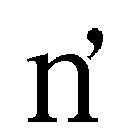

| ふぉーくーるあふたー (ガガガ文庫) | |
| 水沢夢 | |
| (2015) | |
小学館ｅＢｏｏｋｓ
ふぉーくーるあふたー
水沢 夢
イラスト bun150
火星。
生命の源たる水無き、彼の朱き星は......地球時間にして一年前から、一面の〝銀世界〟に変貌していた。
ただし、汚れ無き雪原を意味してそう呼ぶのではない。
文字通り、無機質な銀色。地表の朱を塗り込めた無機の極致──鋼鉄。
それが、火星を覆い尽くした銀色の正体だった。
全宇宙の完全なる機械化こそ生命の最終進化、最大幸福と掲げる邪悪な組織、〝機奇怪會〟。
彼らによって無慈悲に惑星機械化された銀の星こそ、地球に最も近き惑星のなれの果てだった。
そしてこの火星を拠点とし、地球へと機械化の牙を剥いた悪の組織と、たった一人で戦ってきた少女がいた。
人智及ばぬ超常の力の前に、為す術無く銀に染まるはずだった地球を、依然として美しき蒼のままに守り抜いてきた少女がいた。
星の加護ありて、心の輝きを魔法と振るう──。
神秘の存在の名は、魔星少女。
女子高生──星上陽奈は、一年前、地球全人類の未来とともに、偉大な伝説をその小さな双肩に託された。
それは、最高の魔星少女に与えられる称号・リフレイア。〝悪を浄化する者〟を意味する。
太陽の加護を受け、星衣類と呼ばれる〝星〟なる衣をまとった彼女は、太陽のリフレイア、レイアーソルと名乗り戦い続けてきたのだ。
一年間。
一六歳の少女にとっては、掛け替えのない長さの時間。
煌めく青春の一幕が、孤独な戦いに捧げられてきた。
それが、ようやく終わろうとしている。
銀色の火星は今──地球の命運を懸けた、最終決戦の舞台となっていた。
触れただけで鉄をも蒸発させる光線が驟雨と飛び交う空を、少女は涼しい表情で踊り飛ぶ。
敵が生命を否定し機甲の力を以て地球を侵略してくるならば、人間は機械には無き心を武器として迎え撃つ。
目の前に立つは、目測七〇メートルはあろう金属の巨人。
機奇怪會の総統──機怪大王メタリアーム。
棘や角、牙や爪......外敵を威嚇する部位を一切持たず、デッサン人形を銀に染めてそのまま巨大化させたようなシンプルなフォルム。それが逆に、威嚇すら不要と断じる王者の覇様をほとばしらせているように感じさせる。
ところがその鋼鉄の王は一片の余裕すら失い、ネジの一本も同然の少女に翻弄されていた。
〈おのれ、脆弱なる人間めが!!〉
「──悪党の決まり文句ね......!!」
大気を震わせる怨嗟の声を、かくもクールに切って捨てる少女。
火星の地表を被った銀は、液体金属のように自在に姿を変える。今は、数十数百の巨大な砲口を形成し、レイアーソルへとレーザーの集中砲火を浴びせかけていた。
惑星そのものが一個の要塞と化した火星上を、彼女は光の矢となって貫き進む。新幹線以上の大きさと速度で迫るレーザーを、振るった裏拳で容易く弾き飛ばして。
軌道を曲げられたレーザーは地表に着弾。展開された砲口もろとも銀の大地を捲り上げ、元の朱へと還していった。
次は蹴りで。手刀で。
撃てば撃つほど弾かれた光線で自滅し、火星要塞の武装はその数を減らしていく。
業を煮やしたメタリアームは、自らの身体を銀の地表と同じく液体金属のように変形。突き出した両腕の先を、無数の触手に変えてレイアーソルへと撃ち出した。
本体の見た目は変わらず、しかし伸びても伸びても触手は重金属の比重を維持している。
迫り来る、直径数メートル長さ数百メートルの槍。
質量保存を無視した反化学的な伸長を以て、死の重刺突が轟然と襲いくる。
しかし、もはや躱すのも煩わしいとばかりに、レイアーソルはなんと正面から突貫。
目についた端から受け止めては、力任せに千切っては捨てていった。
『レイアーソル！ 敵の攻撃はほぼ無限に続く！ 今こそ魔星少女リフレイア最強の武器・プリズムバズーカを使うんだ!!』
レイアーソルの周囲に反響する、可愛らしい声。
彼女にだけ聞こえるその言葉は、遠く離れた地球からのサポート。
陽奈に魔星少女の力を与え、この一年間支えてくれた仲間。孤独な戦いの唯一の支援者。
彼女が〝ウマちゃん〟と呼ぶパートナーだった。
レイアーソルは──強い。
魔星少女は絶大な力を持つ星の守護者だが、彼女はその頂点においてなお規格外の進化を果たした、史上最強の魔星少女だった。
どんな敵が現れても徒手空拳で事足りる超絶の破壊力の前に、投入された機奇怪會の兵士たちは為す術無く敗北を喫していったのだ。
彼女の身を案じ、次々と護身用の武器を貸与しては、しきりに使用を促してくるウマちゃんの心配性も、一年の間変わらなかった。
「......大丈夫だよ、ウマちゃん。私は絶対に負けない......信じて！」
『うん、負けないと思うけど！ でも、念のため武器を使った方が安全だよ!? プリズムバズーカいうのがまたすごくてね、五色五種類のマジカルアイテムが合体して、超パワーを発揮するんだ!!』
こうして身を案じてくれる仲間の存在は、レイアーソルを勇気づけてくれる。
しかし、レイアーソルは武器を使って戦うことがどうも苦手だった。
だからこそ今日この日まで徒手空拳で常勝してきた彼女にとっては、この大一番で突然慣れない武器を使うことこそ不安だ。
ならばそのウマちゃんの心配を取り越し苦労とすべく、レイアーソルは一層の加速を見せ、メタリアームの銀の身体に雨あられと拳撃を叩き込んでいった。
〈グオオオオ......!!〉
怒りとも苦痛とも取れる咆哮を上げるメタリアーム。
感情を否定した機械の王が動揺し、心の力で戦い抜いた少女が少しの感慨すら見せず美しく舞う──信念を懸けた最終決戦と呼ぶには、両者はすでに大差での決着を見ていた。
『バズーカは好みじゃない？ フフフそんな君におすすめしたいのが、合体の組み替えでできる巨大じょうろ形態だ！ お花に水をやるように分子分解光線を発射する可愛い......』
「素手で大丈夫！ ......見守ってて......!!」
惑星を隔てて見守るウマちゃんへ届けと、レイアーソルは不敵な笑みを浮かべた。
機械化した火星の大地を自ら歩き砕き、メタリアームが突進してくる。
レイアーソルもまた、飛翔の衝撃波で大地の銀をアルミホイルのように捲り上げ、真っ正面からその突進を突き返した。
『優勢の時こそ冷静になろう！ 追い詰められた相手がどんな奥の手を出してくるかわからない、ここは距離を取って攻撃が最善策──あれ!? そういえば、プリズムバズーカっていう長射程武器があるって知ってた!? そのバズーカがまたすごくてね、五色五種類のマジ......』
「さっき聞いたけど......」
『よし使おう、今まで全然使ってこなかった数々の武器も全部使おう！ 最終決戦だし!!』
この優勢を目の当たりにしてなお、サポート役であるウマちゃんの心配は変わらない。
ならばせめて──大技を以て、安心させるとしよう。
レイアーソルは宙空で旋転し、メタリアームの数キロメートル頭上へと急上昇する。
急上昇したのなら......大地を歩む生命は須く、ただ落下するだけだ。
この局面で放つ、最大最後の必殺技とは───
「えい」
────キック。
掛け声は、風呂場に固形入浴剤を投げ込む程度のテンション。
それに似つかわしくない、極大の衝撃が巻き起こる。
火星の薄い大気を全て宇宙まで吹き飛ばしかねない勢いで、周囲が爆裂していった。
星を丸ごと貫かんばかりに大盤振る舞いで加速したレイアーソルの蹴撃が、機怪大王メタリアームの脳天から股間までを、一直線に貫いた。
〈グワアアアアア......そ、そうか......機械ならば燃え尽きる限界領域に、己が心と肉体で到達する......それが人間の強さ......無限の可能性......!!〉
負けることを見越して用意していたのかと思うほどの清々しい敗北宣言とともに、メタリアームは激しくスパーク。
直後、大爆発して水銀のように飛び散り......やがてはそれも、粒子となって消えた。
『在庫がああああああああああああああああああああああああああああああああああああ!!』
大王の断末魔を上回るウマちゃんの意味不明な絶叫が、通信越しに聞こえる。
陽奈は重力と空気の薄さゆえに濛々と粉塵が舞い続ける火星の大地で、全身を被う光の防御膜越しに大きく深呼吸した。
「終わったわね......ウマちゃん」
『そう、終わった......何もかも......終わってしまった......』
通信越しに、終焉を体現したかのような悲壮な呻きが漏れ聞こえる。
機怪大王メタリアームの消滅と同時に、火星表面に建立された、広大な機奇怪會秘密基地も自壊していく。
だが、こうして目に痛い銀色が剥がれて消え、赤い大地が復活していく様を見ても、それをどこか他人事のように思えている陽奈がいた。
地球への帰還準備を始めるレイアーソル。
星間ワープのための魔星力をチャージしながら、ウマちゃんに通信を送る。
「......ウマちゃん。今から帰るわ」
『僕はもう、無に還りたい......』
声に覇気がないが、ウマちゃんもほっとして力が抜けたのだろう。
終業式。高校一年生としての星上陽奈が終わりを迎えたこの日──地球を守る戦士・魔星少女レイアーソルとしての陽奈も、その使命を終えた。
地球侵略に現れた敵を、ことごとくほぼ一撃で葬り去ってきた。
部活動程度のルーチンワークとして、変身し、地球を守ってきた。
ドラマもなければ、波瀾も起こらなかった。
自分の戦いは......傍から見れば、さぞ退屈なものだったのだろう......。
今まさに地球を守り抜いた瞬間だが......そんな平穏無事な一年間に、どんな風に思いを馳せればよいだろうか。
レイアーソルは、エネルギーのチャージが完了してもしばらく火星の大地に佇み、虚空を仰ぎ見ていた。
たとえ大地が銀に染まっても......朱に戻しても。
宇宙の純黒だけは、何人にも侵されない普遍の色彩だ。
「────浄化完了......ってね」
悪を浄化する者としての矜持......いつも言い忘れていたが、最後くらいは言っておかねばなるまい。
青森県は、日本の中心だ。
私──星上陽奈は、故郷である青森県を、最高の都市だと思っている。
本州最北端に位置し、日本どころか、世界の科学と芸術と農耕の最先端。......だと思う。
また、県の形が日本一美しい。都道府県章が、青森県の形そのものを象っていることからも、それは窺えるだろう。
さらに近年、ついにコンビニ大手セビュンイレビュンが歴史的上陸を果たし、もはや中枢都市として一分の隙もなくなったことは、記憶に新しい。これで、東京に負ける要素がない。
そして何より、緑が多い。すごく多い。見渡す限り森だ。
青森県の名は伊達ではないのだ。
昨日は、火星くんだりまで行ってきたわけだけど、だからといって地球、世界、日本全国津々浦々が手近になったかと言えば、特にそんなこともない。こうして郊外にあるショッピングモールに足を運ぶのも、一人暮らしの高校生である私にとっては十分な遠出だ。
高校入学を機に親元を離れ、一人暮らしとなったが......過保護な両親が借りてくれた、セキュリティが自慢らしい部屋は、同じ青森県内にある。未だに広さに慣れない。
「......このぐらいかな」
いつもよりかなり多目の買い物を終えた後、私は人目を警戒しつつ、疑似空間収納箱を展開。宙に開いた穴の中に、両手に提げた大荷物を丸ごと収納する。
魔星少女が使える特殊能力、〝魔星術〟──一般人の認識で言うところの「魔法」で、これはその内の一つ。
原理は全然わからないけど──疑似空間？ だったっけ......何か別の場所に繋がる穴を開けて、中にいくらでも荷物を詰め込める、とても便利な能力だ。
私の好物、炭酸飲料を箱買いする時に重宝した。
帰ろうかと思った時、エントランスの端にあるカプセルトイのコーナーで足を止めた。
子供向けヒーローやアニメキャラ、女の子用のアクセサリー......様々な筐体の中から私が目を留めたのは、ＵＭＡのカプセルトイ、『飾ろう！ ＵＭＡ』だ。
リアルな造形と丁寧な彩色に定評のあるシリーズで、今回で第五弾。
今回のラインナップはグレイ、ビッグフット、ヒトガタ、ジャージーデビル。シークレットが「瀕死のグレイ」で、全五種類だ。
この中だと......特に、ヒトガタが欲しい。
ちょうど買い物のお釣りで小銭ができたので、私は一度だけ回してみることにする。
三〇〇円を投入し、小気味いい手応えのハンドルを数度回すと、橙色と透明で半々のカプセルが転がり落ちてきた。
中身を確認せず、これも疑似空間収納箱の中に素早く収納する。
帰ってからのお楽しみ......というのもあるが、これは自分の欲望を律するためでもある。
疑似空間収納箱のように、私は変身しなくても幾許かの魔星術を行使できる。カプセルトイで、狙った中身のカプセルを操作して引き当てることなど造作もない。
クレーンゲームなど、ぬいぐるみを浮かせてクレーンに紐をかける逆転現象さえ可能だ。
そんなことができてしまうことが嫌なのだ。
そんな考えが、ほんの僅かでも心を過ぎってしまうことが嫌なのだ。
だから私は、何をやるにしても自分ルールで制約を作ってきた。
例えばカプセルトイなら、引くのは一回だけ。中身は帰ってから見る。欲しい物じゃなかった時、二回目にずるい気持ちが生まれかねないから。
いくらでも逃げ道のある縛りプレイだが、こんなささやかな心の抵抗こそ、私を支えてきたちっぽけな誇りでもあるのだ。
万能への自制を日常で積み重ね、この一年間、私は〝人間〟として生きてきた。
いつか消えるであろう、一時の魔法に依存しないように。
私が魔星少女として戦うことを決意した理由は、いくつかある。
そのうちの一つが──宇宙人に青森県を侵略されたくない、という強い思いだった。
まだ見ぬ地球全土を思うより、愛する郷土を守るために戦うと誓った。
青森県を守るつもりが、結果的に地球まで守っていたのだ。
けれど最大の理由は、このＵＭＡにある。
Unidentified─Mysterious─Animal。
未確認生物、あるいは動物。
目撃情報や存在を噂されていながら、生物学上確認を受けていない生物の通称。
そのＵＭＡに、私は夢中だ。
何を隠そう、私の初恋はチュパカブラだった。
幼い頃、テレビの超常現象特番で見て以来、かの神秘の存在に夢中になった。
人間のイケメンが、少女のように甘いマスクや精悍な顔立ちなど様々あるように、吸血生物チュパカブラも再現映像によって色々とビジュアルが違うのもいい。
これが本物だ、と大勢の前で提示できる証拠を持つ者は一人もおらず、あくまで幻想の存在として人々の心に残る。
未知こそ最大のときめき。未知への憧れは、恋にとてもよく似ている。
それから先はツチノコに憧れ、ネッシーにときめき、恋多き人生だったが......その度に、「逢えない」という究極の失恋を味わい、私は女として成長していった。
自分が人と変わっていることは自覚している。
この世界では、変わり者がとかく生きづらいことも理解している。
現に私には、人間の親しい友人は一人もいない。
けれど......心の中だけは偽りたくない。
好きなものは好きだと、たとえ自分一人だけでも、意志を貫き通したいから──。
そんな私の転機は、逢えないはずのＵＭＡに逢えてしまったことだ。
一年前、高校の入学式の放課後──私は、ウマちゃんと出逢った。
運命は信じるより感じる、がモットーだが、あの時ほど運命を感じたことはなかった。
適格者の少女に魔星少女の力を託し、侵略を受ける星を救う。その使命を帯びて遥か宇宙の果てからやってきたウマちゃんは、私の理想のＵＭＡそのものだったのだ。
ウマちゃんに神妙な顔で（それがまたすごくかっこよかった）魔星少女になって欲しいと言われ、私は二つ返事で引き受けた。
何故なら、侵略者もまた宇宙人──ＵＭＡだったからだ。
たった一日で、日常が非日常に変わる。こんな素敵なことがあるだろうか。
かくして私は運命の一目惚れを果たしたウマちゃんとともに、一年間地球を守ってきた。
ＵＭＡとともに、ＵＭＡと戦うときめき。私が戦いを決意した最大の理由が、これなのだ。
誤算だったのは、機奇怪會の兵士たちがみんな均一的な見た目で、しかもみんな弱かったことだ。戦いが続くにつれ、驚きがなくなり、モチベーションが下がっていったから......。
けれど、ウマちゃんとの日々は充実していた。
種族は違えど、そこに心があるなら、二人で喜びも悲しみも分かち合える。そこが、同じＵＭＡでも機械兵士たちとウマちゃんの違いだ。
そして、一年。
昨日、私の戦いは終わりを迎えた。
「今日で、これを使うのも終わりにしないとね......」
疑似空間収納箱の口が閉じていくのを追憶のままに見つめながら、私は決意を固める。
もっともっと、ウマちゃんと仲良くなるんだ──。
何も能力を使うことなく、私は自分の二本の足でショッピングモールから家へと向かう。
「せんぱーい！」
帰路をのんびりと歩いていると、歩道の向こうで女の子が手を振っているのに気づいた。
弾けるような笑顔。
元気を身体いっぱいに表した女の子だ。
「偶然ッスね！ こんなところで逢えるなんて！」
女の子は、信号が変わるや私の側まで駆け寄ってきた。
「......遥。ホント、よく会うわね......」
地平遥。
私の中学の後輩で、受験に合格し、この春からは同じ知張栄学園に通うことになるらしい。
やや幼めな、よく通る声。
笑顔を彩る、可愛らしい八重歯。
シャギーが強めのミディアムショートヘアが、笑顔に実によく映える。前髪を分けておでこを見せているのが、快活な彼女によく似合っていた。
彼女は、私の秘密──レイアーソルだということを知る、唯一の一般人。
戦い始めてほどなく、機奇怪會の兵士に襲われているところを助けたのが馴れ初めだった。
その後、お礼を言おうとしていたらしい遥が後をついてきていることに気がつかないで、戦闘現場から自宅に帰る途中で変身を解いてしまったのだ。
このことを誰かにバラすとかそんな気が彼女になかったのが幸いだったが、以来、正体の秘匿についての危機意識は強まった。さすがに正体が周知されたら、普通に生きていけないから。
それにしても、今みたいに、外出中の遭遇頻度が物凄く高いのが不思議だ。
「戦い......終わったんスよね？」
恐る恐る聞いてくる。昨日、メールで報告はしておいた。
一度だけとはいえ、戦いに巻き込まれた遥だ。もう地球に危険はないと、安心させてあげたかったのだ。
「うん。親玉を倒したから」
「じゃあじゃあじゃあ！ これからは普通に過ごせるんスよね!?」
「......多分ね」
「やったー!!」
往来で、人目を憚ることなくばんざいをする遥。
私服のシャツに芸術的な乳袋を形成する、非常にすくすくと育った胸が──ぷるん、と揺れた。
「............」
無意識に自分の胸を触っていることに気づき、私は勢いよく手を離す。
声や容姿や仕草が子供っぽいのに、遥はめっちゃ胸が大きいのだ。
こうまで桁違いに大きさが違うと、比較することさえ畏れ多く感じられる。
後輩なのに。年下なのに。
だけど、私は自分の胸が小さい理由に心当たりがあった。
──魔星少女だ。
レイアーソルとして戦い始めてから一年、私の胸は一ミリたりとも成長しなかった。
一ミリも、だ。
成長期に。一五歳から一六歳......保健体育の教科書に「女性の身体が丸みを帯びてくる」と書いてある時期に、だ。
それもそのはず。あれだけの力を得るのに、何も肉体的代償が無いはずがない。
〝ウマちゃん〟は魔星少女になったことによる後遺症なんて何も無いと言っているけど、そんな気休めを真に受けるほど、私は子供じゃない。
私は、火星の大地を割るほどの腕力と引き替えに、胸が全く成長しない恐ろしい呪いにかかっていたのだろう。
けれど、戦いは終わった。
私はもう二度と、魔星少女に変身することはない。
呪いも......程なく解けるはず。
一年間の遅れを取り戻すように、今年度からマッハで成長すればいいのだ。
「よかった......先輩、もう危ないことしなくていいんスね！」
遥は我がことのように喜んで、私の腕を絡め取った。
「今までだって、大して危なくはなかったわよ」
「いやー、でも本当、お疲れ様ッス！」
甘えるように肩に頭を寄せてきたけど、私の方が少し背が低いのでバランスが悪い。

共学なのに女子校ノリというか、この子はスキンシップ過剰なのだ。
それにこうして腕を組むと、大層なお胸が私の二の腕に押しつけられて──何か悔しい。
自分にない感触を持っているこの子も、私にとってはＵＭＡのようなものだ。
「本当は、世界中から感謝されるはずなのに......秘密のヒーローの宿命ッスね」
「いいのよ。有名人になんてなりたくないし。今日からは、普通に過ごすの」
世界は、侵略に訪れた宇宙人の存在を知った。
それと戦う、人智を超えた力を振るう女の子の存在も知った。
けど、世間でのレイアーソルへの無関心ぶりは泣けるものがある。名乗っていないから当然だが、名前さえ知られていない。
ニュースでの扱いは、最初から最後まで、近所での小火程度のもの。事務的な報道だけ。
一応、超常の存在なのだ。ツチノコやネッシーが堂々と人前に姿を晒しているようなものなのに、連続二分以上ニュースで映ったこともない。ネットに動画もほとんどアップされない。
ついに最後まで、盛り上がることなんてなかった。
仕方がない。私には、人から支持されるほどの魅力なんてないのだから。
「......先輩？ どうかしたんスか？」
辛気臭い顔をしているのを見咎められたのだろう、遥が心配そうに覗き込んでくる。
「何でもない。変わらないなあ、って思っただけ」
火星で最後にそうしたように。
抜けるような青空を振り仰ぐと、零れる言葉にも僅かな感慨が滲む。
「......うん。別に、昨日までと何も変わんないわよね......」
前向きに考えればいいんだ。私の戦いは、レイアーソルとしての日々は、世界に何も影響を与えなかった。
でも、変わらないことは悪いわけじゃない。変わらない何かを見ながら、自分が前に進むことはできる。
青森県の空は、今日も青い。
そして、これからもきっと青いだろう──。
─Ｆｏｕｒ Ｃｏｕｒｓ ＥＮＤ─
星上陽奈は、自分に自信がない。
小さな胸へのコンプレックスがその最たるものだが、他にもいたる所を気にしていた。
今時の女子高生、一六歳にしては控え目な発育、かなり小柄な身長。
口下手で、付き合いが悪くて、諸々の好みが変わっていることも自覚している。
だがそれは全て、見方を変えるだけで長所になる。背伸びとは無縁の、然るべき少女の魅力に本人が気づいていないだけだ。
透き通るような肌に、整った鼻梁、薄桃色の可愛らしい唇。腰下まで流れる艶やかな黒髪。
気怠げな双眸は、どこか哀愁を漂わせており、庇護欲をそそる。
群を抜いて特徴的なのが、頭頂から見事な逆さ「し」の字を描いて垂れ下がる、何とも立派なアホ毛だ。本人はくせ毛と言い張っているが、まあ、アホ毛だ。
これが歩く度にぽよんぽよんと弾むので、彼女とすれ違う者は思わず注目してしまう。
乳は揺れずも、アホ毛は揺れる──。
見たままの事実を認めるだけで、後世に遺り伝わる至言のようだ。
はっきり言って、陽奈は美少女だ。自信を持っていい。
しかし、彼女の自信のなさを助長したのは、何あろう、英雄として輝いていたはずの、昨日までの一年間の戦いの日々だった。
後輩の前では有名になりたくないなどと強がったが、本当は少し傷ついている。
テレビに映したくはないけれど事務的に仕方なく映しているといわんばかりの、世間の扱い。
変身中に素顔を晒していても星衣類の機能で正体は秘匿されているが、人々に認識されるのは陽奈の素の容姿。不人気の理由が自分の魅力の無さのせいと思い込むのも、無理はない。
そして、魔星少女としての自分に何の未練もないのも、当然のことだった。
★
遥と別れた後、陽奈は自宅のマンションへと早々に帰宅した。
「ただいまー、ウマちゃん」
玄関で足首を振って、靴を脱ぎ落とす。ひっくり返った靴を直しもせず、部屋の中へと入る陽奈。
いつもなら同居人であるウマちゃんが、返事代わりに手洗いとうがいをするよう言ってくるのだが、今日はそれがない。
広い部屋だ。一〇〇平米近くある２ＬＤＫのマンションは、女子高生が一人暮らしをするにはかなり分不相応に感じられる。
まあ青森県なので、東京二十三区のそこそこのワンルームと同じぐらいの家賃で、この間取りに住めるのだが。
「ウマちゃーん？」
リビングへと向け、もう一度呼びかける。
リビングに人影はない。
真新しいフローリングの上に、赤い小さなぬいぐるみがあるだけだ。
嬉しさか、寂しさか、話し相手を求めてぬいぐるみに声をかける──年頃の少女としてそう珍しい光景ではない。一人暮らしならばなおさらだ。
────ぬいぐるみが、動くことを除けば。
赤いぬいぐるみはよろよろと動きだし、生気に乏しい声で応じた。
「帰ったのかい、陽奈......」
真っ赤な身体の各ブロックは角張っているのだが、ぬいぐるみ的に丸みを帯びている。
頭にはくりっと丸い黒目が二つ。
引き結ばれた口。......というか、動かない真一文字のラインが口代わりなのだろう。
特徴的なタテガミと天を衝く長い尻尾が、青森県の郷土玩具・八幡馬を連想させる。
仮にこんな説明を受けたところで、多くの人はネットで検索でもしなければわからないだろうが、それがモチーフとして一番的を射た喩えだった。
彼こそ、レイアーソルが昨日の最終決戦で通信をしていた相手。
陽奈に魔星少女の力を託し、戦いの日々を支えてきた相棒だ。
「どしたの？ 随分疲れてるみたいだね」
リビングに入ってすぐ、ウマちゃんを抱え上げる陽奈。
そして愛おしげに抱き締め、そのふわふわの身体を撫で擦る。
「ちょっ、だからこのペットみたいな扱いやめてくれない!? 一年言い続けてもやめてくれなかったけど!!」
ウマちゃんは抗議するが、陽奈は聞き入れない。
「別に減るもんじゃないし、いいじゃない。いつも言ってるでしょ、思わず抱き締めずにはいられないモフモフの身体をしてる、ウマちゃんの自業自得だって」
「生まれつきこういう身体なんだよお!!」
モコモコと激しく律動して陽奈の抱っこを振り解き、脱出。ウマちゃんはフローリングの床にぽてっと着地した。
やはり、言葉を話す際に一切口が動いていない。目も、瞬きをする様子がない。
稼働するのは、その短い四肢と頭だけ。
動くぬいぐるみ、という喩えは、全く間違っていないようだ。
陽奈は買い物帰りとは違って人目を気にせず、リビングに堂々と疑似空間収納箱の入り口を展開。テーブルの上に、買ってきたペットボトルの炭酸飲料を大量に並べていく。
陽奈自身が炭酸好きなこともあるが、ウマちゃんが口にできるのが液体だけだからだ。
入ったものが出ていく場面を見たことがないので、口から先がどうなっているのか陽奈は知らないが......。
「これ、ウマちゃんの分ね」
ウマちゃんに差し出した炭酸飲料は、強炭酸エナジードリンクだ。「上はシュワシュワ、下はビンビン、な～んだ？」という、イラっとするなぞなぞが煽り文として缶に書かれている。
他には炭酸ではないが、やはり滋養強壮系の瓶ドリンクが何本か並べられている。
「ウマちゃん、昨日から疲れてるみたいだから......元気の出そうなものを選んできたわ」
「う、嬉しいけど僕、飲み物の中の成分までは身体に取り込めないから......」
そう気遣う陽奈は逆に、あれだけの戦いの翌日に全く疲れている様子はない。
疑似空間収納箱からさらにチキンやケーキを取り出して並べ、ささやかながらもパーティーの準備は調った。自分と、ウマちゃんの頭にも小さなトンガリ帽子を被せ、陽奈は控えめな音のクラッカーを鳴らす。
「そいじゃ、地球防衛完遂と魔星少女レイアーソルの引退を祝して、二人だけの打ち上げパーティーを始めるわよ！」
陽奈がそう口にした途端、ウマちゃんは露骨に挙動不審になり始めた。
「う、うん、そ、そ、そ、そ、そ、そ、そ、そうだね......」
動かないはずのウマちゃんの目が、ゲーム機のアナログパッドのように小刻みに泳ぐ。
「やー、何か、ようやく実感湧いてきたかな。実は私、昨日あのザコを倒した後も、戦いが終わったって気がしなくてさー」
震えるウマちゃん。せっかく被せたトンガリ帽子が、振動で見る見るずれていく。
居酒屋のカウンターでお猪口を傾ける妙齢の女性の雰囲気で、陽奈はしみじみと呟いた。
しかし、目の前には仕事帰りのサラリーマンの最初の一杯のような気持ちのいい飲みっぷりで、瞬く間にペットボットル一本が空になっている。
「こうして打ち上げをすると、いよいよ引退なんだ、って思えてくるわね......」
途端、ウマちゃんはやけにオーバーアクションで話し始めた。
「無理に引退しなくていいよ!? 君がどうしてもと言うなら、魔星力は残しておけるし！」
あまりにもあっさりとした能力の継続提案。
それでも、陽奈の引退の決意が揺らぐことはなかった。
「早く普通の人間に戻りたいのよ」
陽奈が右の手の平を胸の前で上向けると、そこに黄昏色の燐光が集束し始めた。
光のラインを用いた直線ツールで四辺を作り、ワンタッチで囲いの中を塗りつぶす。
空中というキャンバスに、数アクションで一枚のカードが描画された。
鮮やかな黄昏色の縁で彩られた、太陽を意匠としたエンブレムの描かれたカード。
魔星紙片と呼ばれる、レイアーソルに変身するためのカードだ。
正確にはさらに十数枚の魔星紙片を陽奈は持っていたが、この変身用のカード以外は一枚たりとも戦闘で使う機会がなかった。
「元々借りてただけの、人の手に余る力なんだもの。用が済んだら返すのが道理でしょ」
一瞥だけを送り、すぐにカードを消す陽奈。
「でもね、陽奈。いつまたあんな奴らが、この地球を狙って現れるとも限らない。君はその力をこれからも持っておくべきだよ」
おそらく拳を握り締めているつもりだろう──短い前足をぐぐっと構え、ウマちゃんは力説する。
「その時はその時だし」
「その時僕がまだここにいて、再び君に力を託せるとも限らないんだよ!?」
「え？ ウマちゃんはずっとここにいるよ？」
その一言を言い放った一瞬だけ、陽奈の瞳に闇が垣間見え、ウマちゃんはぞくりと身を震わせた。
聞き間違いでなければ、懇願でも希望でもなく、断定だったが......。
「......まあ、引退のことは置いておくとして」
「だから私は、もう未練ないって」
「置いておこう」
しきりに話題を逸らそうとするウマちゃん。
これ以上疑いの目を向けられまいとしてか、強炭酸をストローで一気に吸い上げた。
「ぼっふぉ！ ぶぇっふぉおおおん!!」
そしてむせた。
くりっとした丸目と口が不動のままむせる光景は、かなりシュールだ。
「......んぐ、君はさっき、昨日戦った機奇怪會のボスをザコだと評したね。数多の銀河をわたり、多くの惑星を機械化という終焉へと誘ってきた絶対の存在、機怪大王メタリアームを」
「戦闘の中継見てたでしょ、全然弱かったよ？ あいつ」
惑星の形が変わりかねない一大決戦を経てなお、この余裕。
ウマちゃんは呆れとも感嘆とも取れる、深い溜息をついた。
「はっきり言おう。君の戦士としての才能はずば抜けている」
「ふうん」
陽奈の淡泊な応答も相まってか、逆にウマちゃんはヒートアップし始めた。
「というか、規格外すぎるよ！ 何で素手!? 武器も使わないでほぼノーダメでラスボス沈めるとか、ヒーロー業界ナメてるの!?」
「そーゆー業界のことは、てんでわからないから......」
面目なさそうに恐縮し、リビングの隅に設置されたメタルラックに目を向ける陽奈。
おどろおどろしい怪獣やＵＭＡのフィギュアがたくさん並んでいる。
子犬や熊、ウサギといった女の子らしいぬいぐるみなど、影も形もない。
陽奈が知識明るいのは、大好きなＵＭＡ業界ぐらいだ。あらゆる情報を暗記している。
ウマちゃんにふわっとした返しをしているうちに、ペットボトルは三本まで空になった。
夏場でもなければ有酸素運動を継続しているわけでもないのに、凄まじい水分補給度だ。
「メタリアームに限った話じゃないよ！ この一年間、現れる敵現れる敵、全部パンチかキックかチョップで倒してたじゃないか！」
「ややこしいんだもん。変身だっていちいちカード差し込まないといけないから、慣れるまですっごい苦労したし。この上武器がたくさんあるなんて言われても、覚えきれないよ」
「覚えなかっただけだね！ すっごい簡単な仕組みじゃないか！ 子供向けなのに!!」
あっ、と口を噤むウマちゃん。陽奈は特に気にした様子はない。
魔星少女レイアーソルには、様々な武器やアイテムが与えられていた。
例えば、標準装備のステッキ型の武器・太陽杖プロミネンスタッフ。
魔星力を込めて弾丸のように発射したりと便利だが、ほぼ使われなかった。
一事が万事、次々に託される支援アイテムの数々を使うまでもなく、レイアーソルは己が五体こそを最強の武器として敵を圧倒、ことごとく撃破していった。
「ずっと余裕で倒してきたからこそ、人や建物にも全然被害が出てないでしょ？ いいことじゃない」
買ってきたホールケーキをナイフで切り分けながら、陽奈は実に穏やかな声で問いかける。
「武器を使えばもっと安全だったかもしれないよ!?」
「パンチとかキックだから当たるんであって、私、飛び道具とか絶対外すと思うし」
「多少弾道がぶれても魔星力で軌道を補正できるから、心配ないって!!」
不毛な応酬に、ケーキを切るナイフが止まる。
「......もしかして、私が武器を使わないと、ウマちゃんが困るの？」
「い、いや、それは......」
「ウマちゃんってさ、基本秘密主義だよね。特に追及はしてこなかったけど......」
陽奈の持ち上げたナイフが、シーリングライトの逆光でギラリと光る。
どこか象徴的な光景だった。
「もしかしてウマちゃん、今までず────っと、私に何か大切なことを隠してない？」
「げふうん」
炭酸ドリンクを吹き出すウマちゃん。
人柄が偲ばれる、わかりやすすぎるリアクションだ。
「......まあ、いいけどね」
再びケーキを切り始める陽奈。未知を愛する彼女は、秘密に対する不安をさほど持たない。むしろ、ウマちゃんの秘密主義を楽しんでいる向きさえあった。
だが──今日のウマちゃんは、何か変だ。単に隠し事をしているだけではない気がする。
これは、一切顔のパーツが動かないウマちゃんから喜怒哀楽を読み取れるまでになった陽奈だからこそ感じる違和感だ。
そうなると、今度は秘密を曝きたいという好奇心の方が勝ってしまう。
陽奈はナイフを皿に横たえ、さりげなく探りを入れてみることにする。
「ところで、ウマちゃん。私たち、同棲し始めてもうすぐ一周年だね？」
唐突なメモリアル宣言に、ウマちゃんの噴き出す炭酸飲料がいよいよ宙に虹を描き始めた。
マスコットが家に居つくことを同棲と表現した魔法少女は、人類のアカシックレコードを紐解いても彼女が初ではないだろうか。
「戦いも終わったことだし、これからはもっと、お互いのことを知りたいと思わない？」
陽奈はウマちゃんの隣に移動し、帰宅後すぐのようにぎゅっと抱きしめた。
「ペット扱い禁止!!」
同じリアクションで脱出するウマちゃん。
「だからペット扱いじゃなくて、ウマちゃんのことは大切な家族だって思ってるのに......私に抱き締められるの、めっちゃ嫌がるよね......」
「う......」
さすがに、ウマちゃんにも罪悪感が見えた。
「そりゃ私の胸はさ、同級生に比べればちょーっと控えめだけど......！ 女の子に抱き締められて嫌だってのはないよね？」
「ちょっと、って便利な言葉だよね、ゼロも内包してるもんねほっ!!」
陽奈は軽やかなリフティングでウマちゃんを蹴り上げ、太股でワントラップ入れた後に両手でキャッチし、再びその自己申告では控えめな胸に迎え入れた。
「大切な家族でこんな軽やかにリフティングするのか君は!?」
「大切な家族だからこそ、失礼なこと言ったらリフティングするでしょ」
一般家庭の常識かは不明だが、それだけ遠慮のない関係だということだ。
「ねえ陽奈。君がＵＭＡを好きなのはよく知ってるよ。その類い希な未知への好奇心こそ、僕が君を適格者として選んだ大きな理由だからね」
陽奈の胸に設置されたまま、ウマちゃんは懸命に諭す。
「でも、いくら僕たちが別の種族だっていっても、やっぱり抱きしめられると困るよ」
「どうして困るの？ ......ウマちゃん、もしかして故郷の星に好きな女の子でもいるの？」
からかい半分で、カノジョが浮気を疑うような質問をする陽奈。
「いいいいいいいいいいいいいいいいいいい、い、い、い、い、い、いないよほぉ!?」
身体をねじる勢いで首を振るウマちゃんを見て、陽奈の詰問はからかいだけでは済ませられなくなった。
「................................................ふーん......」
秘密を楽しむ余裕はいよいよ消え去り、名状しがたい感情が鎌首をもたげる。
「ま、まあつまり、適度な距離を保つのもいい関係だよ、ってことが言いたくてだね......」
たとえそれが男女の恋ではなくても、生まれる独占欲は同じ。
自分がウマちゃんの一番の理解者であるという心の余裕が崩れた時──もっとスキンシップをして仲良くなろう、そうして秘密を教えてもらおうと陽奈が考えるのも、自然なことだ。
陽奈は決意めいた光を瞳に宿らせ、ゆっくりと立ち上がった。
そして目を伏せると、おもむろにシャツのボタンに手をかける。
特に関心も示さなかったウマちゃんだが......シャツがソファの上に置かれ、スカートが床に落とされ、その上ブラジャーにまで手をかけたところで、ギクリとして視線を逸らした。
「あ、あれ？ 着替えるなら、僕部屋の外に出ているけど......」
「別にいいわよ。恥ずかしくないし」
ウマちゃんの気遣いに淡々と返し、躊躇いなくブラジャーを外す陽奈。
......小さい。
ギャグにして面白いレベルで突き抜けたド貧乳なわけでもなく、かといって気休め程度にはあるかと言えば、やはり普通に小さい。非常にいじりづらいラインの微乳と言える。
「え、えーっと......」
ウマちゃんは所在なく後ろを向く。
「よーし、全裸になったー、っと」
追い打ちをかけるように、空々しく口にする陽奈。
高校生になって一人暮らしを始めて以降、彼女は生来のずぼら加減が顕著になった。
今も、脱いだ服を畳みもせずそこら中に散らかしている。
この部屋が綺麗に保たれているのも、ウマちゃんが人知れず掃除をしてきたからなのだ。
だがそんな程よい共生関係が、より一層陽奈に同棲を意識させたのかもしれない。
陽奈は音も立てずウマちゃんの背に手を伸ばし──むんずと掴み上げた。
「んじゃ、引退パーティーの休憩に、一緒にお風呂に入ろっか、ウマちゃん！」
「えっ!?」
それは、恋人同士の甘い触れ合いと呼ぶには余りにも純粋で。
不器用な父親が、息子とのコミュニケーションに「久しぶりに父さんと風呂に入るか！」と提案するようだった。
そのまま丁重に、お風呂場へと運んでいく。
陽奈の焦りのようなものを感じ取ったのか、浴室に入ったところでウマちゃんは言った。
「仲良くお風呂に入れば、僕が包み隠さず全てを話すと思っているのかい......。無駄だよ陽奈、必要な分だけは心を許し合っている、今のベストな関係から進むことは──ほぉん！」
軽く自分に酔った口調での語りも、半ばで遮られる。
ウマちゃんは、ひんやりとしたものが自分の背中に垂らされた感覚に身震いした。
仄かなアロマの香り。
シャンプー......いや、ボディソープだ。
「!? 僕の身体は魔星力で清潔が保たれているから、こういうのは必要ないんだっ......」
抗議しようとして振り返るも、陽奈の裸身がモロに視界に飛び込んできたウマちゃんは慌てて頭を背けた。
「おふう!!」
陽奈のすべすべの手が、ボディソープをウマちゃんに丹念に擦り込んでいく。
説明を聞いてもなお洗おうとしてくれているのかと、勘違いしかけた。
だが、陽奈が自分の背を右手で掴んで持ち上げ、左腕に押し当てたことで、ウマちゃんは嫌な予感に全身を貫かれた。
「..........................................何をする気だい」
「前から思ってたんだ。ウマちゃんって、スポンジみたいにいい感触だなー、って」
「スポ......」
「これで身体を洗ったら気持ちいいだろうな、って......！」
ほんのり肌を上気させた裸身の美少女が、桃色の唇を僅かに吊り上げる。
「待────」
制止の声も間に合わず、陽奈はウマちゃんをボディスポンジにして身体を洗い始めた。
「あんぎゃああああああああああああああああああああああああ!!」
ＵＭＡでありながら怪獣のような声を上げ、ウマちゃんは戦慄する。
「あははははは、何かくすぐったい？ でも思った通り最高の肌触りだわ！ 市販品には出せない滑らかさね!!」
「君が知らないだけで優秀な市販品はいっぱいあるよ！ さあ、僕を置いて買い物の旅に出かけよう!!」
底抜けに前向きなフレーズで「やめてくれ」と頼むも、陽奈の手が止まる気配はない。
腕を擦り終わり、肩へ。
「ちょ、やめ、ひいいいいいいいい!?」
そして首元へ。背中へ。
馬型のぬいぐるみは、為す術無く年頃の少女の柔肌を滑っていく。
「僕と君は違う惑星の違う生物なんだよ!? 僕は君の裸に魅力なんて感じないし！ こんなことされても心は動かないから！ むしろ怖いから!!」
遥か見上げる怪獣に鷲掴みにされ、身体を擦られる光景を想像すれば、今のウマちゃんの膨大な恐怖が伝わるだろうか。裸身の美少女というご褒美は、人間にしか適用されない。
それ以外の生物からすれば、むしろ逆なのだ。しかし陽奈は違った。
「私は面白いからいいわ!!」
「やべえ性質悪りィこの地球人!!」
肌を滑走する狭間に垣間見える陽奈のアホ毛が、妙に目を引く。
手慣らしにシャワーを浴びてぺたんとしている陽奈の髪の毛の中、頭頂のアホ毛だけが弧を描いたまま形を保っているのだ。
今のウマちゃんには、それが魂を刈り取る死神鎌に見えた。
「こうして裸の付き合いをすれば、種族がどうとか下らない偏見なんてなくなって、お互い腹を割って話し合えるようになるわよ......。未確認な心を確認し合いましょ......？」
「！」
陽奈の目が据わってきた。
もっともっと仲良くなりたい。陽奈はその一心でコミュニケーションを図ろうとしているとはいえ、ウマちゃんにとってこのスキンシップは尋問、そして拷問に変わりつつあった。
「くっ......負けるもんか......ほひいいいいいいいいいいいいい!?」
初心なねんねの嬌声が浴室に反響する。
ついに陽奈は、ウマちゃんを使ってその控え目な胸を擦り始めたのだ。
しかも、心なしか先ほどまでよりもソフトタッチ。
より鋭敏に、柔らかな感触がウマちゃんの全身を襲う。
「ウマちゃんが......私に隠している、大切なことは、何......？」
先ほどまで声を上げて笑い、こそばゆがっていた少女の顔が、ほんのりとろんでいる。
「おい何で心なしか声が上擦ってんだコノヤロ────────────ッ!!」
ウマちゃんに指摘されてはっと我に返った陽奈は、その未確認の感覚をさして気にも留めず、他の部位を洗い始めた。
不安のままに始めた触れ合いだが、ウマちゃんの過剰なリアクションも相まって、どんどん陽奈は楽しくなってきた。いっそ、もう少し困らせてみたい、とも感じる。
「ここから先は、私も恥ずかしいけど......覚悟を決めたわ......」
「胸で恥ずかしがっておけよう!!」
思わず突っ込んでしまったウマちゃんの視界に、肩の裏側に隠されし桃源郷が広がる。
「腋!? 腋いくの!? 女の子としてそれはないよね!? 腋はないよぎゃあああああああああああああああああああああああ!!」
ウマちゃんは後悔していた。
星上陽奈は──地球を守った少女なのだ。
その胆力において、地球に並ぶ者はない。異種族に恐れ戦く自分とは違う。
地球外生物で腋を洗うことに、微塵の恐怖も躊躇も感じていない────!!
「ワキヲアラワレテール!!」
己が五体で他者の腋を洗われるという恐怖に、ウマちゃんの言語中枢が崩壊する。
これが拷問の恐ろしさだ。
早く楽になりたい。早く解放されたい。
心の隙を的確に突き、ちっぽけな勇気や自尊心など容易く砕いてくる。
「ねえウマちゃん。そろそろ教えて？ 君の本当の目的は何？ 何でやたらと私に武器を使わせようとしたの？ 私の戦いは、本当にこの世界を守るためだけのものだったの？」
「い、言わない、ぞ......」
ウマちゃんがボディスポンジに転生してから、まだ三分も経っていないはずだ。
だがその声は、すでに三日三晩不眠不休で拷問され続けた後のように憔悴しきっていた。
ウマちゃんにとって幸運なのは、陽奈が拷問慣れしていないことだ。
拷問は終わりが見えないからこそ、緩急があるからこそ、いつまで耐えれば解放されるかわからないからこそ、心を挫く。
腋をごしごし洗われるという地獄を乗り越えた以上、あとは解放されるだけではないか。
「まだ白状しないのね......!!」
だが、地獄とは果てがないからそう呼ばれるのだ。
陽奈は肩幅に足を広げ姿勢を正すと、追加のボディソープを手の平に掬い、ウマちゃんの背中に擦り込んでいった。
自分の背を掴んだ手が下がっていくのを感じ、あとは脚でも踵でも擦って終わりだと思っていた──腋が拷問の最極点だと思っていたウマちゃんの希望は、脆くも砕かれる。
「..................え、う、嘘だろ......まさか......」
「──────ここも洗うわ」
さしもの魔星少女も時間を操る能力は有していなかったが......この瞬間、確かに時間は止まった。
「......僕で？」
「......君で」
「フ、ハ、ハハハ！ 馬鹿な、できるはずがない！ よりによって、そんな──!!」
現実から目を背けるように、芝居がかった口調で大声を張り上げるウマちゃん。
一縷の希望を抱いて陽奈の顔を見る。
太陽の名を冠する少女の瞳は──果てのないブラックホールのように純黒で塗りつぶされていた。陽奈自身、もう楽しくて何が何だかわからなくなっている。
「......できるはずがないって言われたら、やりたくなるわよね......!!」
陽奈は......地球最強の戦士の覇気を存分にまとわせた凜々しい声とともに。
ウマちゃんを、己が股間へじわじわと近づけていった。
「言います！ 言いますから！ 助けて─────────────────────────────────────────っ!!」
脚の付け根への着弾まで、あとコンマ数秒。
勇気ある決断、勇気ある降伏が、ウマちゃんを救った。
★
ぶおー。
陽奈の艶やかな黒髪を揺らすドライヤーの音だけが、洗面所に木霊する。
濡れた身体はとうに乾きながらも、ウマちゃんはまん丸お目々を虚ろにし、ガタガタと震えていた。
「闇だ......闇を見た......」
「ちょ、ちょっと何よそれ、女の子の〝女の子〟の暗喩......？」
羞恥には割りと無頓着な陽奈でも、そんなことを口にされてはぽぽっと頬を赤らめようというものだ。
「お前自身の心をストレートに表現してんだよおおおおおおおおおおおおおおおおおおお!!」
現世地獄を味わったウマちゃんは、マイルドにツッコミを入れる余裕もない。
陽奈は地味な葡萄茶色のジャージに着替えると、リビングに移動。
連行される形となったウマちゃんは、観念したように嘆息する。
「あんな恥ずかしい思いをしてまで僕を拷問するんだ、君の覚悟はよぉくわかったよ」
「拷問じゃなくて、スキンシップだってば......」
「そう答える君だからこそ、怖くてたまらないんだ!!」
魔星術で炭酸水を冷やし、ケーキも適温に保つ陽奈。
引退を仄めかしながらも、陽奈は魔星術を日常の一部として扱っている。
「どの道僕も、進退谷まっていた......。全部打ち明けるよ。一人で苦悩するより、共犯者がいてくれた方がいっそ気が楽だ」
その姿を見て、ウマちゃんは決意を固めた。
「共犯者......？」
「その代わり、約束してくれ！ ここから先、僕と君は真の意味で一蓮托生だ」
いつになく真剣な表情で語り出すウマちゃん。
「僕の話を聞いて......憤ってくれてもいい。悲しんでくれてもいい。けれど......蔑みはしないでくれ。今から話すことは、僕にとって......人生を賭けた大仕事なんだ」
惜しむらくは、事後。
この先どれだけシリアスな雰囲気を作っても、女の腋を洗われた生物という色眼鏡で見られるのが不憫だった。
「......え、やだ......それって、プロポーズ!?」
陽奈は頬を両手で押さえていやんいやんと顔を振る。
恋人ごっこの楽しさに、完全に目覚めてしまったようだ。
「正式に私のカレシになるんだから、ちゃんと条件は守ってもらうわよ！ 私、尽くすタイプだけど束縛はきっちりするから！ 浮気を甲斐性って認めないのがポリシーだし!!」
ピッと人差し指を立て、ウインクも軽やかにカノジョアピールに余念がない陽奈。
「めんどくせ──────────マジめんどくせ─────────────この女!!」
世の不条理をその綿じみた身体で存分に受け止め、ウマちゃんは床を転がりまくる。
本人が言うには自動的に身体が浄化されるそうだし、こうして転がせば優秀な掃除機として機能するのではないだろうか。
陽奈は、にまにまと意地の悪い笑みを浮かべている。
それを見てウマちゃんも、またもやからかわれていたのだと気づいたようだ。
「とにかく、言うよ。陽奈、実は......」
「うん」
「実は......その......」
表情を引き締めたものの、よほど真実を告げるのが恐ろしいのか、どうにも煮え切らない。
「き、君は、人知れず戦ってきたと思っているかもしれないけれど......違うんだ」
男気を見せたウマちゃんは、神妙な表情で切り出した。
「厳密に言えば、そーでしょ。別に、人目につかないように戦ってきたわけじゃないし」
レイアーソルは何度も目撃され、それでも人気が出ず、秘密のヒーローのまま終わった。
存在を一切知られることなく戦ってきたわけではないのだ。
後輩の遥に至っては、正体を知っているのだし。
「違うんだ」
喉があるのか、唾が出るのかも不明なウマちゃんから、ごくりと生唾を飲む音がする。
「あのね！ 僕も君を信頼して白状するから、あまり怒らないでね。股スポンジは勘弁ね」
「......それは話の内容を聞いてみないと何とも。でもわかった、股はなしにするね」
股はなしということは胸や腋はありということだが、契約の不備にも気づかず安心したのか、ウマちゃんは意を決して陽奈を振り仰いだ。
「実は──君の戦いは、テレビ番組としてこの一年間放送されていた」
ぬいぐるみが振り絞った渾身の告白が、一人暮らしの女子高生の部屋で炸裂する。
「......................................................は？」
もちろん、それを聞いた当人が瞬時に呑み込める事実ではなく。
「えっと......え？」
陽奈は、指でこめかみを押さえて思案する。
熟考の後、やや大げさな所作で手の平を拳でぽん、と叩いた。
「あ、もしかして、ニュース番組のこと？ でも私......レイアーソルって、〝放送〟っていうぐらいの扱いじゃなかったけど」
ニュースで小さく拾われたことがある以外だと、秋の番組改編期に放送していた超常現象の特集番組があった。ＵＭＡと同じ括りで、レイアーソルが紹介されていたのだ。
ＵＭＡ好きの陽奈としては、むしろあれは嬉しかった。数十秒の出番だったが。
「いや」
首を振るウマちゃん。否定を重ねれば重ねるほどに、その動きは重くなっていく。
「週一で、三〇分放送されていたよ。バッチリ、君がメインで」
「そんな番組あったら、いくら私でも気づくってば！」
テレビは食事時にザッピングしながら流し見するか、先の特番のようによほど興味があるもの以外チェックはしない陽奈だが、レイアーソルが特集された番組に気づかないはずがない。
その理由は、とんでもない斜め上の方向から明かされた。
「放送されていたのは、地球ではない、別の星......僕の母星でなんだ......」
「ウマちゃんの、星......？」
陽奈は、その整った眉をみるみるうちに八の字に歪めていく。
「要するにウマちゃんの故郷では、レイアーソルの戦いをニュースとかで大々的に扱っていたってこと？」
魔星少女の力は、ウマちゃんから与えられた。元を辿れば、ウマちゃんの星にある力だ。
その力が正しく行使され、一つの星を救っている様を、定期的にニュースとして流しているということだろうか。
陽奈の顔色をちらちらと窺いながら、ウマちゃんは歯切れ悪く説明した。
「だから、ニュースとしてじゃなくて......テレビ番組」
腹を括ったように、腹の底から声を張る。
「君を主役にした、ヒーロー番組として......ッ......一年間！ オンエアされてましたあ!!」
「はあああああああああああああああああああああああああああああああああああああ!?」
陽奈の絶叫に怖じ気づき、逃げようとしたウマちゃんだが、地球最強の少女から逃走しようという考えが甘かった。
即座にホールドされ、正面を向かされ、ウマちゃんは口角を吊り上げた陽奈とキスをするほどの至近距離で対面した。
「......どういうこと？ 聞いてないけど......!!」
「い、言ってなかったから......」
「詳しく説明して。私今、かなり最悪な想像してるんだけど、間違いであって欲しいから」
ウマちゃんは、恐怖で尿を漏らせない自分を呪った。ありったけの無様を晒し、怒り神を鎮めることすらできないとは。
「ウマちゃんは......私を勝手に見世物にしてたって解釈でいい......？」
陽奈の指がみちみちと音を立ててウマちゃんのボディに沈んでいく。
このままではほどなく指で胴体を貫かれ、ちょっとぽってりした手袋にされてしまう。
「じゃー僕も言いますけどね！ 宇宙からの侵略者を単騎でブッ潰せるぐらいの人智を超えた力、何の代償もなくもらえると思ってたのっ!?」
逆ギレ路線で活路を切り拓こうとするウマちゃん。
「──────は？」
陽奈に小首を傾げて凄まれ、ウマちゃんは動かぬ目と口で愛想笑いを浮かべた。
「い、いえいえ、力を差し上げると言ったのはわたくしめでござりまするね......てへへ」
一睨みでレールを爆砕され、逆ギレ路線は廃線に追い込まれた。
「私だって、代償ぐらい考えてたわよ。色んな可能性をね。例えば──魔星少女に変身し続けたら、私自身がＵＭＡになってしまう、とか──」
正義の戦いの果てに、異形の怪物に変貌するヒーロー。超常の力がもたらす対価としてポピュラーな悲劇だ。
ＵＭＡになってしまう、と想像している陽奈は、何故かむしろ嬉しそうだが。
「私が同じＵＭＡになったら晴れて俺のオンナにできるぜ、ってウマちゃんが思っても、何もおかしくはないし──」
「いや何もかもおかしいだろ!!」
緩みかけた拘束を強め、再びウマちゃんをぎろりと睨む陽奈。
「で、何でそんなことしたの。自分のカノジョを故郷の星に自慢したかったの!?」
「それ、別に怯えながら告白することじゃないよね......？」
ウマちゃんの反応が面白いのもあるが、それに加え、ウマちゃんの故郷の想い人の存在を感じ取って以降、陽奈はやたらと「彼女」というポジションにこだわっている。
仕切り直すように咳払いし、ウマちゃんは続けた。
「最初に......僕の故郷の話をしてもいいかな？」
むしろそれはずっと聞きたかった。願ったり叶ったりと、陽奈は少し機嫌を直した。拘束を解き、ウマちゃんをテーブルに座らせる。
ただし、いつでも再拘束できるし、するという無言の圧力は存分に放っておく。
「僕の故郷の星の名前は、ユーマエル......地球から何銀河も離れた場所にある星だ。そしてその科学力は、この世界の数世紀、いや十数、数十世紀も先まで進んでいる」
当然だ。あと一〇〇年や二〇〇年で、人類が日帰りで火星に行けるようになれるとは到底思えない。
「じゃあ逆に、僕たちの世界が十数世紀前すでに、今のこの世界と同じ文明レベルだったかといえば、そうじゃない。ほんの少し前まで、この青森県と同じぐらい寂れた星だったらしい」
「え？ 青森県は最強でしょ？」
陽奈はくわっと目を見開いた。
「そうだねもちろんさ青森県と同じぐらい穏やかで美しいとかそういう意味だよ」
早口でリカバリーを図るウマちゃん。陽奈の地元愛は痛いほど知っていたのに、シリアスな雰囲気に呑まれてうっかり口が滑ってしまった。
「僕たちの星はある日突然、急激な文明爆発を迎えた。それが、ほんの数十年前の出来事だ」
「地球で言う、産業革命のすごい版？」
「すごすぎる版さ。あまりに急激に発展しすぎて、手にした技術を持て余す有り様だったらしい。全て、魔星力と名付けられた、未知の力の発見によるものだ」
そこでウマちゃんは、神妙な表情になった。
「問題なのは、その魔星力は、どこかの科学者が研究の末に発見したりしたものじゃない。まるで神様からの贈り物のように、ある日急に、誰もが使えるようになっていたことさ」
「ウマちゃんの星って、みんな私みたいなことができるの？ ウマちゃんも？」
「僕たちはこの通り、生命体としてはひ弱な存在だ。どんなに超常の力を得ても、戦闘用には転化できないんだ」
厳かに首を振るウマちゃん。
「長い時間をかけて進化するはずが......度を超えた科学力が急にもたらされたせいで、進化の袋小路に行き詰まったんだろう。もっとマクロな視点で言えば──世界の活気が萎縮した」
「どうして？ すごい科学力があるなら、それだけ世界も発展するでしょ？」
「想像して。この世界の人間全てが、君と同じ力を使えたらどうなるか」
犯罪の規模が巨大化する──のはひとまず除外したとしても。
自力で飛行機よりも速く飛べる。飛行機や電車といった公共交通機関、自家用車も必要がなくなる。それに関連する全ての業界が打撃を受ける。
「魔星術が便利すぎて、産業が......」
「そう。自分で何でもできるってことは、仕事がなくなっていくってことさ。超個人主義の世界になっていき......国家が破綻する。それによって、世界から活力が失われる」
「何もかも、つまんなくなっちゃうんだね......」
陽奈が普段から全能感に浮かれず、自制してきたのも、無意識のうちにこの恐怖を思い描いていたからなのかもしれない。
万能とは、破滅の一歩手前でもあると。
「何より痛いのは、娯楽が失われたことだ。心を癒し、英気を養い、活力を得るために必要不可欠な、娯楽が......」
文明の発展とともに、人は他者の産み出した娯楽をこそ、楽しみに日々を生きていく。
自分で酒を作り、自分で車を作り、自分で映画を撮り、自分でインターネットの回線を引き......全てを自分で完結させてしまえば......。
超個人主義の台頭は即ち、人が生きる活力の源、娯楽の終焉を意味する。
「たかが活気、たかが娯楽と思うかもしれないけれど、知っての通り魔星力は超科学によって解明されたとは言え、その本質は生物が持つ心の力だ。今や魔星力に依存する生命体となった僕たちは、心の輝きが失われれば、緩やかに滅んでいくしかない」
魔星力の発見、運用によって栄えた惑星が、今や逆にその魔星力の特性によって滅びようとしているのだ。
「まずは未知の娯楽を創造する。ユーマエルは一星一国の小さな星だから、娯楽の発掘が国家プロジェクトになったんだ。やがて、娯楽と産業を同時に活気づけることができる一石二鳥の方法が考案された。それが、魔星少女システムだ」
「......ああ、ようやく話が見えてきた。要するに、ウマちゃんたちのメリットって......」
その先が一番語りづらいのか、核心に迫られながらなお言い淀む。
「そう。自分たちの超技術を使って悪い侵略者と戦う他惑星の住民を、ヒーロー番組として放送する......」
丸い目をそわそわさせながら、ウマちゃんは言葉を選び選び語っていく。
「他惑星の命運を巡る戦いは、至上のエンターテイメントとなったというわけさ......」
ウマちゃんはバッグから名刺入れを取り出し、名刺を陽奈に見せた。言語体系は全く違うが、魔星少女の能力で陽奈には異星人の文字が自動的に翻訳されて読めるようになっている。
そこには、〝プロデューサー〟の文字が、シンプルかつ厳かに印字されていた。
「そして番組の最高責任者は、現地に赴任して魔星少女をサポートする傍ら、番組製作を統括する......。僕は今年度から番組を任されたプロデューサーなんだ」
──大局を見ればメリットでも、当事者個人からすればデメリットになることはままある。
「要約すると！ ウマちゃんは言うこと聞きそうな無垢で無知な処女に声かけて、いい仕事だよと言葉巧みに騙してその気にさせて！ いかがわしい見世物を撮影してた、ってこと!?」
「語弊がありすぎないかなあ!? その要約!?」
混乱収まらぬ陽奈は、ウマちゃんをクッション代わりに尻で座り潰した。
「せめて、初めから私に全てを打ち明けて協力させればよかったわけじゃない!!」
「はい！ ごもっともです！ でも前例があったんだよ！ 初めから打ち明けると、どうしても『見栄え』を気にして妙にカメラ目線になったり、意識しすぎて失敗したり......!!」
ウマちゃんは完全に潰されてしまっているため、傍からは陽奈の尻が弁解しているようにしか見えない。
「どこまで撮ってどこまで流したの!? 着替え!? トイレ!? お風呂!?」
「そういうプライベートなところは流してないよお！ モラルは守るよお!!」
陽奈の尻の下から懸命にモラルを訴えるウマちゃん。
「修正は......修正はしてくれたんでしょーね!? 女の肌はフルハイビジョン以上には無修正じゃ耐えられないんだから!!」
「一六歳という生涯最強の肌を持つ君が肌荒れの発露を恐れてどうする！ むろん修正はしていないし、この世界の基準で喩えれば64Ｋ相当の高画質だよ!!」
「私の無修正動画を流出すなあああああああああああああああああ!!」
「ぐおあああああああああああああああああ自ら誤解を招くスタイル!?」
圧縮を強められたせいでジタバタと暴れ、尻と床の隙間からの脱出を試みるが......その激しい蠕動が、陽奈の臀部に適度な震動をもたらした。
「っ......ん......!!」
漏れ出る声を飲み込むように聞こえた。ウマちゃんがどうにか頭部だけ尻から脱して視線を上向けると、心なしか陽奈の頬に朱が差して見える。
「..........................................どうしたの、陽奈」
「な、何でもない......？」
むしろ、陽奈自身が未知の感覚に疑問を懐いているのは、先ほどのお風呂場と同じだ。
「また艶めかしい顔してるけど大丈夫だよね!? 何か僕、マスコットの範疇を超えた使われ方をし始めてないかい!?」
陽奈はウマちゃんを引っ掴み、視線を右に左に迷子にしながら追及した。
「と、とにかく！ 私の戦いも終わったんだからその妙な個撮も終わりでしょ!? 私を騙してたお詫びは、これからのウマちゃんの人生で払ってもらうから!!」
強引に秘密を聞き出したのは陽奈だ。
どれだけウマちゃん側に罪があろうと、その分は譲歩しなければいけない。
「......盗撮は嫌だけど。ウマちゃんが来てくれなかったら、地球は機奇怪會に征服されてたわけだし......私がウマちゃんの故郷の活性化に役立てたなら、少しは溜飲も下がるわ」
よし、喧嘩はここで終わりね、と、陽奈が大人な態度で言い合いを打ち切ろうとした時。
ウマちゃんは、これまでで一番気まずそうに俯いた。
「そ、それがね、陽奈......ここからが一番重要なんだ......。だから、全部君に話すことにしたんだけど」
まだ何かあるの、とげんなりする陽奈。
ウマちゃんは、自前のノートＰＣを用意して、リビングのＴＶとケーブルで繋いだ。
小さな画面より、50インチのＴＶで見た方が伝わりやすいと判断したのだろう。
ＰＣを操作し映し出された映像は、何かの店の中を撮影したもののようだった。
雑貨屋......いや、おもちゃ屋だろう。色とりどりの箱が並んでいる。
怪獣のおもちゃを買うぐらいなので、年に数度行くかどうかだが、陽奈もおもちゃ屋に全く馴染みがないわけではない。すぐに察しがついた。
「へー、これウマちゃんの星のお店？ 何か意外......科学が発達しているのに、この世界の実店舗とそう変わらなく見える」
どんな宇宙人がいるかお客を見てみたいが、無人なところを見ると開店時間外の撮影のようだ。カメラだけが、ぐるりと店内を見渡していく。
棚に商品が整然と並べられ、プライスが貼られている。魔星力による翻訳のおかげで○○円という表示も見え、日本のどこかのおもちゃ屋さんと言われても疑わないだろう。
「回帰現象っていうか、むしろアナログな方が今は受けてね」
「あ、何かわかるかも」
そうして同調していた陽奈の表情が、カメラが店内を移動していくにつれ、徐々に困惑を帯び始めた。
「んん......？」
華やかで夢溢れる店内の通路の端に、妙に陰気くさい、瘴気立ち込める一角があった。
そこには大きなワゴンが設置され、箱が山積みにされている。
さらにズーム。ぼやけていたパッケージが見えるようになった。
全て同じ箱だ。まるでスーパーの目玉特価品だ、と思ったら、本当に特価品だ。
箱に描かれていたのは────陽奈の顔だった。
「にゃああああああああああああああああああああああああああああああああああああ!?」
ソファからひっくり返る陽奈。
「何よこれ！ 何よこれ！ 私がめっちゃ積まれてる!!」
太陽杖プロミネンスタッフ。
レイアーソルの標準武器で、先端が太陽を意匠とした形の魔法のステッキだ。
そのおもちゃが、売られている。
不敵な表情でプロミネンスタッフを構えたレイアーソルがパッケージにプリントされ、煽り文として、驚異の三段変形！ と書いてある。
陽奈の顔面は絶望の一段変形を維持し、わなわなと震え出した。
ただ売られているのではない──天井に届くほど山積み。投げ売りだ。ワゴンセールだ。
プライスの変更がまた、ひどかった。
メーカー希望価格は税込５９４０円。ところが横にさらに大きなプライスカードが貼られ、驚きの半額以下、２０００円がでかでかと自己主張していた。
だが、そんな出血大サービスさえも力及ばず潰えたのだろう。
その下には、駄目押しとばかりにもはやプライスカードですらない白紙がぞんざいに貼られ、マジックペンでヤケクソのように１００円と書かれていた。
驚愕の98％ＯＦＦだ。
税抜ではない、税込で１００円の大盤振る舞いだ。
程なく映像は暗転し、ぞんざいなフォントで「翌日」と表示された。
救いがないことに、ワゴンに積まれた在庫が動く気配は、一切見られない。
１００円なら、普通買うだろう。
今時１００円なんて、カプセルトイや食玩よりも安いのに、だ。
「私......１００円の価値もないの......」
自分の顔が映った商品がこれだけ売れ残っていたら、当然こうなる。
「あっ......わああ、陽奈、口から魂が出てるよ!?」
幽体離脱しかける陽奈を救おうと、ウマちゃんが手を伸ばすが......。
「ひいっ!?」
まるで忠義を誓った主を守るかのように、陽奈のアホ毛が砲塔よろしく九〇度回塔してこちらに向き、ウマちゃんの差し出した手を威嚇してくる。
我が主の笑顔を曇らせる者に斬裂あれ、と。
偶然だ。たまたまアホ毛が陽奈の震えに合わせて揺れただけだ。しかし......。
「こ、このシステムが確立して一〇年、ビジネスが拡大して、今一番重視しているのは番組そのものじゃなく、それをある種宣伝媒体として販促する、おもちゃの売れ行きなんだ......」
陽奈はようやく、昨日のメタリアームとの戦いで、ウマちゃんが必死に武器を使えと叫んでいた理由に合点がいった。
そして自分の部屋のテレビに無慈悲に映る、堆く積まれた自分の顔にも。
「──今年の番組......『魔星少女リフレイア』は爆死した......。武器を一切使わないバトルの外連味のなさも大不評だし、当然、番組内で使われないおもちゃもこうなった......」
いたたまれなくなったのか、映像を切るウマちゃん。
だが陽奈の目には、画面が焼き付けを起こしたように、いつまでも自分の顔が画面狭しと山積みになっているような錯覚が映り続けていた。
「確かに、事情を説明できなかった僕が悪い......。けど普通は、武器も無しにここまで戦えるはずがないから......君の強さが規格外すぎたことが、仇となってしまったんだ」
陽奈は画面から目を逸らすように、床に大の字に寝そべった。
「さっき〝共犯〟になろうって言ってたけど......もう私にできること、何もないじゃない......。なら、誤魔化してもよかったのに。どうして本当のこと教えてくれたの......？」
「戦い......まだ終わってないから......」
周囲にばれないように屁をこくような心許なさで、ぼそりと呟くウマちゃん。
「............」
にわかに理解が追いつかず放心する陽奈。
がばっと起き上がりざまに合ったウマちゃんの目は、恐怖で外れそうなほど震えていた。
「どういうこ──」
瞬間、彼女が左前髪につけている太陽をあしらった髪留めが発光。ポン、と勢いよく外れ、光の塊となって膨らむと、文庫本三冊重ねた程度の厚さの不思議なガジェットに変形した。
これこそは、魔星変換器コスモチェンジャー。
魔星力を制御し、魔星少女としての力をもたらす変身デバイスだ。
陽奈の意志とは関係なく、強制的に具現化したようだ。
一年間の戦いで、嫌というほど見続けてきた信号。
コスモチェンジャーのボディのリングが発光し、電子音声が紡がれる。
《ＳｅａｒｃｈＥｎｅｍｙ ，Ｌｅｖｅｌ五 〇．》
「......何よ、これ......」
コスモチェンジャーを持つ陽奈の手がわなわなと震える。
縋るようにウマちゃんを見ると、精一杯の可愛さを振りまいて、「てへっ」と悪びれた。
「来ちゃったみたい、次の敵組織」
陽奈はそれを聞いて、にっこりと微笑み──
「はああああああああああああああああああああああああああああああああああああああああああああああああああああああああああああああああああああああああああああああああああああああああああああああああああああああああああああああああああああああああああ!?」
ノーブレスでできる限界領域の絶叫をほとばしらせた。
無機質に鳴り響く魔星変換器コスモチェンジャー。
二度と鳴るはずのなかったアラート音声が──当然のように、地球に害為す存在を探知し、それを陽奈に告げている。
「何で......!? どーしてまた敵が出てくるの!? 大ボスは昨日倒したのに!?」
ゴールテープを切った瞬間、ここは中継点でしたと告げられたマラソンランナーの気分だろう。
コスモチェンジャーが探知した敵のレベルは五〇。これまでのデータからすれば、標準的な強さの敵だ。
「確かに前例のない非常事態だけど......今はとにかく時間がない！」
狼狽する陽奈を鼓舞するのが、相棒であるウマちゃんの役目だ。
「──変身だ、陽奈!!」
「何が悲しくて、引退当日にまた変身しなきゃいけないのよっ......!!」
文句を言いながらも、陽奈は、両掌に魔星力を集中させる。
右の手の平に、太陽の魔星紙片を具現化。
そして左手に、コスモチェンジャーを握りしめる。
己の立つ大地と見上げる天星を象徴するように並んだ大小二つの環で構成されているボディ。煌びやかなパールホワイトと鮮やかな桃色の配色は、魔星少女の瑞々しさをそのままに現している。
陽奈が横に配置されたボタンを押すと、ボディのカバーが前開きでＶ字に開閉。中からトレイのようなパーツが伸長してきた。
そのトレイ部分に、陽奈は二本指で挟んで構えた魔星紙片をスロットイン。手首をスナップさせてトレイを閉じる。
《ＡｌｌＳｅｔ，ＳｏｌＳｔｙｌｅ．》
コスモチェンジャーが、装填されたカード情報を電子音声で読み上げた。
普段は自分に暗示をかけるように厳かに呟く変身の言葉を、やけくそ気味に吐き捨てる。
「スタートランス!!」
《Ｓｔａｒｔｉ ，ＳｔａｒＴｒａｎｃｅ．》
呼応するように、発動を告げる電子音声。
星上陽奈が魔星変換器コスモチェンジャーに太陽の魔星紙片を装填することにより、彼女の体内に封じ込められていた魔星力が解放を始める。
衣服は瞬時に分子分解され、コンマ数秒生じる変身時の無防備から彼女の身体を保護する防護帯・バリアウェーブへと転換されて旋回。
解放された魔星力は、聖なる衣・星衣類へと結晶して陽奈の身体を覆う。
そして陽奈の頭部に燦然と輝くアホ毛が、おびただしい炎を放つ。
それは大量の魔星力と周囲の髪をも取り込み、ツインテールへと変形。
コメットムーブと呼ばれる神秘を以て、頭頂から側頭部へと移動する。
ここに地球の守護者・魔星少女レイアーソルが誕生するのだ!!
アホ毛が炎と火花を散らしながら頭頂からガリガリと移動してツインテールに変形するところだけは、妙に勿体つけて長々と見せつけ、変身が完了する。
自分の部屋でありながら、変身バンクのように最後にきちんとポーズは決めるレイアーソル。
太陽の山吹色を基調としたカラーリングの装衣、星衣類は、むしろ地球で人気が出ないことが疑問に思えるほど魅力的だ。
肩が大きく露出した上着には胸元に太陽のブローチがあしらわれており、陽奈の控えめな胸の真上で淡い陽光を放つ。
ニーソックス状のブーツの上には、太陽炎を放つ太陽そのものを形取ったような蓮華状のスカート。
より明るくなった髪の色と合わせ、目も眩むほどの輝きが全身から放たれている。
煌びやかにして可憐な、地球を守る少女、レイアーソル。
変身が完了した瞬間、彼女は慌てて身体を掻き抱いた。
「......！ 変身する時こうやって裸になるの、テレビで放送されちゃったってこと!?」
「プライバシーは守られてるって言ってるでしょ！ 裸になっているのを知覚できるのは君自身だけだから大丈夫！ それより急いで!!」
ウマちゃんに急かされ、レイアーソルは魔星術で空間を歪曲。
疑似空間収納箱の上位魔星術、疑似空間転移穴という名の極彩色のゲートを展開。
一般人に出現点を発見されないための偽装として、数十メートルほど離れた近所の高空にテレポートした。
ただし瞬時に移動できるのは、これぐらいの距離が限界だ。昨日火星まで行ったようなワープを使うには、距離に依存しない一定のチャージ時間を必要とする。
あとの移動手段はとにかく全力で走るか、全力で飛行するか、それだけだ。
「お願い、倒しこぼした残党とか、そんな感じの奴でありますように......!!」
儚い祈りを空に呟き捨て、レイアーソルは全速力で飛翔する......。
★
敵が出現したのは、青森県から数百キロメートル離れた埼玉県にある大型おもちゃ店だった。
生命体の機械化を目論む機奇怪會の残党であれば、生物がいる場所ならどこに現れても不思議ではない。
しかし、ついさっきまで自分もおもちゃ店の映像を見ていた妙な偶然が、焦燥を募らせる。
レイアーソルは、すっかり苦手意識を持ってしまったおもちゃ店に意を決して突入し、広い店内を足早に探す。
程なく目の当たりにした〝敵〟の異様な見た目で、早くも淡い希望が崩れようとしていた。
「機械兵士じゃない............怪、人......!?」
これまで戦ってきた、メタリックボディのロボットのような敵とは根本的に違う生物感。
くりっとしたお目々のハムスターの小さな頭の下には、分不相応にもボディビルダーのようなマッチョボディ。
二足歩行の怪物だがパースがおかしく、三〇等身ぐらいはありそうだった。
左手には、砲身が肩にもたれかかるほど長大なバズーカ状の武器を構えている。
逃げ惑う買物客に構わず、怪物は我が物顔で店内を物色していた。
困惑しながら接近したレイアーソルが見たのは、特撮ヒーローの可動フィギュアの箱を手にレジへと向かう怪人の姿だった。
まだ避難できていない、店員のお姉さんが危ない......！
「こちら、初回特典のエフェクトパーツはまだ付きますかな、レディ」
ナチュラルな日本語でそう尋ねる。店員はプロの条件反射で、こくこくと頷いた。
レイアーソルはたまらず蹴躓き、床をヘッドスライディングする。
「フフ、それは僥倖。斥候と称して一人だけ早く地球にやってきた甲斐があるというもの」
電子マネーで素早く会計を終え、怪人は出口へと向かう。
呆気に取られていたレイアーソルだが、遅れて店を飛び出した。
店の前の駐車場で、車が渋滞している。混乱して一箇所しかない出口で詰まっているのだ。
車の中の人々にも聞こえるような大声で、怪人は名乗りを上げる。
「我々は幾十銀河の果てより罷り越した正義の徒・エヴォリバース!!」
「......やっぱり生き残りじゃなかった......違う組織だあ......」
唯一の期待も野太い名乗りで決定的に否定され、レイアーソルはがっくりと項垂れた。
「この青き星に住まう成長を忘れた生物に、進化という名の福音をもたらすが信条である!!」
「まーたお節介なこと考えてるし!!」
しかしあらためてまじまじと見ると、面白みのない均一的な見た目だった機奇怪會の兵士たちとは違って興味深い外見をしている。
一般人の感性からするとバランス崩壊したゲテモノだが、ＵＭＡ大好きな陽奈からすれば、中々に愛嬌のある見た目をしている。
凝視していたせいで、化け物マッチョはレイアーソルへと視線を向けた。
太陽の光を宿したツインテール。同じ輝きを秘めた衣服。
こうして一歩、二歩と近付いても、怯えるどころかむしろあちらから近付いてくる胆力。
何より、オーラのようにまとう魔星力の輝きと強さ──。
怪人の値踏みするような視線は、次第に畏怖を帯びていった。
「......貴様、何者だ......？」
「組織が違っても絶対最初に聞いてくるのね、そうやって......」
悪党お決まりの質問に、レイアーソルはげんなりとする。
「私は魔星少女レイアーソル。この地球の守護者よ」
律儀に名乗り上げる理由は、侵略者に敵として認識させ行動を抑止させるためだ。ウマちゃんにそうアドバイスされていた。
しかし怪物は正直に名乗るレイアーソルの大胆不敵さに感じ入ったように、くりっとしたお目々のまま不敵に笑う。
「返礼に教えよう。我が名はマッスルハムスター。偉大なるエヴォリバースの尖兵だ！」
「ダッサ......！ ダサいけど、ううっ......ＵＭＡっぽい......!!」
鼻をほじりながら一〇秒で考えたような超適当で安直なネーミングだが、それがゲテモノな見た目とマッチし、ＵＭＡっぽさをなお強く際立たせる。
そもそも幾銀河離れた別の星に、ハムスターがいるのだろうか......。
「だが、本隊の到着を待つまでもない。こんなちっぽけな星など、俺一人で完全進化させてくれようと思っていたところよ!!」
よほどの自信家なのだろう、聞いてもいないのにベラベラと事情を口走ってくれる。
こいつはこれから到着する本隊に先んじてやってきた斥候。つまり雑魚だ。
否定したい事実が着々と塗り固められていくのは、陽奈にとってはありがた迷惑以外の何物でもなかった。
これ以上引き出せる情報もないだろうし、何より（陽奈基準で）プリティーな見た目の怪物と対峙していては、戦意が揺らぐ。
一撃でぶちのめそうと、右拳を握るレイアーソル。
マッスルハムスターは凝縮されていく殺意に気づかず、レイアーソルの胸元を見てしれっと言い放った。
「......小さいな」
「は？」
「貴様の胸がだ。その小ささが、我が正義の心を刺激する」
腰に手を当て、見せびらかすように発達した大胸筋をぴくぴく震わせるマッスルハムスター。
「一つ生物の授業を講じてやろう。人間の雌の胸がふくよかになった理由だ」
「......は？」
「四足歩行の猿は突き出した臀部で雄を誘惑するのだが......進化し二足歩行になっていくにつれ、尻以外で雄にアピールする必要が生じた。そこで胸が膨らみ、雄の視線を集めるようになったというわけだ」
突然の進化論講義に、現役女子高生のこめかみに青筋が浮かぶ。
「進化こそ生命の正義！ 女性の胸もまた、進化によって膨らんだのだ!!」
「......はー」
「つまり貧乳とはゴリラだ！ 人類に進化しきれなかったゴリラなのだ！ ワーッハッハッハッハッハ!!」
めき、と。
マッスルハムスターの持つバズーカ状の武器の砲口に、レイアーソルの五指がめり込んだ。
そのまま強引にブン取ると、雪玉を圧縮するような容易さで、超合金の武器をおにぎり大にまで握りつぶしていく。
「ほああああああああああああああ生物を強制的に筋肉質にする我が武装、筋肉砲が!?」
「はー......はははははははっ......!!」
律儀に武器の説明までするマッスルハムスターに向け、乾いた笑いを放つレイアーソル。
「あ、あの、レイアーソル、さん......でしたっけ、その素敵筋力はいったい......」
より強大な筋力にはあっさり降参するのだろう。狼狽しながら揉み手で後ずさるマッスルハムスター。
「一つ科学の授業をしてあげるわ。一般的に大気圏を越えると生物は存在しないけど、構造が簡素な微生物は上空数百キロメートル──電離層にも生存が確認されているのよ」
「な、なるほど。単細胞生物なら高所でも生存はできるということですな！」
レイアーソル先生はよくできました、と微笑み、右腕をフルスイングした。
「細胞の一っ欠片になって電離層で暮らせええええええええええええええええええええ!!」
「ぐああああああああああああああああああああああああああああゴリラの腕力は強い!!」
過剰な進化を強要する戦士は原始的な腕力に完全屈服し、大気圏の彼方まで吹き飛んでいった──。
『くまなく説明したんだから、武器使ってくれよお!!』
腋スポンジと尻プレスの果てに全てを打ち明けたマスコットの叫びが、レイアーソルの脳内に直接響く。
「もー、わかったわよ！ 使えばいいんでしょ使えば!!」
レイアーソルは左の太股に巻かれた固定バンドから、もたもたとした動作でコスモチェンジャーを取り外した。変身時の動きと比べて、明らかにやり慣れていない。
「えーっと......」
コズミックオーブと呼ばれる胸のブローチに手を触れ、魔星紙片を実体化させる。
変身時に使用したものとは縁の色が違う。
中心のサークルには、ステッキの絵が描かれている。
変身に使用したカードを変身魔星紙片とすると、こちらは武装魔星紙片......武器を実体化させるためのカードだ。
これが、陽奈が装備の理解を放棄した理由の一つだった。数が多すぎて、ややこしいのだ。
何故わざわざ、コスモチェンジャーにカードを装填するという煩雑なシークエンスを経なければ、武器一つ取り出せないのか。それなら、パンチやキックでいいや、となってしまう。
渋々といった面持ちで、レイアーソルはコスモチェンジャーに魔星紙片を装填。
再び電子音声が鳴り響き、武器召喚の受理を告げる。
《Ａｒｍｅｄｏｎ ，Ｐｒｏｍｉｎｅｎｃｅｔａｆｆ．》
「プロミネンスタッフ......」
レイアーソルは、手にしたステッキを虚空に向けた。
ウマちゃんの故郷でおもちゃが投げ売りになった、今晩夢でうなされそうなあの武器だ。
指示棒で黒板の文字を強調するような動きで、くるくると回して見せたり。
はたまた、電離層までブッ飛ばした敵に追い打ちを放つように、振りかぶって天空に先端を突きつけてみたり。とにかく、絵になりそうな仕草を片っ端から試していく。
傍から見ると、まさに幼女のごっこ遊びだ。
完全にノルマじみた所作を終えてから、レイアーソルはわなわなと震え出した。
今も、自分は撮影されているのだろうか。少なくとも、出口で渋滞している車の窓からは視線を感じる。
「......やっぱ、無理......」
たまらず恥ずかしくなり、レイアーソルは逃げるように帰還した。
★
「何で二年連続で宇宙人に侵略されるのよ!? それこそ天文学的な確率でしょ!?」
自らの胸をゴリラと侮辱されハートブレイクした陽奈は、部屋に帰って早々ウマちゃんに八つ当たりという名の抱擁を強要していた。
「そうは言っても、新しい敵組織は現に攻めてきているわけで......君以外に世界を守れる人はいないんだよ......？」
進化に見放された微乳を押しつけられながら、ウマちゃんは根気よく諭していく。
「今さら言うのは酷かもしれないけど、実は、地球に別の侵略者が迫っていることは、少し前から観測されていたんだ」
「え......」
「僕の上司は話のわかる人でね。必死に頼み込んで、受理してもらったんだ。魔星少女リフレイアのセカンドシーズン......つまり、二年目の続投を」
最終決戦が昨日。一年目の爆死が随分前に確定したとはいえ、自分が火星まで行っている間に、裏ではひどくビジネスライクな交渉が行われていたのだ。自分の続投ありきの。
目眩に襲われ、リビングでたたらを踏む陽奈。
「今戦っちゃったってことは、私、またウマちゃんの星の番組にされちゃったの!?」
「シーズン外の出来事だし、さすがにさっきの戦いを『第一話』にはできないよ」
ウマちゃんは、〝番組〟が生放送でないことを補足する。そして、一年放送の重要性を。
「魔星力を使える生命体は、ユーマエルや地球と同じく、一年間での公転周期を持つ星の住民に限られるんだ。知的生命の発展は、この公転周期が深く関係していると目されている」
「目されている......って、はっきりとはわかってないってこと？」
「僕たちの惑星でも、全宇宙のあらゆる事象を解明できているわけじゃないからね」
ウマちゃんは、あまり得意げに言うことでもないけれど、と前置きし、
「他惑星を侵略する悪の組織は、必ずと言っていいほど一年スパンで侵攻する。その性質ゆえに、僕たちの番組も一年間であることが常なんだけど......それが何故なのか、実は把握できていないんだ。おそらくは、これも一年間の公転周期が密接に関係しているんだろうけどね」
「じゃあ地球は、敵にとってもウマちゃんの星にとっても理想の『仕事場』ってこと？」
「ドライだと思うかもしれないけれど、僕のビジネスは僕たちの種の存続に関わる事業だ......適応すべきことは、しっかりと適応するよ」
呆気に取られる陽奈。魔法の域に到達した科学力を持っていると思っていたウマちゃんたちが、敵性勢力の未解明の習性におんぶに抱っこで番組作りをしていたなんて......。
その法則に則れば、地球が続けて狙われる今の事態も、決して天文学的確率ではない。
黙って裏でこんなことをされていたのは、確かにひどい。
だが失敗を招いたのが、自己評価通りの自分のつまらなさにあることは紛れもない事実。
プロデューサーというからには、ウマちゃんに一番迷惑をかけたのだろう。
しかもそれとは別に、まだ見ぬ多くの宇宙人の仕事を台無しにしてしまったのだ。
「さっきは勢いで変身しちゃったけど、私、もう絶対に戦わないからね」
今の戦いがカウントされないのならば、これが最後のチャンスだ。戦いたくない、と言うよりも、自分はもう、戦ってはいけないのだ。陽奈は、自己嫌悪に沈む。
「まあ、聞いてよ陽奈。魔星術に未練がない君でも、これを聞けば考え直してくれるから」
ウマちゃんは悪魔の微笑みを浮かべ、切り札を切った。
「なんと、魔星少女に変身すると若さを保つ美容効果があるんだ。魔星少女になればなるほど、陽奈は若々しい身体を保つことができるんだよ」
全女性の憧れ、老化防止。これを聞いて堕ちない女など────
「それを先に言ええええなおさら断ったわ──────────────────っ!!」
「ホワイ!? 何故にアングリー!?」
──いた。かつてないほどの怒りを見せる陽奈。
「その効力のせいで......魔星少女になってから、一ミリも胸が成長してないのよ!!」
ウマちゃんをぽてんと床に落とし、へなへなと座り込む陽奈。
「これ以上魔星少女を続けたら......永遠におっぱい小さいままだよう......」
かける言葉が見当たらない。切り札と思ったカードは、逆効果だった。
絶対に貧乳との因果関係はないが、それを証明することはできないのだから。
リビングで向かい合い、しばし無言の時が流れる。
床に転がったトンガリ帽子を目にし、申し訳なさそうに項垂れるウマちゃん。陽奈の言う通り、本当は今日は引退パーティーだった。一番最悪のタイミングで新たな敵に襲来され、陽奈の心が折れるのも当然のことだ。
「......ケーキ、くれないかな」
ウマちゃんは陽奈に頼み、テーブルの上に残っていたケーキを皿に載せてもらった。
炭酸飲料のボトルに差していたストローを、ケーキの側面に差し込み直すウマちゃん。
ちゅるちゅると可愛い吸い込み音とは裏腹に、ケーキが豪快にしぼんでいく。
飾りのチョコプレートまで含め、ケーキは全てウマちゃんの体内へと吸い込まれていった。
打ち上げを湿っぽく終わらせるのは悪いと思ったのだろう。
出されたものをおいしく頂く。パーティーの大前提を励行したのだ。
「ウ、ウマちゃん......？」
短い前足で男らしく口を拭い、ウマちゃんは陽奈へと振り向いた。
「一つだけ、君が戦わずに済む方法がある」
「えっ!?」
「後任を見つけるんだ。そして今度は、最初から全てを明かして魔星少女になってもらおう。上司には、企画の変更を提案するよ」
「だって、そうするといい絵が撮れないからって......」
陽奈自身、初めからテレビ撮影だと聞かされていたら、あれほどのびのびと戦えていた自信はない。先ほど、どこにあるかわからない、どんなアングルから撮影されているかしれないカメラの存在を意識した瞬間、一気に羞恥に襲われたようにだ。
「......僕だって心がないわけじゃない。君のように傷つく子をもう見たくないからね。それに、サポートをしっかりすれば、案外いい方に向かうかもしれないだろう？」
「ウマちゃん......」
「ただし、それには条件がある。平均的な文明惑星と比べて、数十世代は進んだ僕たちの超科学を別の星に譲渡するんだ。当然、魔星少女に関しては様々な規約があるんだ」
陽奈はソファの上で姿勢を正し、何度も頷いた。
「まず君が侵略者を前に現役引退するためには、後任の戦士が君よりも強い必要がある」
「それだけでいいの!?」
「それがいっちばん難しいんだよ！ 君は全然自覚していないけど、何度も言うように君の力は規格外なんだ！ 魔星少女史上最高といってもいい!!」
「そんな、私かなり適当にやってきたし、他の人が真面目にやればいけるって」
無自覚な天才の豪放な発言を前に、早くもウマちゃんの表情は弱気に曇って見えた。
「だから──陽奈、君は探し、そして育成しなければならない。君よりも強い魔星少女を。この星の平和を託せる後輩をね」
済し崩し的に戦士になることを引き受けた陽奈にとっては理不尽な条件だが......その提案が本当はウマちゃんにかなりの負担をもたらす無茶であろうことは、陽奈も直感のように感じ取っていた。
だが、後任を自分が探すにあたって、どうしても聞いておくべきことがある。
「ウマちゃんは、どうして私を魔星少女に選んだの？」
陽奈には、ウマちゃんが賞賛したような才能が自分にあるとは、いまだもって信じられない。ウマちゃんが陽奈を魔星少女に選んだことには、別に何らかの理由があったはずだ。
ウマちゃんは過ぎ去った日々に思い馳せるように天井を見ながら、穏やかに語り始めた。
「この星にやってきて、僕は色んな女の子に声をかけたんだけど......」
「────────────え？ 今何て？」
「はははははははみ───────んな外れだったよ！ 陽奈を選んでよかったなあ!!」
陽奈に掴みかかられそうになり、バリアーのように瞬時に言い訳を展開する。
「とにかく、君を一目見て、運命を感じたんだ。そしてその直感は間違っていなかった。だから君も、自分の直感を信じて後任者を探してくれればいい」
誤魔化すように、自分のノートＰＣを操作していくウマちゃん。
「......おもちゃだけを見せるのはフェアじゃないね。僕の星の番組......見てみるかい」
運命という言葉に反応しつつ、こくりと頷く陽奈。
幸いテレビに映った番組動画は、恐れていた異次元画質ではなく現在の地球準拠だった。
ポップでメルヘンなタイトルロゴ。一転して、勇ましく空を飛ぶレイアーソルの映像がＢＧＭに合わせて映し出される。
手前味噌だが、悪くはないと思った。いったいいつの映像を素材にしているのかわからないが、気怠げな顔をしているのにかっこよく見えるのは、完全に編集スタッフの腕だろう。
だが、技術でカバーできるのはそこまでだった。
そこからはまるで放送事故の「しばらくお待ちください」の映像のように、延々と道を歩く陽奈の映像が映し出される。何故だろうと思っていたが、理由は簡単だった。
最後の三分で、現れた機械兵士をレイアーソルが即座に倒してしまったからだ。戦闘シーンの素材映像が、絶対的に少ないのだ。陽奈は昭和末期の怪獣映画を思い出したが、それの方がまだ怪獣が活躍するシーンは多い。
次回予告の前に挿入される、おもちゃのＣＭ。もちろん、全く使っていない。
「..................なるほど、つまんないわね......」
陽奈の率直な番組の感想は、彼女が受け容れていた自己評価そのものだった。
★
ウマちゃんに衝撃の告白をされてから、十数日が過ぎた。
四月になり、今日から新学期。陽奈は高校二年生だ。
だが、周囲を歩く生徒たちとは違い、その足取りはどこか重たげだ。
陽奈が思案顔で正面玄関までの道を歩いていると、後ろから声をかけられた。
「先輩！ おはようッス！」
振り向くまでもない。親しい友達がいない陽奈に声をかけるのは、彼女くらいだ。
「おはよう、遥」
陽奈を追い越してターンし、振り返る遥。本当に、遥とは偶然よく会う。
「地平遥、高校一年生になりましたッス！ 今日からまたよろしくッス、先輩！」
「うん。似合ってるわね、制服」
陽奈がそう言うと、遥は八重歯を覗かせて笑いながら、両腕をくの字に曲げて制服をアピールした。真新しいセーラー服の制服の胸部がはち切れんばかりに盛り上がり、上から羽織ったカーディガンの横に大きな空洞ができてしまうほどだ。
先日の筋肉怪人の受け売りではないが、なるほど、確かに大きな胸とはどうしても真っ先に視線を引き寄せてしまう部位だ。
正直、羨ましい。ウマちゃんも、自分にこのぐらい胸があったらあんなに抱かれるのを嫌がらないかもしれないのに......と。
「早速なんスけど、今日、始業式が終わったら一緒にどっか行かないッスか？」
友達に誘われるということに不慣れな陽奈は、女子高生ならごく普通のそんな提案に思わずぎょっとしてしまった。
しかし、今の彼女はその嬉しい誘いを受けることができない。
「......ごめん遥、〝戦い〟、またしばらく続きそうなの」
「ええ!? どういうことッスか!?」
「だから......じゃあね」
「あっ、先輩！」
陽奈は足早に去り、遥と離れる。
自分でも素っ気ない......いや、意地悪だとは思うが、このぐらいしないと遥に迷惑がかかってしまうかもしれないと考えたからだ。
もうすぐ新しい悪の組織が本格的に攻めてくるというのだ。
万が一にもまた彼女が巻き込まれてしまわないように、少し距離を取る必要がある。
今の陽奈の仕事は、後任の魔星少女リフレイアを探し出すこと。
そのために今日まで......春休みの間ずっと、三食と睡眠以外のほとんどの時間を探索に費やしてきたのだ。
残された時間は少ないが、当たりはつけた────今日、決着をつけるつもりだ。
地球表面のおよそ七割が海なのは、広く知られている。
奇しくも、人体の水分率と合致するこの割合。不思議な符合だ。
ロマンは、未知は、身近にたくさん眠っている。発見しようという気概さえあれば......。
人間は、ほんの少しだけ手を伸ばせば届く未知なる存在に、気づいていないだけなのかもしれない。
入学式の終わったその放課後。
星上陽奈──レイアーソルは、光届かぬ深海に潜っていた。
現在の深度、八〇〇〇メートル。
有人深海探査艇では到達できず、無人のそれでも厳しい深度だ。
まして人間だけでは、大気圧潜水服を着用しても五〇〇メートル程が限界。
哺乳類が単独で潜水した深度としては、地球史上最深だろう。
「待ってて、ウマちゃん。今日こそ後任を見つけて帰るわ......!!」
妙なことを口走り、レイアーソルは己が身体から発する魔星力の光を頼りに深海を進む。
聞き間違いを祈りたいが、彼女の目は真剣そのものだ。
その足取りは、地上のそれと何ら変わりない。
散歩も同然の気軽さで、鋼鉄さえも圧壊する死の空間を歩んだ先で──
「──────あ......」
陽奈は、驚くべき神秘と遭遇した。
★
ウマちゃんの焦りは色濃くなってきた。
計測では、「新組織」エヴォリバースの本隊の到来まで、あと一週間。
最低限魔星少女として戦えるように育成することを考えれば、どんなに遅くとも三日以内には新たなる戦士を見つけなければならない。
春休みを潰してまで、後任を探している陽奈。
ウマちゃんは、新たな敵の襲来を「二年目の番組」として企画提出、地球で二人目の魔星少女誕生という特例中の特例を成し遂げるべく、上司と掛け合うなど奔走していた。
今もビジネスマンよろしく、テーブルの上に置かれたノートＰＣとにらめっこしている。
指もないぬいぐるみじみた手でどうやってキータイプをしているのか疑問だが、キーボードどころかトラックパッドまで誤作動なく使用できているようだ。
二人の共同作業は、この数日が山場だ。
「たっだいま─────────────────────────!!」
滑り込むような慌ただしさで帰宅した陽奈。その声の明るさは、吉報を期待させる。
「おかえり陽奈！」
働く男の横顔にときめきながら、陽奈も彼が待ち望んでいるであろう吉報を伝えた。
「ようやく見つけたわよ、ウマちゃん！ 第二の魔星少女となるべき人材を!!」
「本当かいっ!?」
「ギリギリまでかかっちゃったけど、まだ間に合うわよね!?」
「もちろんさ！ 何日もの間、ご苦労様!!」
ウマちゃんはテーブルからテイクオフし、陽奈の眼前へふよふよと飛んでいく。
そして、罪を吐露するように申し訳なさそうに項垂れた。
「ごめんよ。実は......正直不安だったんだ。君、友達いないと言っていたから......多少妥協してでも、また僕が選ぶべきかと考えてさえいた。でも......」
「半分は私の我が侭のせいだもん、苦手意識は払拭しなくちゃ。生まれて初めて自分から声をかけて、友達を作ったわ」
「ひ、陽奈......」
ウマちゃんは、綿じみた胸を熱くしているようだった。
高校生になって一年の間、一人の友達もできなかった少女が、自分から声をかけて友達を作る......。
口で言うほど簡単なことではない。
それがどれほど勇気が必要な行為か、察するに余りある。
陽奈の真剣さに感銘を受けたのか、ウマちゃんは涙腺なき瞳に涙を滲ませた。
「早速今から会う？」
「わあ、もうここに呼んだのかい？ 是非会わせてくれ!!」
陽奈の背後の空間が、粘土をつねるように歪んでいく。
疑似空間収納箱が展開され、ウマちゃんは可動域の狭い首を傾げた。リビングの只中に構成された入り口に近付き、中を覗き込む。
「まさか、生身の人間を疑似空間収納箱に招き入れたのかい？ あまり感心できな──」
ウマちゃんの円らな瞳と、にゅっと出てきた巨大な眼球がお見合いする。
「..................」
硬直するウマちゃんをひょいと抱き上げ、陽奈は疑似空間収納箱の中に足を踏み入れた。
極彩色の疑似空間の中にいたのは──見上げるほど巨大な生物だった。
全長数十メートルはあろう青白い身体。丸い頭部に巨大な眼、人間と同じ二本の腕と五本の指。そして、魚のような下半身。
震えるウマちゃんの頭を撫でながら、陽奈は嬉々としながら説明した。
「紹介するわ。数日間深海を探索していて発見した私の友達、ヒトガタのガッタくんよ!!」
陽奈の紹介に合わせ、ぬぼーと片手を挙げ、友好をアピールするガッタくん。
「彼こそ、第二の魔星少女になるべき逸材だわ!!」
「なれるかあああああああああああああああああああああああああああああああああああああああああああああああああああああああああああああああああああああああああああああ!!」
実体なき虚ろな疑似空間に、ウマちゃんの全身全霊を込めたツッコミが確たる存在感とともに木霊する。
「何さ、ヒトガタって!? 地球の生態系はあらかた勉強したけど、こんな奴見たことも聞いたこともないよ!? つーかでけーよ！ ここだけ白亜紀かよ!!」
ええ、知らないの!? と、深夜の通販番組のようなオーバーな表情で煽る陽奈。
「ヒトガタ──。ニンゲンとも呼ばれる、北極や南極の海で目撃例のあるＵＭＡよ」
「ＵＭＡ......ＵＭＡって言った今!? え、ＵＭＡ!? ＵＭＡて!?」
陽奈にガッタくんにと、ウマちゃんの視線が猛烈な速度で往来する。
「人なつっこさが特徴で、主に調査捕鯨船や民間漁船の乗組員の目撃例が報告されているわ。お魚と人間の特徴を併せ持った、海の守り神！ マーメイドみたいなものよ!!」
「ようはクソデカい半魚人でしょ!?」
好きこそ物の上手なれ、とは言うが、ＵＭＡが好きすぎてとうとうモノホンのＵＭＡを発見してきやがった女子高生を前に、ウマちゃんは一本線の口から泡を吹き出す。
「今まで気づかなかったのが失敗だったわね～。魔星少女の力を使えば、人間が自力で辿り着けないような場所にだって楽々行けるんだもん！」
陽奈はポケットから人形を取り出し、ウマちゃんに見せた。
「......カプセルトイの人形......？」
「引退パーティーの日の買い物の帰りに回して当たったのが、ヒトガタだったの！ 運命だと思って、私ずっとヒトガタを探してた!!」
興奮気味に語る陽奈は、カプセルトイのフィギュアをウマちゃんに見せる。
「いやいやいやいやいやいや思い立ったが吉日みたいなノリでＵＭＡを探されても!!」
間違っても、日本のいち田舎のタワーマンションの一室でお目にかかれる生物ではない。
「北極海と南極海の最深部を日毎に往復して探索を続けて、昨日やっと発見できたのよ!!」
「深海でこんなグロいもんと遭遇したら気絶するだろ!!」
世紀の大発見......というか、ある意味こんな生物が地球上に棲息していると知れたら、宇宙人が侵略してくるよりも世界に与える影響は大きそうだ。
「へーきへーき。深海五〇〇〇メートル超えたあたりから、もっとインパクトの大きい生物はたんまり出てきたもん。ガッタくんはむしろプリティな見た目だよ？」
「インパクトって......？」
「ラフレシアみたいに巨大なヒトデとか、脚が日本刀みたいな刃物になってるカニとか、牛ぐらいの体長があって四足歩行する毛虫とか、ドラム缶の太さとアナコンダの長さを兼ね備えたイソギンチャクとかが、魔星力のフィールド越しに絶え間なく通り過ぎてったわね。まだ大半の生物が発見されていないだけで、深海は未知の宝庫よ」
頬に手を当て、うっとりしながらグロ生物を回想する大和撫子。
「君のその胆力はどこから生まれてくるの!? 昏い海の底で無数のそんなのに囲まれたらショック死してもおかしくないんだけど!?」
ホラー映画で大活躍する、精鋭の特殊部隊よりもモンスター耐性があるタンクトップの似合う女性を連想させる。
「さあ、打ち合わせ通り私にイチャイチャして......ウマちゃんのジェラシーを煽って？」
ガッタくんにひそひそと密談を始める陽奈。そもそも、どこが耳なのかもわからない。
「嫉妬するわけないだろＵＭＡと戯れる女子とか一線を引いてしまうよ！」
耳ざとく密談を聞き取り、先手を打つウマちゃん。しかし──
「......ウマちゃんさん。あなたが陽奈さんの気持ちに応えないというのなら、僕は遠慮するつもりはありません。僕も──彼女を一人の女性として想っています」
ぬぼーとした表情から、いい声でラブコメ展開を投げ放つヒトガタ。
「オメーはヒトガタのくせにヒトサマの悪ふざけをアシストしてんじゃねー!!」
激昂するウマちゃん。ＵＭＡ同士でも、男としての度量の差が著しくて泣ける。
間髪容れずに突っ込み切れない突っ込みを健気に繰り出す。
「マジで何でＵＭＡ連れてきたのさ!? 僕、地球を守る戦士を探してって言ったよね!? 魔星少女の候補探してって言ったよね!? このガッタくんが変身したら魔星少女どころか魔星人間ですらなく魔星ニンゲンなんだけど!?」
「だってウマちゃんの番組って基本は子供向けなんでしょ？ 人間が発見したＵＭＡが地球を守る展開......子供に大人気間違いなしじゃない!!」
ウマちゃんも、このＵＭＡは陽奈なりのお茶目なジョーク、本命は今から登場ですという展開を期待したのだろうが、どうやら真剣に彼を推していたらしい。
「発見した時点でＵＭＡじゃないんだよもうただの確認生物なんだよ！ その辺の電柱におしっこかけてる犬と肩を並べてしまったんだよ!!」
「ウマちゃんもＵＭＡじゃない！」
「僕はＵＭＡといっても宇宙人だから、発見されたらされたでこの地球では宇宙人というカテゴリで安定するの!!」
陽奈は決然とした面持ちで、思いを新たに宣言した。
「なら私は、世界中のＵＭＡを未確認という檻から解き放って回るわ。全てのＵＭＡをＭＡにする......それが私の二年目の使命よ!!」
「地球を守れよ!!」
「もう一度は守ったでしょ!!」
ぐうの音も出ない反論だった。
しかし、雲行きが怪しくなってきた。
人間相手に探し回って数日費やしたのなら、一番目が不適格でも二番目三番目と候補はいただろうが、この分では陽奈はＵＭＡしか探していないはずだ。
二人の言い争いを聞いていたガッタくんは、清らかな声でしゅんとした。
「......僕、地球のために役に立ちたかったんですけど......やっぱり、度が過ぎた願いだったんでしょうか......。深海に引き籠っていた方が、よかったみたいですね......」
「そしてお前は声優さんみたいないい声で自己否定しないでくれよ僕が悪人みたいだろ!?」
小物臭を疑似空間いっぱいに漂わせながら、ウマちゃんは頭を抱える。
「大丈夫だよ。ガッタくんのその思いは、きっと地球の平和に繋がるから!!」
「はい......。自分なりに、これからの生き方を模索してみます」
陽奈に励まされながら、ガッタくんは疑似空間収納箱の奥の方へと去って行った。
これからもあのＵＭＡ......いやＭＡをこの疑似空間に住まわせておくのか。
餌は何なのか、水はいらないのか、そもそも深海数千メートルの水圧に慣れていた生物が何故地上に上がってきても原形を留めていられるのか、っていうか宙に浮いてたし。
全ての常識を覆す不条理こそが、ＵＭＡたる所以なのか。ウマちゃんの悩みは尽きない。
疑似空間収納箱からリビングに戻り、ウマちゃんは忙しなく宙をぐるぐる回り始めた。
「......まずいよ、もう二年目は新しいリフレイアが登場すると上司に企画書を提出しちゃってる......プロジェクトは動いているんだ、今さらお流れになりましたなんて言えないよ!?」
「そもそもスケジュールが急なのよ！ その筋のことはよくわからないけど、普通こんな突貫じゃないでしょ!?」
焦りが伝播し、陽奈までスケジュールに不満を漏らし始める。
陽奈の指摘は正しい。新番組の企画は最低でも半年、普通は一年から数年前に立ち上げる。
このような通年シリーズものなら、前番組の放送中に企画が動いているのが当たり前だ。
「それは地球での流れだろう？ 僕たちの星ではテレビ番組のルーティンが早いんだ......。まして僕が任されているのは、国の事業だ。臨機応変な対応が求められるからね」
そうして臨機応変に対応できる強みを生かして〝脚本〟を練り、何度も誘導したのに陽奈に武器を一切使ってもらえなかった、プロデューサーウマちゃんの苦労が忍ばれる。
「僕も以前声をかけた女の子の中に、一人だけ候補の当てがあるんだ......」
陽奈が反応しているのを敏感に感じ取り、ウマちゃんは慎重に言葉を選ぶ。
「戦闘の資質はともかく、ある能力に長けていて、魔星少女に向いていると思ったんだけど......年齢がね。かなり子供なんだ。可能性は極めて低いけど、その子にコンタクトを──」
「駄目に決まってるでしょ、子供を見せ物にするなんて!!」
ウマちゃんの妥協案を正論で拒否する陽奈。
「だろ!? だから陽奈......、友達はいなくても、知り合いで誰かいないかい!? それなりに容姿が整っていて、滑舌がよくて、人並みに運動ができて、世間一般常識と基本的な道徳心を持っているだけでいいんだ!!」
切羽詰まっているが、要求スペックは普通に高い。
陽奈は思案顔で黙り込むこと数分──ある人物が、脳裏に浮かんだ。
「知り合いなら一人だけ、後輩がいるよ。相当容姿が整っていて、滑舌がよすぎて、超高校級に運動ができるっぽい子が」
「！ ......後輩！ 前任より年下の戦士、いいじゃないか！ 世代交代にはぴったりだよ!!」
最後の重要な要素が省かれていることに気づかず、ウマちゃんは興奮気味に聞き返す。
「......でも、駄目。その子は一度機械兵士が襲ってきた現場に居合わせて、怖い思いをしているから......こんなことさせられない」
「そっか......確か、君の正体を知ってしまった子がいたね。その子だったのか......」
一度戦いに巻き込まれているからこそ、二度とこんな世界に関わらせたくない。
魔星少女は、自分の星のみならずウマちゃんの星の命運も背負う。重責だ。
名も知れない誰かや、自分で発見したＵＭＡならいいというわけではない。
それでも、遥のあの可愛い笑顔が曇る様を思うと、陽奈はどうしても決断できなかった。
「......陽奈。さっきも言った通り、今年は最初から僕たち二人でサポートするんだよ？」
〝僕たち二人で〟という無意識の殺し文句に、陽奈が敏感に反応する。
「約束するよ。今度は、君のように悲しい思いをさせない。そのためには、むしろ君の知り合いである方が、気兼ねなく手伝ってもらえると思う」
陽奈は思案顔で黙りこむこと数分──この大切な決断を、首肯で伝えた。
「ウマちゃんがそう言うなら......ちょっとメールしてみるね」
陽奈はスマートフォンを取り出し、慣れない手つきで操作し始めた。
感謝で表情を和らげるウマちゃんを横目に、陽奈はメールを作っていく。
題名無し、本文は一行。それでも数分を要したが、何とか送信は完了した。
ガジェットに不慣れな様子を見て、ウマちゃんはカードリーダー型の変身・アイテム召喚デバイスは陽奈には煩雑だったのだろうか、と反省したようだった。
転ずればそれは、玩具化した商品が、ターゲットである子供たちにとっても操作しづらかったかもしれないと考えられるからだ。
これが番組のメイン商材になってしまっているので、今さら変更がきかないのが惜しいところだが。
ところが陽奈は、一旦、今から会わないかという旨のメールを送った後、すぐにまたメールを作り始め、「やっぱいい。忘れて」と送り直してしまった。
「......ごめん、ウマちゃん。やっぱり......」
ここまで葛藤して、それでも躊躇うのだ。ウマちゃんは理解を示したのだろう、それ以上陽奈の知り合いを引き入れようとはしなかった。
「でも陽奈。主役交代という設定でいくことはもう受理されてしまっているんだ。間に合わなかったからといって、最初の数体を君が倒して時間を稼ぐという方法は取れないよ......」
「うん......」
よくてあと一日。陽奈の気持ちがどうあれ、リミットまでに後任を見つけられなければ、ウマちゃんは企画をご破算にして、陽奈主役で二年目を続ける展開にせざるを得なくなる。
重苦しい空気にリビングが包まれた、その時。
ピンポーン。
リビングに響くチャイムの音に反応し、陽奈とウマちゃんが玄関の方向を振り向く。
陽奈がこの家に住んで一年、通販の宅配以外で鳴った覚えのないチャイムだ。今のもそれだろうと思い──
「誰もいない」
陽奈がインターホン画面を確認したが、宅配便の配達員などの姿はなかった。
「......まさか......さっき君が言っていた子じゃ......」
「やっぱいい、ってメール送り直した直後だし、第一あの子、私の家の場所知らないよ？」
悪戯か、誰かの間違いか、と片づけて、二人が会議に戻ろうとした時。
ガチャガチャガチャ、と玄関のドアノブを間断無くひねる音が響き、ウマちゃんはビクッと身を震わせる。
「..................ちょっと待って。このマンション、エントランスがオートロックだろう!? 何でもう玄関の前にいるの!? 君、インターホンから開けてないよね!?」
「わかんない。隣の人か誰かが間違えてるんじゃない？」
理解が追いつかず、混乱は増していく。
ドアノブをガチャガチャする音は止んだが、再び玄関のチャイムが二度、三度と鳴り響く。
直後──
ピンポンピンポンピンポンピンポンピンポンピンポンピンポンピンポンピンポンピンポンピンポンピンポンピンポンピンポンピンポンピンポンピンポンピンポンピンポンピンポンピンポンピンポンピンポンピンポンピンポンピンポンピンポンピンポンピンポンピンポンピンポンピンポンピンポンピンポンピンポンピンポンピンポンピンポンピンポンピンポンピンポンピンポンピンポンピンポンピンポンピンポンピンポンピンポンピンポンピンポンピンポンピンポンピンポンピンポンピンポンピンポンピンポンピンポンピンポンピンポンピンポンピンポンピンポ
「ぎゃあああああああああああああああ怖ええええええええええええええええええええ!!」
機器の反応速度の限界で連打されるチャイムに、ウマちゃんが竦み上がる。
「もー、うるっさいわねー！」
陽奈は怒り顔で立ち上がり、玄関に向かっていった。
「......！ ちょっと待って！ 何かやばい気がする、居留守使お────」
全ての優先事項を本能的恐怖でかなぐり捨て、陽奈を制止するウマちゃん。
だが陽奈が二重の錠を解除した瞬間、勢いよくドアは開けられ──閉められないよう、縁に靴の爪先が差し入れられた。
「ひいっ!?」
ホラー映画に出てくるような、白装束にすだれのような長さの長髪の女が現れるのを想像したのか、ウマちゃんは悲鳴を上げた。
だがそこに立っていたのは──陽奈の後輩の少女、地平遥だった。
にこりと微笑み、敬礼のポーズをしながら挨拶する。
「こんにちわーッス！ ご招待嬉しいッス、先輩!!」
「......遥!? あんた、何で私の家知ってるのよ!?」
「いやあ、たまたまこのマンションに先輩が入っていくのを見かけた時があったんスよ！」
後頭部を掻きながら照れ笑いを浮かべる遥。
「......それでも、部屋番号まで知ってるのはおかしいでしょ!? あと、うるさすぎ!!」
来客を冷静に窘める陽奈。
うるさいとか静かとかいう次元ではないレベルでの恐怖の訪問アピールだったが、家主が毅然と対応している以上、居候のウマちゃんは発言権に乏しいのが口惜しい。
おとなしくぬいぐるみのフリをしながら、動かぬ瞳で彼女を観察していた。
「とにかく、ずうっと約束してたじゃないッスか！ 先輩の〝戦い〟が終わったら、一緒に遊ぼうって！ だから入学式の今日、お邪魔しに来たッス!!」
何と清々しい笑顔か。
招待もされていないのに、しかも若干法的に怪しい手段で家を突き止め、入り込んできた感があるというのに......地平遥の表情には、一片の罪悪感も垣間見えない。
「だから、これからまた戦わなきゃいけないって言ったじゃない！」
「でも先輩、初めてメールで誘ってくれたッス！」
機械類が苦手な陽奈は、メールも筆無精だ。先日の終戦報告のようなものがせいぜいで、家に招待するメールを遥に送るなど、確かに初めてだ。それでこのテンションというわけか。
「さっきのは......後からやっぱいい、って送ったでしょ!?」
「そのめんどくさい女のシグナルを見逃さないのが、いい女の条件ッス!!」
「誰がめんどくさい女よ!!」
ウマちゃんは思わず頷き、全力で同意しかけてしまった。
遥は追及を打ち切るように、ぱんぱんと手を叩く。
「まあまあ、立ち話も何だし、積もる話は部屋の中でしましょう、ッス」
「ええ!?」
勝手に段取りを進めると、遥は後ろ手にドアを閉め、さらにノールックで鍵までかけてしまった。まるで事前にこのマンションの構造を熟知していたかのような手際だ。
ただの後輩にしては、距離の詰め方の度が過ぎている。
「あのね遥、私は今大事な話し合いをしてるの！ シグナルもあんたの勘違いだから......また今度にしてくれない!?」
きつめに言い含めても、遥は何も悪びれずに聞き返してきた。
「話し合いって、誰とッスか？」
「そこにいるウマちゃんに決まってるでしょ!!」
玄関の側の棚の上でぬいぐるみのフリをしていたウマちゃんを指差す陽奈。
「陽奈!!」
おとなしくぬいぐるみのフリを維持していれば、陽奈がぬいぐるみと会議をする痛い女子高生に思われるだけで済んだというのに。
テンパっていたからだろう、ウマちゃんはまんまと反応してしまった。
「............」
「............」
陽奈とウマちゃん、二人の視線が遥に向けられる。
「おお～、ぬいぐるみが喋ったッス......!!」
計っていたかのような段取りに、陽奈は一気に警戒心を強める。
「あんた、何が目的なの......!?」
ことによれば、魔星術の行使も辞さない覚悟でいた。
「......先輩、辛そうだったッスから......力になりたくて......」
それに応える遥は......初めて、寂しげな笑顔を垣間見せた。
「シグナルを感じてた、って......何も今日のメールだけじゃねーッス。この数日......先輩、ずっと誰かに助けて欲しそうに見えたッス」
「......え......？」
今日が入学式なのだから、普通にしていれば数日もの間陽奈の様子を目にするなど不可能なはずなのだが、そんなすぐに辿り着く疑念すら、今の陽奈には浮かばなかった。
「三四一日前に先輩に助けられてから、私、先輩と一緒の高校に入りたくて......進路変更して、一生懸命勉強して。ようやく合格して......本当に嬉しかったんスよ？」
神妙に話しながらも、遥はずかずかとリビングに上がり込み、ソファに腰掛けてしまった。
「ほふううううううううううううううううううううううううん!!」
リビングに入った彼女が真っ先にとった行動は、床に置いてあるクッションを拾い上げ、顔を埋めてからの肺活量の限界に迫る深呼吸だった。
「......こほん。でも、いざ入学してみたら、先輩辛そうだったから......戦い終わるって言ってたのに、今までよりもっとしんどそうだったッスから......私、力になりたくて」
直後、瞬時に神妙な顔に戻り、切々と語る遥。
「遥......」
「そしたら、逢いたいなんてメールが来るじゃないッスか。放っておけるわけないッス」
陽奈は、焦りに任せて追い返そうとしたことを恥じ、そして遥のひたむきさに無い胸を打たれた。悪いのは、思わせぶりなメールを送った自分なのに......。
だが、そのひたむきさは、いささか間違った行動力に転化されたようだった。
「......だからこのマンションにやって来て、エントランスのセンサーを誤作動させて開けて、親戚のフリをして管理人から部屋番号を聞き出して、こうして部屋の前まで辿り着いて......もし開けてくれなかったら、屋上からロープ垂らして侵入するつもりだったッス」
アクティブなイマドキ女子の天真爛漫な笑顔に、ウマちゃんは戦慄いている。
「......はあ......わかったわ。とりあえず何か飲む？ 炭酸しかないけど」
過程はどうあれ真剣に自分を心配して来てくれた以上、無碍にはできない。
陽奈は観念し、遥を来客として迎えることにした。
「テーブルの上のこれ、先輩の飲みさしっすか？」
テーブルの上のペットボトルを指差す遥。
陽奈がうんと言うやいなや、その飲みさしのペットボトルに問答無用で口をつけてしまった。
「........................とりあえず、説明するわ。今の私たちの現状。いいわよね、ウマちゃん」
登場から現在までの行動を見ているウマちゃんは、素直にいいよとは言えないだろう。
「君の正体を知っているんだから、話す分には構わないけど......この子も何か怖いな......」
この子もという言い回しは気になるが、一応ウマちゃんの許可はもらった。
幸せそうな顔でペットボトルの口を口腔に含み続ける遥に、陽奈は今直面している悩みを相談することにした。
★
「──そんなの、めっちゃ私が適任じゃねーッスか!!」
後任を探していると正直に打ち明けると開口一番、遥は嬉々としてそう告げた。
「ええええ!?」
言うだけ言って納得して帰ってもらおうとしていた陽奈は、予期せぬ言葉に激しく動揺する。
「遥は知り合って一年も経ってない後輩だし......こんな大事なこと、頼めないって」
「先輩、後輩なんて他人行儀っすよ！」
「他人でしょ」
しきりに距離を詰めようとする後輩と、何としても距離を堅持しようと後ずさる先輩。
ウマちゃんは、この家で初めて繰り広げられる人間同士のやりとりを、興味深げに見守っていた。
「だいたい、遥が考えてるほどお気軽なもんじゃないのよ!? 話聞いてた!? ただ戦うだけじゃないの！ 見世物になるの......嫌でしょ!? 無修正よ!?」
しかし結局、すぐにツッコミに戻らざるを得なかった。
「だからそこは強調しないでよ！ 心証悪くなるだろ!!」
眼前で繰り広げられる陽奈とウマちゃんの息ぴったりのやりとりを見て、遥は薄く目を細めた。
「一つ聞きたいんスけど、見世物動画ってそのぬいぐるみ宇宙人の故郷の星で放送するんスよね？ ウチらの世界じゃなくて」
ぬいぐるみ宇宙人がこくり、と頷く。
「その星に住んでる奴らって、君以外は人間と同じ見た目っスか？」
「違うよ、みんなだいたい、僕みたいにメルヘンな見た目だよ!!」
「やっぱりそうなの!?」
初めて知った事実──母星のことを語られたの自体最近なので当然だが──に、陽奈は目を輝かせる。
「ＵＭＡの星かあ～、素敵......」
陽奈の脳内では、ぬいぐるみが道を歩いたり、買い物をしたり、絵本の中の光景が繰り広げられているのだろう。ゲテモノだらけの深海を涼しい顔で闊歩してきた矢先にこれは、凄まじいスイッチング能力だ。
一方、遥はひどく現実的な反応だった。
「ＵＦＯキャッチャーの筐体の中みたいな光景ッスね」
「とにかく、僕の星に君たちのような見た目の生物はいないよ。それがどうかした？」
遥は腕組みをしながらうんうんと頷いた。
「んじゃー別にどうでもいいッスよ。人間に見られるなら話は別ッスけど。見世物になろうが無修正動画だろうが、露天風呂で猿に裸見られるようなモンだと思って割り切るッス」
思い切りのいい女の子だった。
猿扱いされたとはいえ、この頼もしさの前にはウマちゃんも言葉がない。
陽奈はテーブルを両手で叩いて反論する。
「ええ～!? 恥ずかしいでしょ!? それに、自分のせいで番組の人気が出なかったら、ウマちゃんに迷惑がかかっちゃうんだよ!?」
「いや、もっと詳しく話聞かないとわかんねーッスけど、勝手に映像撮ってたなら編集で面白くするのがプロじゃないッスか......？ 監視カメラの映像をただ延々見てても退屈だけど、やらせで合成した幽霊が急に出てきたら、見てる方も面白いッスよ？」
そういうのと一緒にしていいのかなあ、と首を傾げるも、ウマちゃんは概ね同意した。
「だから先輩のその恥ずかしさ、何も気にしない私が肩代わりするッス!!」
「でも......」
陽奈は当然、まだ了承できずにいた。
ウマちゃんも、慎重に慎重を重ねて聞き質す。
「一応聞いておくけど......途中でリタイアはできないからね？ やってみてやっぱりきつかったから別の人に代わってもらう、なんてできないよ」
半ば脅すように言い含められても、遥の表情には一片の翳りも生まれなかった。
それどころか、彼女は八重歯を輝かせ、満面の笑顔で応える。
「先輩に助けられたおかげで、今の私があるんスよ？ 恩を返すのは当然のことッス」
俯く陽奈と、しっかりと頷くウマちゃん。
「わかった。それじゃあ、概要を説明するよ......覚悟して聞いてね」
魔星少女、侵略してくる敵────のみならず、その背景にある自分たちの母星のシステムについてまで。
ウマちゃんは神妙な表情で、全てを語り始めた──。
★
地球に亜光速で迫る巨大な円盤。青白い尾を引き一直線に飛翔するその様は、惑星に衝突せんと猛襲する隕石を思わせる。
まさにそれは、地球に破滅をもたらす死の彗星。
銀河の星々を巡って知的生命体に過剰な進化をもたらさんとする邪悪の徒、エヴォリバースの母艦だった。
円盤といっても、その規模は人類の想像の及ぶところではない。コロニーそのものである移動母艦は、直径数キロメートルもの大きさを備えた、規格外の飛行体なのだ。
これが地球の地表に着陸するだけで、国一つ消し飛んでしまうだろう。
侵略と防衛の戦闘構図は、二年目の今、惑星と惑星の戦いにまでその規模を広げようとしているのだ。
その母艦の中に棲まう、凶悪な宇宙人たちとは──。
「筋！」
「肉!!」
「筋！」
「肉!!」
東京ドーム二つ分はありそうな広大なホールの中で、むさ苦しい掛け声が響いている。
この広大な敷地面積全てが、マッチョな怪人たちで埋め尽くされていた。
彼らは整然と並び、腕立て伏せをしている。
カウントなど不要。何度やったかは考え及ばすところではない。
ただ二文字、「筋肉」の掛け声さえあればいい。
延々と筋肉と叫びながら、死の腕立て伏せは続く。
これがエヴォリバースの日常だ。
他の生命に肉体美という名の進化をもたらす以上、己の肉体にも決して妥協を許さない。
克己心は買うが、ハタ迷惑この上ない連中だった。
ホールの最前列で竹刀を地面に立てて構え、雑兵たちの鍛錬を見守る戦士。
このむさい筋肉どもを統べる隊長、ギガントクマムシだ。
小さいがゆえに地球最強を謳われる生物クマムシが、三メートル近くの体躯にまで巨大化する矛盾。強さと大きさを兼ね備えた最強生物だが、やはり何故地球外の軍団にクマムシという呼称が定着しているかは謎だった。
「マッスルハムスターめ......年端もいかぬ少女に筋力で負けるとは、筋肉をまとう戦士の風上にも置けぬ」
腕立て伏せを見守りながら、ギガントクマムシは苛立たしげに吐き捨てた。
すでに、尖兵たる部下・マッスルハムスターの敗残の報は、上司たる彼の耳にも届いている。
「貧乳を怒らせてはならない......宇宙に轟く不文律を破るからよ......!!」
ギガントクマムシの言葉には、畏敬の念が感じられた。
映像がなく、音声のみで状況を把握せざるを得なかったが、どうやら地球の守護者は年端もいかぬ少女。それも貧乳ということだけは把握できた。
その少女を貧乳と揶揄し、逆襲に遭って倒されたことも、決してありえないとは思わない。
出典は不明だが、貧乳の戦士の怒りを買うことは死に繋がると、宇宙伝説にてまことしやかに語り継がれているからだ。
地球への本侵攻に向けて、部下の兵士の強化に勤しむ彼の傍に、ひょこひょこと歩み寄ってくる人物の姿があった。
「あ、あの～」
気の抜けたような間延び声。
足取りも、自信のなさを形にするかのようにフラフラと覚束ない。
近付いてきたのは、白服の少女だった。
「おお！ カラミティーサタン女史！」
カラミティーサタンと呼ばれた少女は、ギガントクマムシの大声にびくりと身を竦ませた。
キュートな白いリボンを頭頂に載せた、ふわっとカールのかかった銀髪。
ただのファッションでしているのが見え見えな、左目の黒い眼帯。
程よい大きさの胸を強調する、大きく胸元の開いたドレス。
前後で丈の違うスカートからは瑞々しい太股が覗き、フリルのあしらわれたニーハイソックスと合わせて前面に特化した絶対領域を作り出している。
全身の至る所に赤いチェーンがあしらわれ、拘束されている雰囲気を演出。明らかに作り物の、悪魔のような翼が背にひっついているのも目を引く。
全体的にやりすぎ一歩手前なゴスロリ風のファッションだが、とにかく彼女がおどおどと自信なさげなので、イマイチ映えているように見えない。
何より、宇宙人しか存在しないこの母艦の中、明らかに人間である彼女の存在はそれだけで異質だった。
「どうですかな!? 我が自慢の軍の鍛錬風景は!!」
弱々しい態度も気にせず、ギガントクマムシは友好的に話しかけた。
「は、はいぃ......何か、雲が浮かんでますけどぉ......」
ホールの天井には、限りなく霧に近い雲が濛々と立ち込めている。
「わっはっは！ 壮観でしょう！ あれこそ弛まぬ腕立て伏せで流された珠の汗が生み出した水蒸気の結晶、男クラウド！ 筋肉のクラウドファウンディングといったところですな!!」
目標総額を十二分に突破し、ホールの天井を覆う男クラウド。
地球でいえば、日本国が世界に誇る夏の文化祭典で同じ現象を目にすることができるらしい。
「ええと、わ、私、何をすれば......」
呼び出されてここに来たようだが、おどおどと煮え切らない。
「ふむ......地球侵攻の前に、兵たちに檄を入れてやっていただこうと思いましてな!!」
「む、無理ですよお......！ あんないかつい人たちに......」
「何を仰る。あなたは見た目こそ人間だが、我らの導き手ではありませんか」
友好的ではあるが、その言葉にはどこか、試すようなニュアンスが垣間見えた。
しょんぼりと項垂れながらも、言外の強制力を感じたのか、カラミティーサタンはこくりと頷いた。
「ス、スイッチ、スイッチ......」
カラミティーサタンは自己暗示のように何度も咳払いをする。
そして、左目の眼帯を恐る恐る取り外した。
再び顔を上げたその時──彼女の貌には、冷たい瞳と、妖艶な笑みが張り付いていた。
「......腕立てやめろ」
決して大きな声ではなかった──が、その地の底から響くようなおどろおどろしい声に、腕立てに勤しんでいた雑兵たちは、揃ってピタリと動きを止めた。
「何だ？ あの小きたねえ雲は」
半笑いで天井を指差すカラミティーサタン。その目は完全に据わり、笑顔でありながら笑っていない。
マッチョ怪人たちは一斉に立ち上がり、気をつけの姿勢でびくびくと震えた。
「オラ、深呼吸しててめえらで全部吸い込め。さもねえと天井に風穴開けて宇宙空間に放り出すぞ、てめえらごとな」
命じられるやいなや、兵士たちは全力で男クラウドを吸い込み始めた。
水分、水蒸気、雲、そして生物へ。命ある星の水循環の縮図だった。
「さすがはカラミティーサタン殿。我らの信念を理解してくださった方は違いますな」
言葉を返すなら、さすがは隊長ギガントクマムシ。雑兵とは違い肝が据わっている。
カラミティーサタンの豹変ぶりに動じず、むしろスクワットを始める有様だ。
「いいか、遊びじゃねえんだ。筋肉じゃなくて頭でちゃんと考えろよ」
「フッ......我ら、脳はとうに筋肉になっております故。筋肉でしかと思考いたします」
ギガントクマムシの超高速スクワットによって、消えた男クラウドが再びドームの天井にもくもくと煙り始める。
「はん、これが本当の脳筋ってやつか......おい、責任持っててめえ一人で全部吸い込め」
「なんと!?」
カラミティーサタンに冷徹に指示され、ギガントクマムシはしょんぼりしながら深呼吸し始めた。
人格が変わったかのような豹変を見せ、雑兵どころか隊長にまで〝ご褒美〟を与えるその様は、まさに魔女。
────まるで......演技派の女優のようだった。
ウマちゃんが語る魔星少女にまつわるあれやこれやを、遥はふんふんと軽く頷きながら聞いていた。
特段大きな反応を見せることはないが、聞き流している風でもない。
むしろ陽奈の方が、新鮮なリアクションを見せているぐらいだ。
これまでいかに、ウマちゃんからの大事な説明が左耳から右耳に抜けていたかが露見した。
「なるほどなるほど。地球を守るために戦って、それが別の星で番組で放送されてると。私は見栄えよく武器を使って、そのおもちゃが売れるように意識するってことッスね？」
「素晴らしいよ、むしろそこだけ留意していてもらえれば大丈夫さ。後のフォローは全てこちらでするからね！」
遥の理解力を賞賛するウマちゃんを見て、むっとする陽奈。
確かに、遥の適応力は目を見張るものがあるが......。
「......ねえ、遥......真面目に考えて。一年もずっと戦い続けるのよ!? ノリで引き受けたら、絶対後悔する......。私への恩返しなんて、そんな理由で──」
不意に手の平を包む温もり。
「ノリじゃないッス!!」
遥が陽奈の手をきゅっと握り締め、曇りない瞳で見つめてきていた。
「......やっぱり、言葉にしないとわかってくれないんスね......」
その瞳に、決意の輝きを見た瞬間──
「────私、先輩が好きッス」
突然のストレートな告白に、思わずたじろぐ陽奈。
「は、え、ええええええええええええええええええええええええええ!?」
「だから......先輩の役に立ちたいんス!!」
「な、何言ってるのよ、馬鹿......！ 私たち、女の子同士でしょ!?」
「本気ッス！ 女の子同士だとか関係ない......先輩のこと、大大大大好きッス！ 一目見たその日から、ずっと先輩のことばかり考えてきたッス!!」
「な、あ......!?」
赤面する陽奈に、追い打ちとばかりに遥は詰め寄る。
「先輩は......私のこと、嫌いッスか......？」
潤んだ目で訴えかけられ、陽奈は脊髄反射のようにぶんぶんと首を振った。
むしろ、変わり者の度合いで言えば自分の方が上だ。
クラスの女子と普通に会話もできず、今まで満足に友達も作れなかったのだし。
我が身を省みていた陽奈は、息がかかるほどの距離に遥の顔が近付いていたことに気づくと、慌てて飛び退いた。
「あのね遥......あなたの気持ちは嬉しいけど、私......好きな人がいるの!!」
陽奈は床を手探りに這わせてウマちゃんを引っ掴むと、照れ隠しのように胸に抱き締めた。
「むぎゅ......！」
「私が好きなのは、このウマちゃんなの」
ぽかんとする遥。
「えっ......それって、そーいうアレッスか!? いわゆるケモナー的な......!?」
「......もちろん、遥が想像する好きとは......恋とはちょっと違うと思うけどね」
自嘲する陽奈。腕を上げて、部屋の隅を指し示す。
「自分でもわかってるの。私は、普通の女の子とちょっと嗜好が違うって。......見て」
窓と入り口を除く部屋の壁二面それぞれに立つ大きなメタルラックには、ぬいぐるみや観葉植物ではなく、ＵＭＡや怪獣のフィギュアが飾ってある。
それもデフォルメされたものではなく、凶悪なマスク、グロテスクな見た目......リアル志向のものだけだ。友達でも、これを見ればちょっと引いてしまうかも知れない。
「私は元々未知の生物に興味があって、攻めてくる侵略者を見ることも楽しみだったの」
指で一角を指し示して、ああいうのが来ると思ったから、と陽奈。
けっこうなお値段がしそうな三つ首の竜のフィギュアが、大きな存在感を放っている。
青森県を守るため。未知に触れたいため。そして、お気に入りのウマちゃんのため。
自分の願望と好きな人（？）への思いが合わさっていたからこそ、陽奈は続けられたのだ。
「......いつまで続くかわからない戦いなのよ？ 理由は自分にもなくちゃ......ただ好きな人のためなんて考えじゃ、続かないわよ」
突き放すような言葉に、遥はとうとう黙り込んだ。
いたたまれなさに、陽奈のウマちゃんを抱き締める手に力がこもる。
女性特有のクッションがないため、無力なウマちゃんのスポンジボディが無慈悲な圧搾に苛まれる。
陽奈の消沈とは裏腹──遥は勢いよく顔を上げると、にぱっと微笑んだ。
「つまり私とこの馬のぬいぐるみは恋敵ってことッスね？」
唐突に不本意なライバル宣言を受け、ギョッとするウマちゃん。
「......恋敵!?」
これだけ手厳しく諦めろと言われても、遥はむしろ闘志を燃やしている。
「負けねーっすよウマっち！ ところで、この辺の恋愛模様もウマっちの〝番組〟のドラマ部分として組み込むんスか？」
「女の子同士の愛と異種族同士の愛なんて、ヒーロー番組に組み込めるか!!」
勝手に演者としてトレンディドラマに巻き込まれたプロデューサーが、猛抗議する。
「遥、あなた......」
早くも呑気な口論を始めた二人を余所に、陽奈は未だに認められないようだ。
遥は迷うように空を泳ぐ陽奈の手を再び取り、屈託のない笑顔で言った。
「まだ恋人にはなれないけど......私たち、友達じゃないッスか......。ちゅーさせろッス」
「友達......ありがとう、遥。人間で初めての友達よ、あなた」
優しさに触れ、憂いが消えていく。遥の言葉を心の中でリフレインする陽奈。
「............ん？」
お気に入り再生が伝える、紛れ込んでいた妙な単語。陽奈は聞き違いかと首をひねる。
遥は肩を震わせ、笑顔がよこしまに崩れていった。
「クク......先輩はチョロくて可愛いッスねえ......。友情を最も尊ぶなど、人生に疲れてきた年寄りの戯れ言......私たち若者は何よりも愛での繋がりを重んじるのだッス」
そして含み笑いとともに、欲望が言葉となって口から漏れ出る。
「........................」
陽奈の顔面が、顔文字のようなシンプルなパーツ構成になる。
「しまった、ちょびっと本音が漏れたッス!!」
「今のでちょびっとって、どんだけ膨大な欲望をひた隠してるのよ!?」
身を掻き抱くようにして後退る陽奈。
その怯える姿に数日前の浴室での惨劇を思い出し、ウマちゃんが因果応報を訴える。
「僕が君から味わった恐怖、少しはわかった!?」
遥はテーブル越しに身を乗り出し、陽奈が「あっ」と言いつつ止めようとするのも構わず、引っ掴んだウマちゃんを自分の顔の前に近付けた。
「手を組まないッスか？ ウマっち......さっさと私を魔星少女にするッス」
「......な、何を言い出すんだ」
「私は魔星少女になって、先輩を力尽くで押し倒したいッス」
「マジで何を言い出す!?」
授業参観で両親の前で将来の夢の作文を読む子供のような穢れなき瞳で、遥は夢を語る。
別の意味で両親の涙は不可避だ。
「私と君の利害は一致しているんスよ？」
ウマちゃんの頬を両手で挟み、にんまりと笑う遥。
「先輩は君が好き。君は先輩の力を借りたいけどあんまり依存はされたくない。私は先輩が欲しい。簡単な三角関係っス」
「ねえそれ利害一致してるって言っていいの!? もっと邪悪な何かに感じるんだけど!?」
欲望の魔の三角形に引き摺り込まれたウマちゃんが、懸命に浮上を試みる。
「素人ッスか!? 本能で行動している分、先輩より遥かに御しやすい私を見て即座に『この女、利用できる』とほくそ笑むぐらいでないと、プロデューサーとして二流ッスよ!!」
「テレビ番組のプロデューサーを魔界から召喚された悪魔みたく思ってない、君!?」
視聴者サイドが持ちがちな業界への偏見を巡り、ウマちゃんは遥と舌戦を繰り広げる。
「君もプロデューサーなら、薄っぺらい倫理観は太陽系の外に捨てて、女優は使い捨てと割り切れッス。私もプロデューサーなんて、シャーペンの芯一本程度の利用価値と思うッスから」
ウマちゃんは動かない表情筋の精一杯で笑顔になると、陽奈に気持ちよく提案した。
「よし陽奈、やっぱり別の子を候補に選ぼう、うん!!」
陽奈は遥からウマちゃんを引ったくると、定位置である胸に抱き還した。
「同感ね。残り一日、街頭でティッシュでも配って募集しましょう!!」
「何でッスかあああああああああああああああああああああああああ!?」
想定外の展開に慌てる遥。
「私はもう、魔星少女の事情を知っちまってるんスよ!? 後戻りできねーはずッス!!」
「魔星術は万能よ。私のマジカルパンチで、あんたの記憶ぐらい自在に消せるわ」
「それハードディスクにトンカチ振り下ろすのと同じ原理じゃねーッスか!? 魔法じゃなくて腕力じゃねーッスか!?」
「あんたの本性が見えたからよ！ どうりで行く先々で遭遇したり、私の家や部屋番号まで知ってるわけだわ、ず──────っと私のことを狙ってたってわけね、変態!!」
「っかー、はいはいその通りッス！ 常に先輩をつけ回して、あーちゅっちゅしてーって思ってたッス！ 悪いッスか!?」
地球史に残る開き直りが炸裂する。
「悪いに決まってんでしょうが!!」
「ペッ......本当、女ってめんどくせーッスな！ お預けすることで主導権を握った気になっていやがるッス!!」
唾とともに暴言も吐き散らす遥。
「あんたも女でしょうがああああああああああああああああああああああああああああ!!」
「やったッスついにツッコんでもらえたッスぼああああああああああああああああああああ」
陽奈のマジカルパンチが炸裂し、部屋の隅でＵＭＡたちと一緒に陳列される遥。
とりあえず、知り合い程度の友達から、遠慮のいらない友達にはなれたようだ。
★
バッチリ容姿が整っていて、度を超えた滑舌の良さで、超高校級に運動ができる。
それなのに、一般常識と基本的な道徳心だけを持ち合わせていなかったという、天の悪戯。
このまま遥を魔星少女にするには、あまりにも不安が大きすぎる。
そこで、ウマちゃんは決断した。
「......魔星少女決定までのタイムリミットはおよそあと一日......。今度こそ最後のチャンスだと思って、選抜コンペをしよう」
自分で自分を推す遥に加えて、陽奈の選んだ候補と、ウマちゃんの選んだ候補。
この三名から、次の魔星少女を選出する。
第二の魔星少女決定のためのオーディションが、ここに開催される運びとなった。
雰囲気を出そうということで、面接会場は疑似空間収納箱の中にあるプレハブ小屋を使用することになった。
この小屋は一年前、ウマちゃんが自身の作業場にするために仮設したものだ。
だが、できるだけ一緒にいたいという陽奈の脅迫じみた強い希望で、ウマちゃんはマンションの空いている部屋を自室にあてがわれ、ここはめでたく異次元の不良物件と化してしまっていた。余らせているものを使える時に使うのは、いいことだ。
小屋内の窓際に長テーブルが置かれ、審査員であるウマちゃんと陽奈が並んで座る。
椅子に座ると見えなくなるので、テーブルの上にちょこんと乗っているウマちゃん。
その首掛けに巻いたカーディガンが、オシャレな水玉に変わっている。これがウマちゃんのオシャレポイントだ。カーディガンだけで、八〇着以上は持っているという。
当たり前のように一緒に部屋に入ってきていた遥が、自信たっぷりに皮肉った。
「フッ......やれやれ、すでに魔星少女は私で決定しているというのに、形式だけでもオーディションが必要なんて......お役所仕事は大変ッスね」
「あんたに任せられそうにないから、お役所仕事をするしかなかったんだけどね......」
形だけとはいえ、今は（株）ウマちゃんエンターテイメントの社員である星上陽奈が、呆れ気味に視線を送る。
しかし、審査員の自分たちが推薦する人物と競うという、ある意味出来レースに堂々と挑み、なおかつ勝つと確信して疑わない遥の気概は、賞賛に値する。
しかも、その審査員二人の心証が地に落ちた状態からスタートという、出来レースの中でもさらにハンデ戦にもかかわらず、だ。
ともあれ、それぞれに今後遺恨を残さないためにも、形式だろうが面接は必要だ。
「で、では一人目の方、始めましょう」
ウマちゃんは遥に一旦退出を促した。
本人に理由は伝えないが、入室時の所作こそ人となりを計るのに重要だからだ。
「ういーッス」
意図に気づいてか気づかないでか、遥はおやじっぽく返答し、プレハブの外に出る。
こんこんと軽快に二度ノックをし、「どうぞ」の声の後入ってきた少女は、先ほどまでとは佇まいが別人に変わっていた。
「おー......」
思わず感嘆の溜息を漏らすウマちゃん。
ぴしりと伸びた背筋。真っ直ぐ前を見据え、いささかの揺らぎもない視線。
面接する側に頼もしさを感じさせる、整った立ち姿。
真打ちになるまでもない、先陣を切って自分で決着をつける。
そんなオーラをまとい、遥は一番槍として自信満々に入室してきた。
「知張栄学園所属、地平遥ッス！ 魔星少女役で応募しましたッス！ 本日はよろしくお願いしますッス!!」
オーディションの形式挨拶をそつなくこなす。基本的にノリがよく、演者に向いている。
......つくづく変態なことだけが惜しい。
「それでは、自己アピールよろしくお願いします」
審査員席で気取るウマちゃん社長。現在社員数二名、人事担当がいないため、社長自らオーディション......面接に加わらなくてはいけないのが難点だ。
「はーい、ッス」
遥は元気よく返事をすると、身体をくねらせ始めた。
「......？」
陽奈は眉を顰める。
あたかも目の前に天井まである棒が立っているかのような、見事なシャドウポールダンスが繰り広げられていた。
明らかにアドリブではない。
その豊満な胸が映えるよう計算された、一流のダンスパフォーマンスだった。
「バスト88、ウエスト55、ヒップ83！ このグラビアアイドル真っ青の肢体を維持しながら、アクションもこなせるところが私のアピールポイントッス！ 合格させてもらったら、この自慢の乳を御社の星上陽奈さんに好きなだけ揉ませることを約束するッス!!」
聞いてもいないのにスリーサイズを口走る、この自信。
手元の資料、遥のエントリーシートを見ると、わざわざ手書きで罫線を引いてまで、プロフィール欄にスリーサイズの項目が追記されている。
陽奈は赤のサインペンで、スリーサイズ欄にペケ印をつけた。
「ウマちゃん、あの娘不合格ね」
「速いよ！」
乳揉みドラフト権を獲得した陽奈が、全く嬉しくなさそうにぎりぎりと歯を食いしばる。
「..................やっぱり自慢の乳なんだそうなんだ」
「ま、まあとりあえず最後まで聞こうよ......」
横から立ち込める黒い波動に恐怖しながら、ウマちゃんは面接官として指摘する。
「えーと、地平さん......ウチは子供向け番組なんで、そういう胸を揺らしたりする、セクシー推しのダンスはＮＧで......」
「子供向け番組といえば、エンディングで踊るのが定番じゃないッスか！ 私はたまたま乳が揺れてしまうに過ぎないッス！ 逆にたまたま乳が揺れない子供番組出演の女優どもに文句を言うのが筋ってもんス!!」
新人でありながらぐいぐいスタッフの方針に口出しをしてくる、やっかいな演者だった。
「別のパフォーマンスにしてくださーい」
野次にも似た指示を出す陽奈。
「じゃあ、これならどうッス......かっ!?」
天高く弧を描いた遥の右足が、虚空を鮮やかに刈り込む。
実に美麗なハイキックだ。
実際の特撮番組なら、変身前後を兼任できるほどの卓越した運動能力がある。
──明らかに、狙ってパンツを見せてきているのを除けば。
「地平さん、ウチは子供向け番組なんで、パンツが見えるのもＮＧで......」
「子供番組だからこそっ......！ ちょっぴり大人のお姉さんな私たちが、気持ちばかりのパンチラを！ お子様たちに、提供しなければいけないんじゃないッスか!!」
続けざまに繰り出されるハイキックから、大上段に脚を振り上げた踵落としへの連続技。
鮮やかなまでの演舞だ。
ウマちゃんが精一杯気を遣った注意をするも、逆にそれは怒濤の連続キック連続パンツビューイングをもたらしてしまったのだ。
「────これこそが、高貴なる者の義務ッス!!」
高貴というより好奇な信念を熱弁する遥。
新人でありながらガンガン番組の方向性に口出しをしてくる、やっかいな演者だった。
「気持ちばかりじゃないんで、パンチラっていうかパンモロなんで......」
いい汗を掻いた遥が、ドヤ顔で面接官に質問する。
「どうッスか？ これはもう、ここで合格にしておくのが省エネッス!!」
「はーい、もう結構です、お疲れ様でした～」
営業スマイルで面接の終了を告げる陽奈。
合格を確信し、遥はスキップで部屋を出て行った。
面接は最後まで見られているということを意識していない、痛恨の軽率な行動だ。
扉が閉まった後、陽奈は溜息をついた。
「......やっぱり遥は無理ね......おもちゃの売上げ以前に、番組が発禁になっちゃう」
地力があるのに奇をてらって失敗するという、新人役者ゆえの若さが自己アピールに顕れていた。
「それはそうなんだけど、陽奈にはもっといい他の候補の当てがあるのかい？」
「もちろん。......二番の方、どうぞ～」
陽奈が手元のボタンを押すと、プレハブ面接部屋の天井がドームのように開閉し始める。
嫌な予感に包まれるウマちゃん。
果たしてそれは、自身のみならず隣の陽奈にまで影を落とすほど巨大な頭が見えたことで、確信に変わった。
にょきっと見えた巨大な顔は、先日からこの空間を住み処にしているＵＭＡだった。
「疑似空間収納箱所属、ヒトガタです！ ガッタくんと呼ばれています！ 魔星少女役で参りました！ よろしくお願いします!!」
「オメーは性懲りもなく面接にまでエントリーしてきてんじゃねえええええええええええ!!」
面接官の暴言をものともせず、ぬぼっと凜々しく姿勢を正す新社会人。
さりげなくネクタイをつけている点も高評価だ。どこから調達してきたかは不明だが。
「何でこの空間が所属事務所になってんの!? 何で魔星少女になるの諦めてないの!? お前は一回何かするごとに三箇所ぐらいツッコミどころがあってツッコミきれないんだよああああああああああああああああああ!!」
筆頭面接官がツッコミオーバーヒートで使い物にならなくなったため、陽奈が進行する。
「ガッタくん、自己アピールをお願い」
「はい！ 学生時代は水泳部に所属していました！ 深海八八〇〇メートルまで潜水できる体力で、御社に貢献したいと思います!!」
清澄な声ではきはきと簡潔に自己アピールをする。
面接官の心証も実にいい。
オーディションというより就職面接に近いが、これならば合格は揺らぐまい。
「頼もしいわね!!」
陽奈が拳を握る。
「水泳部じゃねえだろ水棲物だろ!!」
ウマちゃんが質量のなさそうな前足で、べしべしと机を叩く。血圧が上がりまくるウマちゃんがはっとして横を向くと、陽奈がにまにましながら見てきていた。
「ウマちゃんって、ガッタくんにはアタリが強いよね......ひょっとしてジェラシー？」
この～☆、とねちっこい笑いとともにウマちゃんの頬を指でつつく陽奈。ウマちゃんは審査員テーブルの上をごろごろと転がる。
「めんどくせー平社員も入社希望者も満遍なくめんどくせー弊社は!!」
そして、社長もめんどくさかった。
ガッタくんは最後まで礼儀正しく面接を終え、疑似空間の奥に帰っていった。
「......じゃあ最後は、僕の推薦する人物だ！」
仕切り直そうと、上がった息を整えるウマちゃん。
「......それって前に言ってた女の子？」
ウマちゃんがこくりと頷くと、陽奈は歯ぎしりをしながらウマちゃんを睨んだ。
「ウマちゃんの、お気に入りの女の子......」
「ご、ごめんよ。候補者のあたりがあるのに君に探してもらったこと、怒ってるよね......」
春休みを丸々潰させて魔星少女の候補者探しを頼んだのだ、怒るのも無理はないと考えているのだろう。
しかし陽奈の怒りは明らかに、ウマちゃんの秘蔵っ子が自分以外の女の子であることに向けられていた。
「とりあえず、君にも見てもらいたい。色眼鏡抜きで審査して、その上で判断してよ。何せ、誰が選ばれるにしても、教育するのは君なんだから」
会話が一段落した時、ノックもせずドアを開け、三人目が入室してきた。
「......朔良皇月です。二度と会うことはないと思いますが、一応名乗っておきます」
目を丸くする陽奈。
小柄な陽奈のさらに胸下に頭がくるぐらい小さな、可愛らしい女の子だ。
思わず手招きで呼び寄せ、お小遣いをあげたくなってしまう。
せっかくのくりっとした大きな瞳をジト目にしているので無愛想な印象を持ちかねないが、柔らかそうなほっぺ、さらさらの髪、ドレスのようなワンピースと、お姫様のようだ。
頭の上の大きなリボンは、うさぎの耳のようにふにゃっと折れ曲がっていて愛らしい。
不思議の国からやってきた、現代のアリスといった風情だ。
「ほー、こりゃ可愛い娘ッスね！」
「遥!?」
陽奈が声に驚いて振り向くと、退室したはずの遥がいつの間にか横に座っていた。
じわじわとストーキングスキルが詳らかになっていく。
「えーっと、朔良、皇月ちゃん......」
ともあれ、この子は事情を打ち明けた上にレイアーソルの正体を知っていた遥とは違い、今のところウマちゃんがお薦めしているだけの一般人だ。
どう質問したものかと陽奈が迷っていると、ウマちゃんがフォローした。
「皇月も、実は君の正体を知っているんだ......」
「どうして!?」
陽奈の疑問を遮るように、皇月が口を開いた。
「......それは、私が魔星少女の最初の候補者だったからです、星上陽奈さん」
「ええっ!?」
言葉を失う陽奈。
子供らしからぬ口達者もさることながら、発言の内容があまりにも衝撃的だった。
ウマちゃんは言いづらそうに告白する。
「......僕がこの星に来て、一番時間をかけて説得したのが彼女なんだ......。どんなに時間をかけてスカウトしても首を縦に振ってくれなくて......その後陽奈に出逢ったわけだけど......」
「────────────何？ 私、この子の代わりの女だったの......？」
陽奈の目が昏く濁り、周囲に莫大な魔星力がほとばしっていく。
局地的な小嵐が発生し、疑似空間そのものを消し飛ばしそうな勢いだった。
「さ、最初の方針では、子供向けおもちゃに理解がありそうな子を選ぼうと考えて！ でも、本人にきっぱり断られたし、何より、陽奈が言ったとおり幼い子供を商業的な思惑が絡む魔星少女システムに組み込むのは、いかがなものかと思ってさ!!」
間男じみた情けない言い訳を重ね、必死に陽奈をなだめようとする。
「今は心から、陽奈を選んでよかったって思ってるから!? ね!?」
その言葉が決定打となり、陽奈は平静さを取り戻した。
「そうよね」
真横で風圧を受けまくり髪が乱れた遥が、惚れ惚れと陽奈を見つめていた。
「やっべー、先輩怒り顔も超イカすッス......思い切ってちびってみようかと思ったッス」
「自発的に粗相しないで」
目の前のやりとりを茶番と切って捨てるかのように、皇月は大きく溜息をついた。
「私は忙しいんです。くだらないコントを見せられるなら、時間の無駄なので帰りますが」
そう言い放った表情こそ余裕だが、座ったままの脚は子鹿のように震えている。彼女の方が自分の意志とは関係なく粗相をしそうだった。
「フフフ、見た目も可愛いけど、言うこともなかなかに可愛いお子ちゃまッスね」
遥は余裕の態度で、皮肉に皮肉で返す。
「そもそも、私はすでに一度魔星少女になることを拒否した身。それをまた候補者にしようなんて、随分と人材不足なんですね」
皇月の憤慨も当然のことだ。陽奈は申し訳なさそうに弁明する。
「事情が事情なのよ......。今のところ一番の有力候補者がこの子なの。滅ぶ前に、地球にも選択肢があった方がいいでしょ？」
「何で私が魔星少女になると地球が滅ぶんスか!?」
遥の抗議を微笑でスルーし、陽奈は努めて優しい声で皇月に語りかける。
「だからもう少し、茶番に付き合って。まずは、皇月ちゃんのプロフィールを教えて？」
「私の口から言わなくても、お渡ししたエントリーシートを見てもらえば、全て書いてあります。効率が悪い面接ですね」
現代っ子な主張だった。
「......いや、だって......所属欄......」
審査員テーブルに広げたエントリーシートに目を通す陽奈。あちこちツッコミ所があるのだ。
まず所属欄には、学生......小学生とではなく、妙な役職が書いてあった。
「はい、私の現在の職業は、ＹＯＵＴＵＩＥＲです」
固まる陽奈と遥。
ＹＯＵＴＵＩＥＲ。
世界最大の動画配信サイト・ＹＯＵＴＵＩＥで自作の動画を公開している人を、巷でこう呼ぶ。
ＹＯＵ ＴＵＩＥＲの年齢は広世代にわたっており、小学生が行っているのも珍しくないと、陽奈も知ってはいたが......。
「あ、あなた小学生でしょ？ 学校は？」
「違います。こう見えて私は今年で九九九歳。不老不死の身体を持ち、特撮おもちゃの変遷を見守る、地球最古の特撮ファンです」
「............ぇ......」
さらに追究しようとした陽奈の肩を、遥が首を振りながらそっと叩く。二人は女子高生同士のシンパシーで頷き合い、温かい目で皇月に微笑みかけた。
「そっか、皇月ちゃんは長生きさんなんだね」
「自らセクハラＯＫな免罪符を作るスタンス。嫌いじゃないッスよ、疑似ロリババア」
「何か、ひどく馬鹿にされている気がしますが......まあ、あなたたちの矮小な頭脳では理解できないことでしょう」
〝あなたたちの矮小な頭脳では、理解できないことでしょう〟
この口上は、彼女の動画配信でも恒例になっており、その度にやはりファンが今の陽奈たちと同様の温度のリアクションで遇するのがお約束らしい。
「皇月は、おもちゃメーカーの社長の令嬢でね」
ウマちゃんが続けて補足する。
真実しい未来を創る企業、のキャッチコピーで親しまれる日本最大手のエンターテイメント企業──もちろんおもちゃシェアも最大手──その社長の一人娘。
それが朔良皇月という少女なのだ。
ここは関係者以外御法度の、疑似空間収納箱の中だ。
ウマちゃんの導きでここに来たなら、当然入り口が設置されたリビングを通ってきたはずだが──あのＵＭＡのフィギュアの群れを見て、おもちゃ好きの彼女は何を思っただろうか。
「本人もおもちゃが好きだから、おもちゃに関しての知識は子供だてらに目を見張るものがあるんだ。僕は、彼女の配信動画のファンなんだよ」
余計なことを言うウマちゃんが、陽奈の殺気に血走った視線に怯えて口を噤んだ。
「けど、皇月ちゃんは何で動画配信を......？」
「私はいつまでも親の庇護を受けるつもりはありません。自分で稼ぎ、自分で生きる、それが人としてあるべき姿ですから」
立派なお子様だった。
「当面はＹＯＵＴＵＩＥの広告収入で、ＧＤＰの10％分まで資金を貯蓄するつもりです」
そして、将来設計はほどほどにお子様だった。
「今私にできるのはおもちゃ作りではなくおもちゃのレビューが精一杯ですが、ゆくゆくは起業し、親のおもちゃ会社を超える世界一、いえ宇宙一のおもちゃメーカーにしてみせます。それが私の一〇〇〇年の人生図、ミレニアムフューチャーです」
「..............................そ、そっか......」
彼女の年齢設定から逆算すると、そのフューチャーまであと一年しかないのだが。
──また偶然「一年」という期間が出てきたことに気づき、陽奈は呪い的な何かを疑った。「でもまあ、小学生ッスからね。夢は大きく持つべきッス。悪いスカウトマンにだけは引っかからないようにしておけと、人生の先輩として真面目にアドバイスしておくッス」
「だから私は小学生ではありません、あなたたちよりもずっと人生の先輩です」
しみじみと語る遥に、軽く頬を膨らませて反論する皇月。
ウマちゃんがＰＣを立ち上げ、陽奈と遥に見るように促した。
「これが彼女の配信している、おもちゃレビューの動画だよ」
新発売のおもちゃのレビューを動画配信する。
素性は公表していないようだが、彼女の家柄を考慮すると完全にただの宣伝動画だった。
しかも──
「......これ、今日アップされた動画？」
「いや、先月アップされた動画で、僕のお気に入りなんだ」
陽奈の視線が、画面端の動画概要に注がれる。
再生数：二一六九。
コメント数：六〇五。
お気に入り登録数：五三。
これが先月からの累計だ。うっわ少な！ とネタにして当人とこちらで笑い合うほど少なくもなく、かといってプロを名乗る配信者のスコアではない。超絶に微妙だ。
再生数に対してコメント数がやや多いのが、熱心なファンのいる証と言えるだろうか。
「──そのうちの四〇〇ぐらい、僕の書いたコメントなんだけどね」
不敵に微笑むコメントパトロン。
「何やってんのよウマちゃん!?」
「だ、だってコメントたくさん付けばやる気が出て更新頻度多くなるかと思って......」
陽奈たちの反応を見て、皇月が開き直るように言った。
「私の配信動画は少々レベルが高いですから、理解を得るまでに時間がかかることは織り込み済みです」
広告収入で食うと言っている配信者が、そのスタンスでいいのだろうか。
新魔星少女決定のリミットへの焦りもあるのだろう、ウマちゃんは極秘である魔星少女システムの裏側......番組にすること、おもちゃを売ることを皇月に追加説明した。
腹を割って話せば、おもちゃの部分に食いついてくれると思ったのだが──。
「嫌です」
皇月の態度は、余計に頑なになってしまった。
「どうして!?」
「レイアーソルの戦いは私も見ていました。初めから武器がない徒手空拳スタイルならいざ知らず、武器を持っていながら、しかもそれがおもちゃとして商品化されていながら一切使わないなんて......視聴者への侮辱です」
「そ、それは初めから説明していなかった僕が悪いんだ......」
「だとしても、レイアーソルの戦いには華がありません。害虫駆除と同じで、ヒーローにはほど遠い。あなたの星どころか、当事者であるこの地球で人気がないのも当然です」
ぐうの音も出ず、苦笑する陽奈。
だが、遥は黙っていなかった。
「ほおお～、私の前で先輩を侮辱するとはいい度胸ッスね。椅子に縛りつけられたまま足が多めの虫さんの図鑑を見続けてみるッスか、お嬢ちゃん!?」
最悪な脅し文句とともに、リビングの本棚にあった昆虫図鑑を取り出す遥。
「やめなさい、遥っ」
陽奈は立ち上がり、パイプ椅子に座る皇月の元へ歩み寄った。
怒られると思ったのか、ビクリと身を震わせる皇月。
しかし陽奈は屈み込んで目線を合わせ、優しげに話しかけた。
「皇月ちゃん......なら、みっきー、って呼んでいい？」
「待て！ その愛称はやめておこう......!!」
プロデューサーという、著作権を総括する立場の者としての直感が、ウマちゃんの脳裏に電撃となって危機を伝えたようだ。
「......ヒーローやそのおもちゃを愛してるなら、皇月ちゃんは魔星少女に向いていると思うよ。迷惑をかけないように私がフォローするから、やってみない？」
陽奈は皇月の頭を撫でてあげる。
ふわっとした髪の毛が、陽奈の手をすんなりと迎え入れる。
皇月はむすっと口を尖らせながらも、その手を払おうとはしなかった。
心なしか、頬に朱が差しているようにも見える。
「ああっ......いいなあ......私も撫でて欲しいッス！ 乳を!!」
面接席のテーブルで話の腰を折ろうとする遥が、陽奈が後ろ手に突き出した手から放たれた魔星術で宙に浮き、かなりの速度で回転し始めた。
「どろ─────────────ん!?」
これからおもちゃを売っていこうという決意の表れか、後輩を躊躇わず試作品に変える胆力。陽奈の背後で異彩を放つ人間ヘリに瞠目しながら、皇月ははっとして咳払いをした。
「魔星少女は嫌です。動画を作る時間がなくなってしまいますから......」
「そっか......」
しゅんとする陽奈を、片瞼だけ開けて見る皇月。
「......たまにおもちゃについてアドバイスをするだけなら、いいでしょう。ですが、基本的に私はこの地球の平和などに興味はありません。日々のおもちゃレビューの片手間にするということをお忘れなく」
地球が平和でなくなれば、おもちゃのレビューもできなくなるのだが......。
とにかく、全否定でなく歩み寄りを見せてくれたのは心強い。
陽奈は、おもちゃが売れるような立ち回りを後進に伝えるノウハウなど、全くないからだ。
「それでは......」
皇月はぺこりとお辞儀をして退室した。
オーディションの体を、最後の最後で取り戻したようだ。
疑似空間収納箱の特設会場で開催されたオーディションも、これで終わりを迎えた。
陽奈とは違い、去りゆく皇月をがっかりしながら見送ったウマちゃんの背を、ぽんぽんと優しく叩く手。
「ロリコンは茨の道......けど、他者の目を気にせず己が愛を貫くその勇気は尊いものッス！」
その主は、まるで我がことのように共感し、瞳を少女漫画よろしく輝かせる遥だった。
「だから動画配信者としての彼女のファンなだけだって！ 皇月のレビューはツボを押さえてて、凄く参考になるんだよ！ 彼女の要望をそのまま活かしたおもちゃだってあるんだ!!」
ウマちゃんははっとして遥を見上げた。
勝ち誇っている。都市伝説の妖怪よろしく大きく口端を吊り上げ、勝ち誇っている。
「さあて......最後に勝ち残ったのは私ということでいいッスね？」
「ぐ、むむむ......!!」
強い。
他者にどう思われようとも信念を貫き通す者の、何と強いことか。
「仕方ないじゃない、ウマちゃん。約束なんだし、こうなったら明日地球が爆発するぐらいの覚悟で、遥に任せてみようよ」
「何でそこまで自暴自棄にならないと私に任せてもらえねーんスか!?」
三人でリビングに戻ってきた。
陽奈の言う通り、清水の舞台どころか地獄の煮え釜の口に飛び込むぐらいの度胸で、覚悟を決めたのだろう。
「そうだね、陽奈......僕も覚悟を決めたよ！」
ウマちゃんはテーブルの上に二本脚で立ち上がると、右手を力強く握り締めた。
外見上はわからないが、気迫からして多分握り締めているのだろう。
「プロデューサーは引き続き僕！ 陽奈はアシスタントプロデューサー......そしてアクターは遥！ 君に決定だ!!」
陽奈、遥を順に右手で指し示していく。
「三人で力を合わせて、セカンドシーズンの『魔星少女リフレイア』を盛り立てよう！ それが、この地球の平和にも繋がるからね......!!」
派遣員含めて三人しか現地スタッフがいないのが不安だが、皇月もアドバイザーを買って出てくれたし、間違いなく自分が主役だった一年目よりは事態が好転するだろう。
陽奈は、この深刻な人材不足さえも楽しむ覚悟でいた。
「そ、それで、えっと......」
ウマちゃんはテーブルの上に座ると、その円らな瞳で陽奈を見つめた。
そして──
「............遥にキスして、陽奈」
唐突に、陽奈の目が無感情な円になるような発言をした。
「......はい？」
対照的に、遥の目は欲望で真っ赤に血走っていく。
二人の動揺を見て取り、ウマちゃんは自棄気味に早口で説明する。
「遥を魔星少女にするための儀式さ。これも君の重要な任務だよ、陽奈」
「キス!? 儀式!? 何それ！ 私が魔星少女になる時は、そんなのなかったでしょ!?」
唐突に提示された儀式なるものに激しく動揺した陽奈は、いつも以上の握力でウマちゃんを引っ掴む。
「うぎゅう!!」
陽奈ははっとして頬を両手で押さえ、ウマちゃんに悩ましげな視線を送った。
「......ウ、ウマちゃん、私が寝てる時とかに、こっそりキス、したの......？」
「するか」
両手から零れ落ち、落下ざまに果てしない真顔で否定するぬいぐるみ。
ぽてんと床に落ちたウマちゃんは、神妙な口調で説明を始めた。
「魔星少女は、一つの星に一人が原則なんだ。そして惑星から取り込む魔星力の循環経路も一つ。......それを増やすことができないからこその原則なんだけどね」
「......え、っと......？」
陽奈は首を傾げる。
要約するとこうだ。魔星力は、惑星の生命力を自身の力へと取り込むシステム。
地球人の魔星少女なら、地球で戦うからこそ、無限に等しい生命力を随時補充され、無限に等しい魔星力を生み出すことができる。
だが地球という巨大な貯水源から水を運搬するためのパイプは一本きりで、増設も分岐もできない。水を受け取った当人が、他の人に分け与えるしかできないのだ。
火星でメタリアームと戦う時も、本来であれば地球を離れたレイアーソルは、自身に限界まで蓄えた魔星力が尽きればそれまでだった。
たとえメタリアームを討ち取っても、もし戦いで全力を使いきってしまった時は自身も宇宙の藻屑になるしかないという、悲愴な最終決戦だったのだ。
めっちゃ余裕で勝ってしまったので、取り越し苦労にもほどがあったが。
「じゃあ、その循環経路？ そのものを、私から遥に移し替えればいいってことでしょ？」
「それはできない」
何とか説明を噛み砕いた陽奈だったが、システムは思った以上に厳格だった。
「魔星少女の力は、強大すぎて危険でもあるよね。それ故に、正しい心を持った人間がなることが求められる。引退......魔星力の循環経路の変更は、後任が前任を超えることをシステムに認証させるまで不可能なんだ。後輩が君の力を超えた時、初めてその関係が逆転する」
「それで、私に後任を教育しろって......」
万一後任の魔星少女が途中で暴走した時、それを止められるのは前任者だけだ。
後任が成長したと一番わかりやすく認識できる方法、それが前任者を上回る強さを獲得するということなのだろう。
（......でも、それって後輩が悪さのために強くなっても適用されるのよね......）
口にこそ出さなかったが、遥が自分を押し倒すために強くなりたいと願ったことを思い出し、げんなりとする陽奈。
「だから当面は、君自身がパワーソースとなって後輩の魔星少女に魔星力を与えることになる。そのための〝儀式〟が......」
「──キス!? 誰よ、わざわざそんな方法にしたのは！」
「もちろん僕じゃないよ!? 昔からの伝統なだけで！ というか、キスで魔星力補充なんて、番組にも使えないし正直困ってるよ!!」
思わず自分の唇に指で触れてしまう陽奈。
「パワーソースって、私が遥に魔星力を補充するってことでしょ、じゃあ......」
申し訳なさそうに、こくりと頷くウマちゃん。
「遥が強くなるまで......君は定期的に遥にキスし続けなければいけない」
「はあああああああああああああああああああああああああああああああああああ!?」
それまで黙って話を聞いていた遥が、口端に涎を滲ませてウマちゃんに突貫した。
「ウマ公────────────────────────っ!!」
「のうっ!?」
落ちていたウマちゃんを拾い上げ、遥はその鞍じみた背中に頬擦りし始めた。
「お前！ お前、何て素ん晴らすぃーシステムにしてくれたんスか!!」
「だから、僕が構築ったシステムじゃないって!!」
「見直したッス！ っていうかお前のことちょっと好きになったッス！ 一緒にお風呂でも入るッスか？」
「いらんわ!!」
「遠慮すんなッス！ 今後とも仲良くしようぜ、ッス!!」
ウマちゃんを強引に攫おうとする遥。
しかし、ウマちゃんを攫うことに関しては、自分に一日──いや、一年の長がある。
陽奈はウマちゃんを遥からインターセプトし、定位置である胸に抱きかかえた。
「悪いけど、ウマちゃんはもう私と一緒にお風呂に入ってるの」
「何ですとッ!? 羨ましいッス......!!」
「でしょう？」
遥の嫉妬の矛先が自分ではなくウマちゃんに向いていると気づかず、優越感に浸る陽奈。
だが、ここまでだ。ウマちゃんをスポンジにしてコミュニケーションをしたことまで自慢したら、遥は自分もやりたいと言い出すだろう。
遥は人差し指を立て、にこにこしながら提案した。
「じゃあ間を取って、先輩と私で一緒にお風呂に入ろうッス！」
「......ったく、仕方ないわね......」
思わず同意しかけた陽奈は、はっとして飛び退った。
「危なっ！ ......何か遥と話してると、知らない間にペースに巻き込まれそうになる......！」
「ハッタリが自慢ッスからね、相手を自分のフィールドに引き込むのはお手のものッス」
正直、素直に凄いと思えてしまった。
それはつまり、陽奈の唇に迫る危機が深刻であることを意味する。
陽奈はもう一度自分の唇に触れると、何かを期待するようににやける遥から視線を逸らした。
「ごめん、やっぱり皇月ちゃん呼び戻して土下座してお願いするわ」
両手を広げ、素早く陽奈の前に立ちはだかる遥。
「先輩......いたいけな子供にキスしまくるなんて、倫理的にいかがなものかと思うッス。ここは不肖この地平遥、地球の平和のために涙を飲んでこの若い肉体を差し出す所存ッス」
「うううう......」
呻いて頭を抱える陽奈。
ウマちゃんは彼女の足首をぽんぽんと叩いてなだめた。
「諦めておくれよ、陽奈......挨拶だと思ってさ......女の子同士なんだし」
「女の子同士だからいいよねで済ませるには、遥の顔が邪悪すぎるのよ!!」
ウマちゃんは勢いで乗り切ろうと、すっくと立ち上がった。
「と、とにかく......コスモチェンジャーを出すよ」
惑星最強の力をもたらす聖なる神具、魔星変換器コスモチェンジャー。
神秘なる大魔術を用いて結晶するのか、はたまた科学の粋を集めて製作されるのか。
そのどちらでもなく──リビングの床の上で、ウマちゃんがコミカルなダンスを始めた。
手足の短いぬいぐるみが一生懸命リズムに乗る様は、実に愛嬌のある光景だ。
「ウマちゃんかわいー！」
それを見て陽奈も、我が身の危機を忘れるほど目を輝かせた。
初めて変身した日以来に見るダンスだ。
やがてウマちゃんのダンスの軌跡は光を描き始め、宙に振り散った星屑は螺旋を描いて一塊に凝縮していく。
ダンスの終わりと同時に星が大きく弾け、光に包まれたガジェット──魔星変換器コスモチェンジャーが浮遊していた。
コスモチェンジャーは意志を持ったように緩やかに飛び、遥の胸の前で静止した。
遥は両手でしっかりとそれを受け取る。
「これがコスモチェンジャー！ 先輩の手汗が一年分染み込んだ変身アイテムっすね!!」
「君用の新品だよ」
肩で息をしながら、ウマちゃんが冷静にツッコむ。
「今から使い方を教えていくけど、ここから先は遥にも魔星力が必要だ。......さあ、陽奈」
激しい葛藤。
ぎゅっと目を瞑り、顔を真っ赤にして、拳を震わせる陽奈。
「わ、わかった......」
陽奈が観念して一歩を踏み出した時──遥が握っているコスモチェンジャーが、淡い光彩を放った。
「......あれ？ 起動してるね」
ウマちゃんが不思議そうに見つめる。
コスモチェンジャーがスタンバイ状態になり、リング部分が緩やかに点滅していた。
「どういうことッスか？」
「儀式をしていないのに、遥が魔星力を獲得している。陽奈の魔星力が流入しているんだ」
不思議そうに首を傾げた後、ウマちゃんはポン、と手を叩いた。
「あっ！ 君、リビングに来てすぐ、陽奈の飲みさしのペットボトルに口つけてたよね。それでＯＫだったんだ」
絶句し、コスモチェンジャーを取り落としそうになる遥。
「間接キスで認証しちまったんスか!? なんスかそのガバガバなセキュリティは!?」
「間接キスぐらいならともかく、君かなり入念にぺろぺろしてたから、きっとそれで......」
「..................ふーん......」
醜悪な見た目の怪物でも慈しみの目で見つめる陽奈が、かつてないほどの侮蔑の眼差しを遥に向ける。
「いやいやいやいやハハハハハハハハハこの馬畜生なーにを大袈裟に言ってるんスかね!?」
滝のように冷や汗を流しながら、遥は高速で眼球を左右に泳がせた。
「でもま......直にキスするよりはマシだったわ。遥、早速変身してみましょ」
「なあっ!?」
遥は床に大の字に寝転ぶと、ばよんばよんと胸を揺らしながら駄々をこね始めた。
「イヤッスイヤッス先輩がちゅーしてくれなきゃ魔星少女になんねーッス!!」
「そっか。じゃあウマちゃん、早速皇月ちゃんにお願いしようよ」
あっさりと過去に見切りをつけ、新たな明日へ一歩を踏み出す陽奈。
「一片の未練もねーんスか!? うわーん、このまま床と同化してやるッス!!」
半泣きで駄々を続ける遥を見かね、ウマちゃんが仲介に入った。
「陽奈......頼むよ。それに魔星少女の力の原動力は心......モチベーションは強くなるための最大のファクターだよ。遥が喜ぶことは、君のためでもあるんだ」
「～～～～～～もー！ わかったわよ！ 遥、ほっぺ出して!!」
正座したままの滑り移動でありながら残像が見えるほどのスピードで陽奈に肉薄し、遥は左の頬を突き出した。
「んっ！」
すでに一度葛藤し終えていたこともあり、陽奈は唇そのものを放り投げるように乱暴に、遥の頬に口づけた。
「......ほら、これでいいでしょ!!」
腕組みをしてそっぽを向く陽奈。
「............」
頬であることに不満も言わず、遥は陶然とした表情を浮かべる。幸せそうに、陽奈の唇が触れた頬をそっと自分の手で撫でた。
「──えへへ......先輩の唇......とってもやわらかいですね......」
幸福のあまり、口調まで変化してしまっていた。
「急に乙女になるなああああああああああああああああああああああああああ!!」
「私、今日のこと一生忘れません......」
遥は人変わりでもしたようにしおらしくなり、多幸感で満ち溢れている。
「っあ、な─────！ はい、変身の仕方教えるからね!!」
照れ隠しに過剰な身振り手振りで、変身の仕方をレクチャーする陽奈。
「まずこう！ がーっと右手に力を入れると、シュバッとカードが出てくるから！ それをカチッと開いたコスモチェンジャーにすいーっと入れて！ バシッと閉じて！ スタートランスってむぎゃーと叫べばＯＫ!!」
天才の説明は、ファジーに過ぎた。
「右手に力......」
遥が言われた通り右手に力を込めると、薄ぼんやりとした光が長方形の形に集束し始めた。
「お、おー！ おおーっ!!」
コスモチェンジャーと違い、初めて自分自身で行使した魔星術だ。
興奮して大声を上げる遥を見て、陽奈はどこか嬉しそうに、やれやれと肩を竦めた。
実体化したカードに、三人の視線が集中する。
灼熱の太陽のエンブレムが描かれていた陽奈の魔星紙片と違い、遥のものには神聖なまでに蒼く清麗な星が輝いていた。ウマちゃんがガッツポーズをするように右手を持ち上げる。
「地球の魔星紙片だ......！ 遥、君の守護星はこの地球そのものなんだね!!」
地球。
遥が獲得したのは、母なる惑星の洗礼を受けた魔星紙片だったのだ。
「すごいじゃない遥！ 私よりずっと、この星の守護者に相応しいわ！」
「え、え、え......？ 何か、全然実感湧かないッス......」
「早速変身してみて！」
ハイになって催促する陽奈に、ウマちゃんが警告する。
「その前に......一度遥が変身してしまったら、そこから一年間は番組の主役は遥だ。陽奈はレイアーソルに変身しちゃ駄目になるけど......いいんだね？」
「？ 全然問題ないわよ。ＵＭＡを発見するっていう夢も叶ったし、遥が後を引き継いでくれるんだし......今度こそ、もう何も未練は無いわ」
「......うん。わかったよ」
少しだけ寂しそうに頷くと、ウマちゃんも遥に変身を促した。
「や、やってみるッス......」
右の人差し指と中指で挟み持つは、地球の魔星紙片。
そして左手に、魔星変換器コスモチェンジャーを握り締める。
たどたどしい手つきでコスモチェンジャーのスイッチを操作し、トレイを伸長。おっかなびっくりといった感じで探り探り、魔星紙片をスロットイン。徐にカバーを閉じた。
《ＡｌｌＳｅｔ ，ＴｅｒｒａＳｔｙｌｅ．》
コスモチェンジャーが、装填されたカード情報を電子音声で読み上げた。
「......スター！ トランスッ!!」
《Ｓｔａｒｔｉ ，ＳｔａｒＴｒａｎｃｅ．》
地平遥が魔星変換器コスモチェンジャーに〝地球〟の魔星紙片を装填することにより、ギリギリな魔星力がへろへろと絞り出されていく。
遥の衣服はじわじわ分子分解され、変身時の無防備から彼女の身体を保護する防護帯・バリアウェーブへと転換されて、頼りなく旋回。
力不足で遅々として変身は進まず、おかげで乳が披露されて先代戦士を煽る。
頑張って抽出された魔星力は、聖なる衣・星衣類へと何とか結晶し、遥の身体を覆う。
そして遥の後頭部で一番尖っている後ろ髪が、清らかな風を吹き放つ。
その一部分だけが大量の魔星力を吸収し、コメットレングスと呼ばれる神秘を以て、周囲と比べてやけに伸びる。
とにかくここに第二の地球の守護者・魔星少女レイアーテラが、何とか誕生したのだ!!
「弱々しいな───────────────────っ!!」
変身完了した遥の姿をしっかりと見ぬままに、ウマちゃんは率直な感想を述べた。
一瞬で完了するはずの魔星少女の変身が、番組での変身バンク相当の時間をかけてゆっくりと行われた。裸が丸見えだったため、一応陽奈はウマちゃんの視線を遮っておいた。
不安要素が多すぎる。何より、感じる魔星力がかなり弱々しい。
「気のせいか、切れる寸前の電池で動かしてるみたいにコスモチェンジャーの発光が途切れ途切れだったし......電子音声も籠ってなかった？」
魔星力の供給元である陽奈は、より鋭敏に不安定さを感じ取っていた。
「最初だからッスかねえ......で、どうッスか？」
遥──レイアーテラは、おもちゃを買い与えられた子供のようにはしゃぎ、くるっと一回転して星衣類を陽奈とウマちゃんに見せる。
ヒーロー番組の知識が、普段から慣れ親しんでいない一般人と同程度の陽奈にとって、ヒーローとは同じデザインで色違いなだけの服を着ているものだと思っていた。
魔法少女の流れを汲む魔星少女リフレイアとはいえ、ヒーロー番組として放送されるという裏事情を知った今、なおさら衣装のフォーマットは同じだと思っていたのだ。
だが、こうして見ると、確かにベースは同じだとわかるものの、レイアーソルとレイアーテラの衣装は細部がかなり異なる。
「違いが気になるかい？ 僕が施したベースデザインを除けば、星衣類のカタチを決めるのは変身する君たち自身だ。つまり、君たちの潜在意識が大きく作用しているのさ」
ウマちゃんの解説を受け、陽奈は理解半分に頷く。
なるほど、スカート以外はヒラヒラが少なかったレイアーソルは、確かに武器の使用を放棄し、徒手空拳特化の戦闘スタイルだった自分のずぼらさが反映されているのだろう。
一方遥の変身したレイアーテラは、落ち着いて見えるというか、より〝魔法少女〟──魔法使いのような印象を受ける。
なまじ袖が長く腕の露出が少ない分、上半身で唯一肌の見えている胸の谷間が極限まで強調される。
コートのように長く伸びた布地は、空から見下ろした蒼き波濤を思わせた。
その奥に輝く両脚は、逆にレイアーソルよりも露出部分が多い。
限界まで短いスカートと、膝下に留まるブーツ。
上半身と下半身との露出の対照が、白磁の肌のコントラストを生み出していた。
「いやぁ～、何か可愛らしい衣装で、照れるッスね！」
はにかんで上体を反らした途端、レイアーテラの胸部にある二つの地球が、公転周期を外れて弾んだ。
先輩としての威厳と余裕を持って見ていた陽奈の口許が、咄嗟に引きつる。
「よかったわね、すっごい谷間が目立ってるわよ。あんたの願い通り、番組を見るウマちゃんの星のちびっこたちが大喜びね」
「あ、あの、先輩......」
「そっかー、私胸ないから人気なかったんだ......」
陽奈はすっかりやさぐれ、呪詛を吐きながら部屋の隅で体育座りしてしまった。
そっとしておくしかできない無力なウマちゃんは、
「......まず考えるべきは、主力武器の設定だね!!」
過ぎ去った一年の慚愧を滲ませながら、最初の目標を掲げる。
武器は使ってもらえなければ意味がない。
それどころか、視聴者が怒る。皇月の助言通りだ。
「今回は陽奈の時の失敗を踏まえ、レイアーテラが装備する標準武器に、初めから意見を取り入れようと思う。遥、君が使いたい武器は何だい？ 剣、それとも弓？」
「ええーっと、そう言われても......私、ヒーロー番組とか見ないッスから......」
「安心して遥、私もよ......。怪人がかっこいいかなあって思ったりする時はあるけど......」
あと怪獣映画もよく見るわ、と体育座りのままに告げる。
「使おうと思えば何でも使えると思うッスから、ウマっちが売りたいおもちゃを作って渡してくれればいいッスよ」
「いや、せめて何か君の好きな要素を取り入れたい。数日以内に考えてきてくれ！」
「うーん......やってみるッス!!」
「おっぱいからレーザーとか撃てばいいんじゃない？」
ふ、へへ......と自棄の塊のような呪詛を漏らす陽奈。
「......本当は軽く訓練もしたかったけど、陽奈があの通りだし、明日以降にしようか」
指導する選手に劣等感を全開にする教育係に不安を懐きながらも、ウマちゃんは壁に掛けられているカレンダー（通販で買ったＵＭＡのカレンダー。四月はツチノコ）を指差した。
エヴォリバースの本体が到着する──即ち、番組が始まると目されるのは、四月一七日の日曜日。あと、僅かに九日しかない。
「さあ、ここから忙しくなるよ！ 三人で力を合わせて頑張ろう！」
「おーっ！」
拳を突き上げ、ぷにんと胸を揺らすルーキー。
レイアーテラの胸を見た陽奈は、おお......と嫉妬の息を漏らすのが精一杯だった。
★
ウマちゃんと一緒に暮らし始めた当初は、広さを持て余し気味だった陽奈の暮らしている２ＬＤＫのマンション。
だが、高校二年生のこの春からは、少し事情が変わった。放課後、毎日遥がやって来るようになったからだ。
遥が無事に初変身を終えた翌日。今日は、リビングで会議をすることになった。
「さあ、見てくれ。去年発売されたおもちゃの一部だ」
ウマちゃんの手でテーブル狭しと並べられていく、おもちゃの箱。
陽奈は遥とともに、魔星少女関連のおもちゃを見せてもらうことにした。
そして、ウマちゃんの番組にとっての生命線であるおもちゃについて、じっくり今後の方針を話し合おうというわけだ。
不動の山積みを目にして陽奈が心折れそうになったプロミネンスタッフの箱。
レイアーソルのソフビ人形に、可動フィギュア。さらにまだ見ぬ武器など、想像以上のラインナップだ。
コスモチェンジャーのおもちゃは、ブリスターパックと呼ばれる、商品を透明なプラスチックで台紙に圧着個装したパッケージだ。カラフルなデザインが目を引きやすい。
さらには、「迫力の全長四九〇ミリ」と、箱の煽り文で大きさを売りにした武器まで。
これらが自分のせいで全部不良在庫になったかと思うと、身震いする。
同じく見回していた遥は、その一番大きな箱をまず手に取った。
「......プリズムバズーカ？ マジカルアイテムが合体してバズーカに......って、何スかこれ」
一際大きな箱。高校生の遥ですら、持ち上げると手にずっしりと重みが感じられる。
これだけが他とデザイン的な共通点が全く無く、異彩を放っている。
「あ、確か火星でウマちゃんが使えって言ってきたの、これじゃなかったっけ」
その前からずっと言っていたよ、と肩を落とすウマちゃん。
「五つのマジカルアイテム──マジカルフライパン、マジカルナイフ、マジカルミトン、マジカルディッシュにマジカルエプロンは、それぞれ動物形態に変形するんだ。さらにそれは五体合体して、巨大なバズーカになる。クリスマス商戦の主戦力となるはずだったものさ」
「えー、何スかこのごちゃまぜ合体。製作サイドの迷走が見えるようッス」
箱を開けて中身を出しながら、遥が早速ダメ出しをする。
「してたんだよ迷走!!」
責任者の慟哭が重い。
「陽奈が全然武器を使ってくれないのは、デザインが好みじゃないからかなって......ここに飾ってあるフィギュアを見て、動物っぽいアイテムなら喜んで使ってくれると思ったんだ」
「私が好きなのはＵＭＡとか怪獣だから......まあ、このパンダはちょっと可愛いけど」
陽奈が気に入った、エプロンになるパンダが一番問題だった。さすがに無理がある。
変形とは名ばかりの、長方形のエプロン形態ありきの強引なパンダのデザイン。
大きく平たい胴体に頭と手足がコブ程度についているだけで、ぬりかべのような見た目だ。
「それ以前に、合体武器って同じ数だけメンバーがいるから燃えるんじゃないッスか？ 一人で五体合体って、何かぼっちヒーローみたいで寂しいなあ。私が子供なら敬遠するッス」
「ぼっちヒーローだったのよ......!!」
当事者の慟哭が重い。
「しかもバズーカって、ちょっとゴツいッス......女の子と男の子どっちに売りたいんスか？」
「そもそも、子供向けというのは前提の話だよ。僕は、あらゆる層がメイン視聴者という気概で番組作りに取り組んでいる！ 男の子、女の子はもちろん、大きいお友達や親御さんにも楽しんでいただくのさ!!」
ウマちゃんの理想論を、生温く見守る遥。製作側にはない、ドライな視聴者目線だ。
「何より遊んで楽しいおもちゃであることが大事さ、見た目重視より子供は喜ぶよ!!」
「いやいやいや、待ってくれッス。これ」
話している間に遥は器用にプリズムバズーカを組み立て上げ、手の平に載せて上下させた。
「おもちゃとしても微妙ッスよ。ただデカくすりゃいいと思って、子供が扱うことを念頭に置いてねーッス。私でも重く感じるんだから、子供はなおさらッス」
ウマちゃんの上にプリズムバズーカのおもちゃを載せる遥。当然、ウマちゃんは潰れた。
「ふむ。なかなかいい目の付け所ですね」
陽奈たちの視線が、一斉にテーブルの端へと向く。
そこにはいつの間にか皇月が正座し、お茶を飲んでいた。
「おお、みつきち！」
早速フレンドリーに挨拶をする遥。同じオーディションを受けた仲、彼女とは戦友だ。
「何ですかそのあだ名は......」
「皇月ちゃん、いつの間に？」
確かに、玄関の鍵はかけていなかったが......。もしかしてこのマンション、売りの一つであるはずのセキュリティが機能していないように思える。陽奈は指でこめかみを押さえた。
「おもちゃの会議をするということで、ウマさんに呼ばれました。一〇分したら帰ります」
相変わらず、クレバーな小学生だった。
皇月は、遥が指摘したプリズムバズーカの欠点を補足する。
「付け加えるならば、グリップ位置もまずいですね。デザインを煮詰めていない、強引な五体合体の弊害でしょうが、前後に一つずつあるグリップが離れすぎています」
五〇センチ近くある全長のほぼ両端にグリップがついているため、子供が両手で持つのは困難だ。多少大きめになっている後方グリップを無理矢理両手で持つしかないだろうが、当然この重量がネックになる。結果、子供が持って遊ぶのは難しいというわけだ。
「むむ......なるほど、子供のことを考えてデザインする、と......」
ウマちゃんはノートＰＣに皆の意見をまとめていく。
「それなりに長くやっているのですから、あなた自身は新人ディレクターでも、スタッフやおもちゃの製作企業にはノウハウが蓄積されているのではないですか？」
本来ならば、このような素人のレビューが反映されることがおかしいのだ。
「いや、そもそも僕たちの星、国策でヒーロー番組を作るようになってから、初めておもちゃを作るようになったからね......。一〇年そこそこじゃあ、ノウハウもまだまだ浅いよ」
皇月が加わったことで、ディスカッションが活気づいた。
陽奈も何か意見を言わねばと、他に比べて少しでも馴染みのあるプロミネンスタッフの箱を開封する。説明書を見ながらたどたどしく変形させ、この時初めて、プロミネンスタッフが剣に変形することを知った。
「ウ、ウマちゃん！ これ、剣の武器なのに刃がすごく短くない!? 要改善だと思う！」
おもちゃのプロミネンスタッフの剣モードは軟質プラスチックの刃を付け替える仕様なのだが、それが非常に短い。刀身が小さすぎて、剣どころかナイフと言われても怪しいほどだ。
会心の意見だと思ったが、ウマちゃんにも皇月にも当たり前のように却下された。
「それは仕方がないよ。安全基準があるから」
「子供向けおもちゃで、劇中の実用道具の刀身を再現することは不可能なんです」
「あ、そうなんだ......」
二人がツーカーっぽいこともあって、二重にしょんぼりと項垂れる陽奈。その視界に飛び込んできたのは、仰向けにテーブルに置かれたレイアーソルのソフビ人形だった。
「普通にパンツ見えてる......まあ、見せパンだけど......」
塗装もそこまで精緻ではないし、受け容れられるラインだが、やっぱり恥ずかしい。
「レイアーソルは格闘主体なのでしょう？ スカートの中はパニエで隠れるデザインにすればよかったのではないですか？ ウマさん」
子供らしい健全な皇月の意見。大きなお友達とは相容れないだろう。
「ベース以外は、陽奈の深層意識が反映されるから......星衣類の最終的なデザインは、陽奈が自分の意志で造ったものなんだよ」
陽奈の意志が反映されたデザインと聞いて、遥がソフビをにやにやと睨めつけた。
「いいんスよ、いいんスよ。フィギュアはパンツ見られてなんぼッス。たとえ見せパンだろうと、穴が開くほど見つめられればフィギュアも本懐というもにょああああああああああ!!」
陽奈の魔星術で宙吊りにされ、パンツが丸見えになる遥。
見るがいいッス！ 見るがいいッス！ と叫ぶも、誰も彼女に視線を送ろうとはしない。
「......ふむ......」
皇月が興味深そうにレイアーソルのフィギュアをいじっている。
造形を追究した高額なフィギュアではなく、比較的低価格帯の、オーソドックスなアクションフィギュアだ。
「このフィギュアはいいですね。アホ毛がポールジョイントで稼働して、ツインテールになる。シンプルですが、レイアーソルの特徴をうまくギミックに取り入れています」
「特徴って何!? 皇月ちゃん、私のこれアホ毛じゃないよ、ただのくせ毛だよ!!」
自分のアホ毛をびよんびよんと引っ張ってアピールする陽奈。
頭頂部から側頭部にかけてスリットが入っていて、アホ毛がスライド移動する仕組みのフィギュアだ。低価格帯商品ゆえにアホ毛の大きさが変わるまでは無理だが、レイアーソルの変身機構を再現している。
アホ毛のバランスは、変身前と変身後の中間に長さを落ち着けたようだ。
皇月が、フィギュアの陽奈の制服をペリッとはがす。
レオタードのようなアンダースーツを着た自分を見て、陽奈の背筋を悪寒が走る。
「..........................................着せ替え人形......私の......!?」
お仕置きから解放された遥が、懲りずに欲望まみれの意見を主張する。
「おいウマっち！ 制服を脱がしても裸じゃねーんスか!? 魔星少女は変身する時に全裸になるから、これはおかしいッス！ 別に安全基準なんて関係ないのに!!」
「安全基準よりもっと根本的な基準に則ってるんだよおもちゃだぞ!!」
まさに着せ替え人形だ。別パーツの星衣類を着せて、レイアーソルへの変身が完了した。
「髪の色が変わらないのは、価格を考慮すればご愛嬌といったところですね」
子供に自分のフィギュアをいじられるのは恥ずかしいが、陽奈は少し嬉しくもあった。
オーディションの時といい、散々駄目出しはするものの、皇月はレイアーソルのことをよく見てくれているようだ。
「実はね、そのフィギュア......」
ウマちゃんは何かを言いかけたが、
「いや、何でもない。皇月にそれだけ誉められるんだ、今年もレイアーテラのフィギュアには力を入れていくよ。遥が変身に成功して、デザインも決定したことだしね」
はぐらかすように話題を変えた。
おもちゃの会議は滞りなく進み、ウマちゃんもかなり方針を固められたようだ。一〇分で帰ると言っていた皇月も結局最後まで付き合ってくれて、あとは遥が自分専用の武器をどうするかが当面の課題だ。
おもちゃ的な楽しさと、実際の戦闘時に遥自身が取り回しがしやすいこと。
レイアーテラの専用武器は、最低この二つをクリアしなければならない。
★
その翌日は、いよいよ実戦的なトレーニングに移ることにした。
陽奈が初めて変身した時はぶっつけ本番、しかも相手を瞬殺したが、それはあくまでもイレギュラーな例。敵の来るおよその日にちもわかっている遥が、訓練をしておかない手は無い。
放課後、時間ピッタリに陽奈のマンションにやって来た遥。
リビングで気合い十分に魔星紙片を出現させ、二本指で挟んで掲げる。
「スタートランス!!」
遥の身体からほとばしる、瑠璃色の光。二〇畳強のリビングのみでは収まらず、遮光カーテンをなお射し抜いて、マンションの外の空をも照らす鮮烈な光量。
今年地球を守る予定の魔星少女が、片田舎のマンションの一室で堂々とポーズを取った。
右腕を高く掲げ、左足をくの字に曲げる。遥の溌剌さをよく表したいいポーズだ。
変身が遅くて全裸状態の時間が長い問題も、じわじわとタイムを詰めてきている兆しが見える。おそらく、自分の家でも練習しているのだろう。
疑似空間を通って二人と一体が移動した先は、ウマちゃんが架空の名義で「必要経費」として買い取った森林地帯だった。
かなり広大だが、青森県なので安く済んだ。
この周囲一帯はさらに、一年前にレイアーソルが認識の阻害──人払いの魔星術を施しており、即席の「訓練場」として機能するのだ。
レイアーテラの煌びやかな装いとは対照的に、陽奈は部屋着のジャージ姿だ。特訓をするので動きやすい服の方がいいとはいえ、魔星少女の先輩としては何とも華がない。
「......ここをまた使う機会があってよかったよ。陽奈は二回ぐらいで特訓の必要がないと判断してやめちゃったから、それ以来ずっと放置していたんだ」
レイアーソルは初めから桁違いの戦闘力を備えていたため、程なく特訓の必要性が消えた。
だがそれを、今になって陽奈も後悔している。
特訓らしい特訓をしない......した経験がないため、どんなことをしてどのぐらいの効果があったかということを、後進に伝えられないのだ。
「えーっと、じゃあ、今の遥がどのぐらいの力があるか見ておこっか」
「了解ッス！」
陽奈が指差した先には、地面に大きな穴があった。半径と深さがともに三メートル程度の綺麗な半球状のクレーターだ。
「あれ、去年私が殴って開けた穴なんだけど、その隣で地面にパンチしてみて」
「......魔法とかで開けたんじゃねーんスか......!?」
しれっととんでもないことを言われ、レイアーテラは頬に冷や汗を伝わせる。
戦車砲が直撃しても、ここまでの規模の跡は残らないだろう。
加えて陽奈は説明を省いたが、全力で殴って開けた穴ではない。レイアーソルが本気で大地に拳を撃ち込んだなら、彼女の愛する青森県が壊滅するだろう。
クレーターから少し離れた位置で、レイアーテラは構えを取る。
「よし......おりあー！」
普通、人間が地面を殴ろうとすれば、拳を痛めるイメージが先行して思い切りよく行くのは難しい。
魔星少女になっているから大丈夫だ、という安心など、初めは微々たるものだ。
そう考えると、初っ端でこれだけ躊躇わずに全力で地面を殴れた遥は、その胆力にも十分見込みがある。
「うう、小さいッス......」
しかし威力は伴わず、拳の一回り大きい穴が何とか開いた程度だった。
これでも常人に比べれば十分凄いが、地球の侵略を企てる宇宙人の群れに浴びせるとなれば、いささか心細い。
陽奈先生は、視線をレイアーテラの首の少し下に落とし、的確なアドバイスを伝えた。
「インパクトの瞬間に拳がぶれて、正しく衝撃が伝わってないわ。──きっと、その大きな胸が邪魔になっているのが原因ね」
「ええっ!?」
「強くなりたければまずはその余分な脂肪を完全燃焼しなさい......。魔星術の極意は心を燃やすこと......脂肪すら燃やせない者が、心を燃やすことなんてできないわ!!」
「君いつも超マイペースに戦ってたじゃん......全然心燃えてないじゃん......」
ふよふよと浮きながら口を出さずに見守っていたウマちゃんだが、ツッコミだけはせずにはいられなかったようだ。
おっぱいへの憎念でつい辛辣になってしまったことに気づき、陽奈は慌ててフォローする。
「......でもすごいわね、遥。私、初めて変身した時は全然力を使えなかったわよ。筋はいいと思う、私よりも全然」
「え、陽奈は変身初日で廃工場一棟を更地にしてなかったっｋ──」
浮いているウマちゃんを引っ掴み、口を塞ぐ陽奈。
拳についた砂を払いながら、レイアーテラは苦笑した。
「気遣い無用ッス。先輩がどれだけ強いか、間近で何度も戦いを見てよく知ってるッスから」
「そ、そっか」
聞き違いだろうか。レイアーソルが遥を戦闘中に助けたのは、たった一度だけなのだが。
魔星力による身体強化の基礎を例によって過剰な身振り手振りで伝え、陽奈の特訓は次の段階に移行した。
「次は魔星術の基礎ね」
「待ってたッス!!」
「急にやる気が増したわね......」
「パンチが強くなるとか、魔法って感じがしないッス。やっぱ不思議なことが巻き起こってこそ、〝魔法〟少女って感じッスから」
「そうだよね......」
客観的な意見を聞くと、自分の犯してきたミスが浮き彫りになる。
ウマちゃんに武器を使わなかったことを咎められた時、敵を倒せば同じではないか、と反発心を懐いたが......煌びやかな魔法を駆使した戦いを見たい子供にとって、パンチキック一発で片がついてしまうというのは味気ないのだろう。
陽奈にとって魔星術とは、戦うための力であるという側面が大きかった。しかしそれは力の根源である魔星力の役目。魔星術とは、不思議なことを巻き起こす魔法であるべきなのだ。
「私、未確認生物とか、超常現象とかが大好きだったのに......その私自身が、〝大好き〟を表現できてなかったんだよね。人気無くて当然だよ」
「けど先輩は、演者だってことを知らされてなかったんスから」
励ますべき後輩に励まされて、少し複雑だ。
「陽奈、魔星紙片の種類を遥に教えてあげて」
ウマちゃんは早速、先代に魔星紙片のバリエーションの紹介を促した。
「......魔星紙片って、どんなのがあったっけ？ 覚えてない......」
「いきなりそれかい!?」
ド忘れも激しく、こめかみを押さえる陽奈。ウマちゃんが不安そうに口を挟む。
「数が多すぎて......。変身と、後はこの前使った武器のならギリギリわかる」
「君が普段よく使っていた疑似空間収納箱だって、空間干渉のための空間の魔星紙片が元なんだよ」
ハテナマークを浮かべているレイアーテラ。
「えーっと、つまりね遥、私たちの使う魔星術には、どれもパワーソースになる魔星紙片が存在してるんだって。だから最初は、色んなカードを自力で出すところから始めましょう」
「入門用にいいのは、強化じゃないかな。魔星少女になることであらゆる身体能力が強化されるけれど、そのカードはさらに特定の何かを強化したり成長させたりするんだ。基本だからこそ応用のききやすい、いい能力だよ」
「ああ、思い出した！ 私が最初に使ったカードだ」
ぽん、と手を打ち記憶の掘り起こしに成功する陽奈。
「先輩、そんなに強いのに何で強化用のカードを最初に使ったんスか？」
「胸を大きくする魔星術はないか、って聞かれて、この魔星紙片を提案したんだ......実際には何の効果もなくて、陽奈も三日三晩落ち込んでたけど」
あっさりと暴露するウマちゃんを、陽奈は再び引っ掴んで口を塞いだ。
「私は何でも魔星術に頼ることはよくないって、改心しただけよ？」
次に失言したら腋スポンジクラスの何かをされそうな恐怖に襲われたのだろう、ウマちゃんは元々一直線に閉じている口を噤んだ。
陽奈はレイアーテラの傍らで、懸命にやり方をアドバイスする。
「名称を〝軸〟に、強く想念してみて。変身の魔星紙片を出す時と同じように」
昨日のファジーな説明よりかなりマシになった説明を受け、レイアーテラは思い切って挑戦した。言われた通り、強化という概念で思考を満たし、一枚のカードとして練り込むようなビジョンを描く。
頭の中の粘土を、見えない延べ棒で薄く延ばし、カードのように成形する──。
「マイティー......マイティー......あっ」
特に躓くこともなく、レイアーテラの右手に焦げ茶色のフレームの魔星紙片が出現した。
カードデザインの円の中には、漫画の叫びなどで使うフキダシのようなギザギザと、力こぶを見せるように腕を曲げている絵が描かれている。
これならば、子供でもビジュアルですぐ何を意味するカードなのかわかるだろう。
ウマちゃんも嬉しいのか、急かすように使用を促した。
「それをコスモチェンジャーで使ってみて！」
変身と、武装に続く第三のジャンル。特殊能力を司る、能力魔星紙片だ。
新たに手にした魔星紙片を、レイアーテラはコスモチェンジャーに装填した。
《Ｅｘｔｅｎｓｉｏｎ ，Ｍｉｇｈｔｙ．》
変身の時とは違う電子音声で、魔星紙片の情報を読み取ったことが伝えられる。
だがそれだけで、何か効果が現れる気配はない。
電子音声はやはり電池切れ寸前のようにくぐもっており、レイアーテラの魔星力が不足していることは、今までの変身の不安定さと相まってこれで決定的になった。
「私から遥に供給される魔星力が不足してるの？」
「いや、遥が引き出せていないだけで、循環経路はきちんと繋がっているはずだよ。魔星力の補充もまだ必要ないはずだ」
自分の力不足を疑った陽奈だが、単純にレイアーテラの不慣れが原因のようだ。
「うう、やっぱり才能ないんスかね、私......」
「そんなことないって！ 武器がややこしいのが悪いんだし！」
「そうだねごめんね僕が悪いね」
プロデューサーが番組を代表して謝罪する。
陽奈とレイアーテラは、コスモチェンジャーをいじりながら悪戦苦闘していた。
見かねたウマちゃんは、モチベーションを上げる作戦に出る。
「遥。魔星少女になった君は、普段からある程度の魔星術を行使できるんだよ。陽奈が変身しなくても空間干渉の力なんかを使えるようにね」
「え!? 私もできるようになるんスか!? 家でも、道端でも、学校でも!?」
「もちろん、でも悪用は厳禁だよ！」
「そんなの守るはずねえだろ、ッス。先輩にセクハラしまくりッス。はーい、もちろん、正義のためだけに使うッスよ！」
「せめて心の中の本音と建て前が逆転しちゃったぐらいにとどめておけよ！ もれなく全部口にしてるじゃないか!!」
ミレニアム生まれの新次元のボケに、懸命にツッコむウマちゃん。
だが、力尽くで陽奈を押し倒したいという目標が暗礁に乗り上げかけた遥にとって、この吉報は大きくモチベーションの向上を促した。
「つまり私のレベルが上がってもっと柔軟な使い方ができるようになれば、この〝強化〟のカードを使って先輩の性欲を増大させることも可能なはず......媚薬を手に入れたも同然ッス」
あまりにも欲望に素直な人間は、むしろ眩しさすら感じる。
それで強くなるならいいや、番組に使わない部分でなら陽奈と何をしても、と達観するウマちゃん。
「じゃあ......仮想敵と簡単な戦闘訓練をしてみよう。陽奈、この人形に魔星力を注ぎ込んで」
ウマちゃんが差し出したのっぺらぼうの綿人形に、言われたとおり魔星力を注ぎ込む陽奈。人形は見る見る膨らみ、レイアーソルの着ぐるみのようなずんぐりむっくりのレプリカに変わった。
他はそこそこ実物に忠実な造形なのに、顔だけ●二つの目に、▽の口というシンプルフォルムだ。
「この人形はただ殴ったり蹴ったりの単純な動きしかできないけど、最初のスパーリングパートナーとしては十分なはずだ。頑張って、レイアーテラ！」
レイアーテラは、その愛嬌のある着ぐるみ人形を前に、舌なめずりをしてみせた。
「ちょっとリアルさに欠けるッスけど、これを先輩と思えば十分欲情はできるッス。私のイマジネーションを舐めてもらっちゃ困るッス」
自分の......レイアーソルの姿になった時から予想はできたが、着ぐるみ相手にあの興奮の仕方......陽奈は改めて、後輩に元気よくドン引きした。
「ヒャハハハハ、女に生まれたことを後悔させてやるッス!!」
両手を構え、指をわきわきさせて突進するレイアーテラ。笑いもいい感じに小物っぽい。
残念なことに、彼女が「演じる」のはひと山いくらのザコキャラではなく、主役なのだが。
着ぐるみレイアーソルが右腕を振りかぶり、宙に残像を描く速度で拳撃が放たれた。
「おっふうん!!」
鳩尾に強烈なアッパーを食らい、レイアーテラが悶絶する。
「な、ご、あ......」
瞳は焦点が定まらなくなり、子鹿のように脚を震わせる。一撃でＴＫＯ寸前だ。
「うわ、陽奈の魔星力で作ったから、めっちゃ格闘能力が高いね」
ウマちゃんの賞賛を余所に、着ぐるみレイアーソルは軽快なフットワークで肉薄する。
露出したレイアーテラの太股に、閃光のようなローキックがヒットした。思わず耳を塞ぎたくなるような重い音が響く。
「いっでえええええ、ッス！ スパー!? スパーッスよね!? 試合前に潰しにかかってきてるッスよ先輩の着ぐるみ!?」
完全に戦意を失った対戦相手に、着ぐるみの無表情が恐怖を助長する。
「ちょ、待つッス、ブレイクッス、審判──────────────ッ!!」
たまらず助けを求めるが、誠に遺憾ながら審判はルールよりも根性に重きを置いていた。
「やり返しなさい、遥！ あんた、オーディションで綺麗なハイキックしてたじゃない！」
「あんなもん見せかけだけのハッタリッス！ 格闘経験なんてねーッスよ!!」
「本当の戦いにブレイクなんてないわ！ 最初の試練よ、遥!!」
「のー！ のーふぁいとッス!!」
ブレイクをさせてもらえないばかりに、肉体そのものがブレイクするピンチだ。
「......くっそお、こうなったら......肉を切らせて乳を揉む、ッス!!」
熱きファイティングスピリッツを叫びながら、レイアーテラは両掌を突き出した。
着ぐるみレイアーソルの胸を、見事に鷲掴みにする。
「.......................................うわ硬ってえ、ッス」
切らせた肉の対価としてはあまりにも味気ない感触に、レイアーテラのレビューもまたあまりにも素直だった。
「............そっかあ」
鬼コーチの微笑みが、惨劇の合図。
コピー元である陽奈と心がリンクしたかのように、着ぐるみレイアーソルの目が発光する。
大好きな先輩に文字通り胸を借りる素晴らしい特訓という名の虐殺は、その後数分にわたり続いた。
★
疑似空間を通り、陽奈のマンションに帰ってきて、変身を解除する。
数時間を費やした今日の特訓は基礎中の基礎、それもほぼ確認だけで終わってしまった。
遥の言う通り、先は長そうだ。
「遥、そろそろどんな武器を持ちたいか考えをまとめてきてくれないかい？ できれば、明日までに」
ウマちゃんが宿題じみた提案をする。
「あ、明日までッスか!?」
先日から早めにとは言われていたが、明日までとは思わなかったのだろう、遥は焦りを口にした。
「流通の都合でデザインは明後日までに完成させないといけない。だから、君は今晩中に意見をまとめてきて欲しいんだ。急で悪いけど、よろしくね」
ウマちゃんの番組は急遽決まった二シーズン目を始めようとしている。突貫作業とすら呼べないほどとんでもないスケジュールだ。
その中で一日も考える時間を割くのは、破格の条件と言ってもいいぐらいなのだ。
遥はわきわきと指を動かしながら、陽奈ににじり寄った。
「これは今日、この部屋に泊まり込みで集中的に作業するしかないっスねえ」
「遥、また明日ね」
家主の雄々しいバイバイを浴びせかけられ、遥は頭を垂れて帰宅していった。
大銀河を突き進む、壮大な筋肉コロニー。
エヴォリバースの巨大母艦・エヴォリバーシブルは、今も着々と地球を目指し宇宙を航行している。
悪夢の男クラウドが無事に消え去った広大なドーム内には、映画館のスクリーン顔負けの巨大なモニターが設置されていた。
ドーム内に等間隔に設置されたパイプ椅子をぎしぎしと軋ませ、筋肉怪人たちが無言で座っている。肩が触れ合うほどの距離に筋肉が整列する悪夢の光景・男ギャラリーを形成しながら、怪人たちは一心不乱にモニターを見つめていた。
モニターに近い特等席には、カラミティーサタンとギガントクマムシが座っている。
上映されているのは、斥候しておいて速攻で倒されたマッスルハムスターの戦闘映像の記録ではない。
ウマちゃんが陽奈に見せたのと同じ、『魔星少女リフレイア』──ウマちゃんの星で放送されている、レイアーソルを主役としたテレビ番組だ。
地球侵攻前の資料として、兵士たちに視聴させているのだろう。
しかし見れども見れども、特に際立った特徴もない銀色の機械兵士を、これまた特に目立った手段も使わずレイアーソルがブチのめすだけ。ウマちゃんが陽奈に見せた映像とは話数が違うようだが、やっていることは全く同じなのが物悲しい。
都合四話分を見終わった怪人たちの口からほとばしる筋肉レビューは、当然苛烈だった。
「フッ......、クソだな。筋肉が足りない」
「敵にも筋肉がない、魔星少女にも筋肉がない。いやはや、深刻な筋肉不足ではないか!!」
「筋肉を見たい視聴者のニーズに全く応えられていないな。ＢＰＯに投書すべきでは!?」
少しだけ救いがあるとすれば、彼らの矛先はレイアーソルにだけ向いているわけではない。ヒョロっちい機奇怪會の戦士たちも、十二分に酷評の対象だ。
頭蓋骨の中がプロテインで満たされた謎会話を遠巻きに聞きながら、カラミティーサタンはおどおどとしながら使えそうな意見を記帳していっていた。
今日の彼女は、やはり眼帯をつけている。気弱な方のスイッチのままだ。
「いよいよですな、カラミティーサタン女史」
「あ、はい......」
いい感じに〝仕上がった〟部下たちの筋肉ディスカッションを頼もしげに見つめながら、ギガントクマムシは書記を務めるカラミティーサタンに語りかける。
「我ら、数日と待たずに地球を墜としてご覧にいれましょうぞ！」
自信に満ちたギガントクマムシの宣言に、のろのろとノートを泳いでいたペンが止まる。
「......数日......。それじゃ困りますね......」
隣にいるギガントクマムシにも聞こえないような、か細いカラミティーサタンの声。
しかし彼女の声音は、スイッチを切り替えた時のものより、あるいは冷徹に聞こえた。
★
「ウマちゃん、何してるのかな......」
今日は、特訓場には行かず、リビングで魔星術の基礎鍛錬をしていた陽奈と遥。だが、いつも一緒だったウマちゃんが、隣の部屋に行ったまま戻って来ない。
陽奈は気になって仕方がないようだ。
「故郷に残してきたオンナと電話でもしてるんじゃないッスか？」
したり顔での遥の発言に、陽奈はむっと眉をしかめる。
「ウマちゃんにオンナなんていない......はず」
「............先輩って、ホントにウマっちのこと好きなんスねえ......」
「もちろん好きよ......ずっと一緒にいたい。......けど、ウマちゃんは、私とずっと一緒にいたいって思ってくれてるのかな......」
遥は思案した後、自分の膝をぺちん、と叩いた。
「おっし、こういう時は悩むより覗きに行こう、ッス」
「ええ？ 大事な仕事中だったら、邪魔しちゃ悪いし......」
などと言いながらやはり気になり、陽奈は遥に先んじて立ち上がっていた。
２ＬＤＫのマンションの内、遥の自室とは別の六畳の部屋が丸々、ウマちゃんの作業スペースだ。ビジネスマンとはいえ、ぬいぐるみに貸与されるには贅沢すぎる。
ドアの隙間から覗き見ると、ウマちゃんは作業の手を休めて床に座り、手元のスマホをじーっと眺めているようだ。陽奈の胸がざわつく。
二人はそろりとドアを開け、忍び足で後ろから近付いていく。特に遥の歩法は、ストーカーの基本スキルなのか、忍者のように完璧な無音だった。
後ろから覗き込んだ画面に映っていたのは──
「あ、ウマっちの色替えキャラッス」
体色がピンクになり、大きなリボンを頭につけたウマちゃんだった。
「うわ────────────────────────────っ!?」
驚いて振り向くがあまり、スマホを投げるように取り落としてしまうウマちゃん。それをあっさりと空中でキャッチし、陽奈は遥と一緒に画面を凝視する。
「おいおいウマっち、これマジで故郷のオンナじゃねーッスか!?」
うきうきとしてウマちゃんを囃し立てる遥。
「......そっかあ......本当に故郷に女がいたんだ......」
声のトーンがやけに低い。ウマちゃんを愛でている陽奈なら、それによく似た故郷の宇宙人も可愛いと絶賛するかと思いきや、ジェラシーの方が勝っている。
「ち、ちちちち違うよ、僕の会社に一年前入ったばかりのＡＤの娘だよ」
スマホを返してと必死に手を伸ばすウマちゃん。悲しいかな、リーチの差が絶望的だ。
「一般人には同じに見えるッス！ 量産型とか最終決戦仕様とか隊長機とか......一つのデザインの色替えやパーツちょい足しでバリエーション出しまくって、末永く儲ける気ッスね!!」
「プラモデルか僕たちは!!」
ともあれ、ただ故郷を懐かしむ目ではないことは明らかだ。
「まあ......何となく僕に気があるのかな？ とは思うけど......僕の恋人は仕事だからね」
「仕事じゃないでしょ？ 私でしょ？」
いつものカノジョごっこが始まった。
だがここで安易に、故郷に残してきた女に嫉妬するようでは、器量が知れるというものだ。
確かに陽奈は、つき合う（と悪戯で宣言する）にあたって、浮気は厳禁だという条件を提示した。だがそれは、現在進行のウマちゃんが見せるべき誠意。
過去の女性関係までほじり出して断罪するなど、めんどうな女の所業ではないか。
これまででとっくに万夫不当の地雷女ぶりを見せつけていながら、陽奈はそう思うことで今カノの優位性を知らしめようと考えていた。
「ええぇ～？ 気がある、って......何を根拠に......。交尾したんスか？」
ぬいぐるみが二体折り重なっている光景を想像し、遥が下卑た笑いを浮かべる。
「......はあ......仕方ない。バレてしまったからにははっきりさせておくよ、陽奈も、これで少しは距離を取ってくれるかもしれないしね」
陽奈にこれまで黙っていたのは、こういう反応をされることが目に見えていたからだ。
しかし、諦めてほどよい距離感になってもらう、いい機会だと判断したのだろう。
ウマちゃんは、手帳を取り出し、カバーのポケットに入れてあった名刺を抜き取った。
先ほどのリボンのウマちゃん......ウマ子ちゃん（仮）の写真がプリントされている。多分後からウマちゃんがしたのだろうが、大事にラミネート加工されており、何か重い。
「会ったその日に自分の名刺を渡してきたから、まあ、告白されたも同然だよね」
てへへ、と後頭部を掻くウマちゃん。
一方陽奈の全身には、地球そのものを破滅させかねない魔星力がチャージされつつあった。
「......あ、こりゃフェイクの名刺っすね。社交辞令で名刺交換はしなきゃいけないけどめんどくさい相手に渡す、プライベートと仕事でケータイ使い分けてるタイプの女ッス」
「何だって!?」
遥は迫り来るアルマゲドンを回避すべく、首筋に冷や汗を伝わせながらウマちゃんを論破にかかる。今、彼女は間違いなく世界の危機を救うヒーローだった。
「メールアドレスも完全なビジネス用。プロデューサーとコネ作りたかっただけッスね。前年の番組が爆死したウマっちに見切りをつけて、今頃他の男に色目を使っている頃ッス」
「黙れ地球の雌豚！ 僕の女神は......僕の女神は......!!」
名刺を手にわなわなと震えるウマちゃん。確かに、日に三度ほどのメールを毎日送ったが、まともに返信してきたのは最初だけ。メールが苦手なのかと、ＳＮＳツール・ＲＡＩＮで気軽にやりとりをしようとしたが、それも数度目でうんこのイラストなど適当なスタンプだけが返ってくるのみに変わり、さらにその後は既読マークさえつかなくなり、今に至る。
──────あれ、ウザがられてね？
「......いや、うん......はは、なあに、遠距離恋愛って難しいからさ......これからこれから」
ウマちゃんは力無く崩れ落ち、勤労のモチベーションの一つを見失いかけていた。
「ちゅーぐらいならしてあげてもいいッスよ、ウマっち」
「そんな女のこと、私が忘れさせてあげる......」
女子二人の、優しさという名の厳しさを孕んだ微笑みが、ウマちゃんに突き刺さる。
「憐れむなよお！ 憐れむなよお!!」
うおおおおお、と男泣きするウマちゃんに、そっとスマホを返す陽奈。
遥の目に一瞬飛び込んできたその画面は、ホーム画像が陽奈の投げキッスの写メに変更されていた。女って怖えなあ、と他人事のように思うストーカー女。
一時間ほど経ち、ギリギリ平静を取り戻したウマちゃんは、今日の議題に移った。
恋は諦め切れていないようだが、仕事を疎かにしないあたり、社会人の鑑だ。
「僕のことはどうでもいい！ 遥、武器のアイディアは考えてきた？ もう時間がないよ！」
遥はバッチリッス、とサムズアップし、学生鞄から一枚のコピー用紙を抜き出した。
そこには、大きく砂時計の絵が描かれていた。周囲に、棒と銃がそれぞれ配置されている。
美術部でも美術科でもないのに、えらい達者な筆致だ。
「私、時計型の武器を使いたいッス！」
テーブルの上に広げられたコピー用紙を、陽奈とウマちゃんは身を乗り出して覗き込んだ。
「あ、あれ、意外とまとも......変形の指定まであって、プレイバリューも広げられそうだし」
「砂時計モチーフの武器？ わあ、すごい可愛いのができそうじゃない！」
ウマちゃんがいつも通り目を丸くし、陽奈も大いに賛同する。
「こんなにもコンセプトが明確なのは助かるよ、遥。君はどうして時計を選択したんだい？」
「──時間を止める時計を武器にしたいんス」
不敵に微笑む遥。豊満な胸が邪魔をし、腕組みもやりづらそうだ。
「時間干渉なんて、空間干渉よりも遥かに上位の魔星術だよ!? 基礎もまだ習得していない君には、とてもじゃないけど無理だよ！ 陽奈でさえ使えるかどうか......！」
「そーなんスかあ!?」
先日の特訓で実力差を自覚し、遥なりに戦法を模索したということだろうか。
「敵の動きを止めて、確実に倒したいってこと？」
だが陽奈の思慮は、堂々たる欲望により正面突破された。
「敵に使うなんてつまらねーことはしねーッス！ 私が止めたいのは先輩の時間ッス!!」
「............ん？」
眉を八の字に歪める陽奈。
「力尽くで敵わないなら搦め手でいくのが得策ッス......補助能力を駆使しまくって、一日でも早く先輩を出し抜きたいんス!!」
大統領の目の前で暗殺計画をペラペラ白状するヒットマンのようだ。
「──そして止まった時間の中で、先輩のちっぱいをじっくり観察してーんス!!」
遥が空に馳せた夢は、陽奈によって即座にはたき落とされた。
「一番簡単な時間停止のＭＡＨＯＵを教えてあげましょうか!? あんたの心臓に!!」
「あっぎゃ────────────っ!!」
お仕置きの自動宙空反復上げ下ろしを食らう遥。身体についた寄生虫を取ろうとするマンボウのように、ビタンビタンと床に叩きつけられる。
ウマちゃんは一応止めようとは試みたが、命は惜しいので距離を取った。
「胸の小ささを指摘された怒りでそこまでの力を生み出すなんて、陽奈ぐらいだよ......」
「い───や絶対にこの広い宇宙のどこかにいるわね！ 小さい胸を誇りに変えて戦う気高き女性が、私の他にも!!」
「そっか......いつか会えるといいね......」
見果てぬ未来に思いを馳せるかのように、ウマちゃんは無いはずの涙袋を熱くした。
そんな珍獣、ＵＭＡを探すよりも難しいだろう......。
★
時計をモチーフにしたいという遥の意見をまとめ終わり、ウマちゃんは早速作業に取りかかっていた。部屋の隅に設置された大型のＰＣラックが、ウマちゃんの作業場だ。
「ウマちゃん、何をやってるの？」
陽奈にとっては見慣れないデバイス......絵を描くための装置、液晶タブレットだが、ウマちゃんはその液晶画面の上に乗っていた。
「遥の意見を元に、レイアーテラの専用武器をデザインしているんだ」
「ほー、ウマっちがブラッシュアップするんスか」
人手不足なんスね、とまでは言わなかったが、遥はそう感じていた。
アイディア出しならもちろんするだろうが、おもちゃのデザインの仕上げまでプロデューサーがするなど、ほとんどないのではないだろうか。
「時間もないしね。新戦士レイアーテラの関連商品......その最初の販促期間を、四月の下旬に設定したい。急がないと」
「ゴールデンウィークに合わせるのね」
「十分な生産量を確保するためには、今日でデザインアップの締切ギリギリ......遥がわかりやすいコンセプトを持ってきてくれて助かったよ」
「それでも、二〇日そこらで商品が流通するのはすげーッス......進んだ文明の無駄遣いッス」
公転周期が同じだからといって、ＧＷのような連休までかぶるのはある意味すごい。
「ごめんね、ウマちゃん......。私の武器も、こんな風に頑張って作ってくれてたんだよね」
振り返ることもなく作業に没頭するウマちゃんを見て、陽奈が申し訳なさそうにする。
だがそこでウマちゃんはようやく作業を止めて振り返り、
「何の説明もしなかった僕が悪かったんだって、言ったじゃないか。去年の全てを糧に、今年大成功を収めればいいんだ!!」
「うん！」
優しさに触れ、陽奈は嬉しそうに頷いた。
「へへー、それじゃ、ちょっと見せてくれッス。どんな風にデザインしてるんスか？」
鉛筆ツールでの下描きだろうか？
ワイヤーフレームで、設計図のような骨組みを作っているのだろうか？
期待して液晶画面を覗き込んだ遥だが──
△と、○と、□、あとは、──。
画面中の白いキャンバスに描かれていたのは、そうとしか表現のしようのない物体だった。
判別できるものだけで想像すると、デフォルメされたおでんにしか見えない。
「............え、っと......これ......」
困惑する遥に向け、ウマちゃんは自信ありげに首肯した。
「そう、見ての通り、これが君の持つ武器────クロノブラスターだ」
「おでんに何クソかっこいい名前つけてんスか─────────────────っ!!」
「ひいいいおでんって何!?」
ウマちゃんを持ち上げ、綿じみた身体をむにゅーと圧縮する遥。
見ての通りと言われても、見た通りならおでんだった。
「やめて遥！ ウマちゃんだって頑張ってるのよ!?」
だが人とは違う感性を持つ陽奈ですら、すごく上手いじゃない、というフォローまではしなかった。できなかった。
「このイメージ図だけ渡していい感じに仕上げてくれなんて抜かしたら、デザイナーかイラストレーターに鈍器で殴られる案件ッスよ!?」
「何言ってるんだ、ほら、見てよ。プロミネンスタッフの僕のデザイン画を」
どうやって握っているのかわからないタッチペンでウマちゃんが画面をタップすると、過去ファイルが閲覧され、別の落書きが高解像度の液晶画面に開かれた。
..................今度は、○と──だけだ。
子供が描いたペロペロキャンディの絵でさえ、○の中に渦巻きがある分これよりは遥かにクオリティが高い。
「これでもう完成しているだろ？ プロミネンスタッフそのものだ」
「なんでこのクソラフ画から、あんなかっこいい武器が出来上がってくるんスか......？ 宇宙やべえッス」
遥はあらためてＰＣラックに並べられた機材を凝視する。
ＰＣにさほど明るくない遥ですらわかる、金に物をいわせて揃えたと思しき設備だった。
「この画力で何とんでもねーデジタル作画フルセット揃えてるんスか!?」
「経費で落とせるから大丈夫だよ！ こういった機材は僕の星から持って来れないから、現地調達するしかない！ まあこれでもスペックは不満だけど、後は僕の腕でカバーするよ!!」
不屈を拳に握り締め、頼もしさをほとばしらせるウマちゃん。
違うのだ、そうじゃないのだ。むしろ逆なのだ。
数十万円する業務用のペイントソフト。
株の動向でも見る気なのかとツッコみたくなる、無駄なデュアルモニター。
ＣＰＵとメモリがフルスペックなのに加え、最高クラスのグラフィックボードを鬼積みしたモンスターＰＣ。
そして、洗練されたワークフローを提供しクリエイターの描画を最大限にサポートする、フルＨＤタッチパネル32インチ画面・最高級最高性能の液晶タブレット。
とにかくいいものを使え、というマシン頼みの思考の具現化だ。最高に目に痛い。
スタンドアローンで稼働する液晶タブレットなのに、何で自作ＰＣにまで馬鹿スペックを注ぎ込んだのかが意味不明だ。
「分不相応だって言ってるんスよ！ ウマっちのくされ画力じゃ鉛筆一本とボトルガムにくっついてくる捨て紙があれば十分な作画環境ッス!!」
「ははっ、幼稚園児の落書きじゃないんだから」
ウマちゃんの失笑に、遥は笑顔でこめかみに青筋を浮かべる。
このおでんを前にしては、幼稚園児に逆に失礼だ。
「ボトルガムの捨て紙って、メモ帳としては便利よ」
精一杯のフォローをし、陽奈は液晶の上に乗っかって作業するウマちゃんに忠告した。
「せめて液晶保護フィルムを貼らないと......画面に傷がついちゃうわよ」
「いや、保護フィルムを通すことによって表示色域に仕上がりと微細なずれが生じてしまうからね......僕のように緻密にカラーキャリブレーションをするクリエイターにとって、その僅かな色彩の誤差が致命的なのさ。ペンタッチの感覚も違ってくるしね」
ドヤ顔でＣＧ論を語るぬいぐるみ絵師。
「あの、先輩......こいつトイレに流してきていいッスか？」
「詰まるわ」
シンプルに安否を気遣う陽奈。
しかし、遥の苛立ちは収まらない。聞こえた単語の意味はほとんどわからないが、この落書きレベルの絵に相応しくない領域のものなのは理解できる。
「いいじゃない、ウマちゃんが気持ちよく仕事をできるなら」
「納得いかねーッス......絶対この勘違いぬいぐるみのせいで、どこかで泣きながら尻ぬぐいしてる他のクリエイターがいるはずッス!!」
げんなりする遥を余所に、ウマちゃんはＰＣのテレビチャットを繋いだ。
「よし、仕上げにアドバイザーの意見を賜ろう」
外部スタッフ、おもちゃアドバイザーである朔良皇月に、意見を仰ぐためだ。
行住坐臥、いついかなる時でも戦いに備えるという言葉があるが、プロのＹＯＵＴＵＥＩＲを目指す皇月は、急に映像が繋がっても動じないだけの心構えがあるのだ。
自分のおでん絵をメールに添付して送り、意見を仰ぐウマちゃん。
「──という感じなんだけれど」
あの画像ファイルが添付されているだけで、迷惑メールフォルダに自動で振り分けられてもおかしくはない。
『なるほど──コンセプトといい、モチーフといい、面白いチョイスですね』
送られたラフ画像を見た皇月は、画面の向こうで可愛く頷いた。
『おもちゃにする際には、シリンダーのジョイントに気をつけてください。この手のものは、安全性を最重視するあまり、多段変形のためのジョイントが固くて、小さな子供の力では遊びづらくなってしまうのが常です』
「シリンダー!? シリンダーって言ったんスか!? みつきち、このクソ絵で何が何を表してるかわかるんスか!? 何で多段変形って見抜いてるんスか!?」
遥をスルーし、ウマちゃんと皇月は、ＰＣ越しに仲良く会議を続ける。
「わかったよ。実はこのシリンダーは換装式でね......」
『ええ、見ればわかります。あとは、砂時計の落ちる砂を発射される弾丸に見立てれば、よりモチーフを活かしていると言えるでしょうね』
遥がぞくりとして横を向くと、陽奈のアホ毛が怒気で鳴動していた。
「────何よ皇月ちゃん、ウマちゃんとあんな親しげに......昔の女なのに......!!」
「やったれッスやったれッス先輩！ この液タブの上でポテチとか食っちゃおうッス」
激情に駆られる女と、地味な嫌がらせを企てる女。
決して順風満帆とは言えないが、それぞれがそれぞれの情熱を注いで特訓と開発を繰り返し、できる限りの万全が整えられていく。
一日、二日──瞬く間に時間は流れていった。
★
放課後。四時になり、最初の下校を促すチャイムが鳴る。
部活動。寄り道しながらの帰宅。クラスメイトがめいめい連れだって教室を後にしていくのを、陽奈は最後まで席に座って見送った。
自分が地球を守った戦士だということは、誰も知らない。
もし知っていたら、もう少しクラスメイトと話す時間が増えるだろうか、それとも避けられるようになるだろうか。
春休みから今日まで、ウマちゃんの部下......ＡＰとして、そしてレイアーテラの育成係として、慌ただしい日々を送ってきた。
人気の無かった自分。売れなかった自分のおもちゃ。
最後に自分が倒した斥候・マッスルハムスターに至っては、目撃者が多数いるのにやはりニュースでもほとんど扱われなかった。
そしてあの戦いは、ウマちゃんの番組にも一切素材として使われることはない。
誰の記憶にも、記録にも残らず、レイアーソルに変身しなくなった今、自分の記憶からも薄れていくような気がする。
未練なく引退をすると決意しておきながら、今は何か、心に靄がかかっているようだ。
せめて遥には、こんな宙ぶらりんな思いをさせたくない。
敵を全滅させた後、地球を守った後、清々しい気持ちで日常に戻って欲しい。
決意も新たに席を立った陽奈は、勢いよく教室の扉が開く音に驚いて振り向く。
「せんぱ────────────────い！ まだここにいたんスね!!」
そこに立っていたのは、とっくに帰っているはずの遥だった。
「遥!? 何で教室に来たのよ、今日もいつも通り五時に家に集合でしょ!?」
特訓の集合時間は五時と決めてある。一度自宅に戻る遥が、校内に残っている時間ではない。
遥は後ろ手に組んで、にぱっと笑った。どうやら玄関でずっと待っていたようだ。
「今日こそ、先輩と一緒に帰りたかったんス！」
あまりにも純粋な笑顔。欲望を直球でぶつけてくる女の子のものには見えない。
喉元まで出かけた次の繰り言を飲み込み、陽奈は溜息をついた。
「............はあ......わかったわ。行くわよ」
正面玄関を出て、校門までの道すがら。
「............」
そーっと指を伸ばしてアホ毛を摘もうとする遥を、視線で牽制する陽奈。
「何よ？」
「先輩の頭、いつもアホ毛が猫じゃらしみたいにゆらゆらしてて、気になるんスよ......」
「アホ毛って何よ、ただのくせっ毛！ どんなにセットしても元に戻っちゃうの!!」
陽奈も一緒になって、ぎゃいのぎゃいのと騒ぎ出す。
さりげなく肩を寄せてくる遥を、調子に乗るなとばかりに肩で小突き返す陽奈。
現金なものだ。度を超えたパーソナルスペースの侵略に、辟易していたというのに。
こうして並んで歩く放課後に、陽奈は居心地の良さを感じてしまっている。
しかし、それと同時に......裡に秘めていた不安も、顕在化してくるのだ。
「どうしたんスか？ 先輩。何か元気ないッスけど」
この数日間を回顧し、陽奈は憂鬱になっていた。
楽しい時間だった。充実していた。
だがふと振り返った時、果たして自分は何の役に立ったというのだろうか。
「私、全然役に立てないから......。ヒーロー番組のことも、おもちゃのことも詳しくないし......アイディアも出せないし、絵心もないしさ」
遥は後頭部で手を組み、ピンと伸ばした脚を振り上げるように歩きながら聞いていた。
「それどころか、肝心の育成係......遥に魔星術を教えるのもヘタクソだし......自分の意志で引退したのに、みんなに迷惑かけてばかり......。何か、どうしよう、って思って」
どんな風に立ち回ればウケるか。かっこいいと思ってもらえるか。そんなことすら、ウマちゃんや遥が考えている。
魔星術の特訓も、コスモチェンジャーの機能を大して知らない自分は一緒になって新鮮に知識を吸収し、むしろ遥とスタートラインが同じという有様だ。
戦士として一年戦った積み重ねがありながら、陽奈はいつも会議や特訓でかやの外だ。
「そんなの当たり前ッス」
「え......？」
いよいよ自信を無くしかけた陽奈を慰めたのは──誰あろう、彼女の〝生徒〟だった。
「だって先輩は、ウマっちのアシスタントも、私の育成係も、始めたばかりの新人さんじゃないッスか。それでどれもパーフェクトにこなせたら、魔星少女じゃなくて神様ッス」
ウマちゃんも、皇月も、自分の「仕事」を続けている年月は、陽奈よりもずっと先輩だ。
それすらも簡単に肉薄されては、むしろ二人の立場の方がないだろう、と。
「私は先輩みたく才能が無いから、うんと努力しないと強くなれねーみたいッス。私は戦士の新人、先輩は育成係の新人。二人で、少しずつ成長していけばいいじゃねーッスか」
「......遥......」
「幸い、ウマっちの番組は、初めから強くない方がいいみたいッスからね！」
よく考えれば、慰めになっていない。生徒と一緒に成長していくのでは、教師の務めを果たしているとは言えないからだ。
けれど、陽奈は救われたように夕暮れの空を見上げた。
「......うん。何か、元気でた」
「おっ、しめしめ、誉められ慣れてねーウブな女はこれだから扱いやすいッス。こりゃ今夜中にヤれるかも、ッス」
「はあ!?」
「クックック、それにしても先輩は憐れッスねえ！ 自分を押し倒す女を、自分自身の手で育てているだなんて、こんな滑稽な話はねえッス」
オーバーアクションで笑う遥の頭に、軽くチョップをする陽奈。
「あんたは何でそう照れ隠しがゲスいのよ！」
「照れ隠しじゃねーッスよ本心ッスよ!?」
「余計に悪いわ！ ......本当にもう」
陽奈は、躊躇いがちに手を伸ばし、横を歩く遥の手を握る。
遥はビクッとして振り向くものの、陽奈は決して視線を合わせようとはしなかった。
幸せそうに微笑み、先輩の華奢な手を握り返す遥。
「......ありがと、遥」
「......はいッス」
黄昏の下、道路に射していた二つの影が、一つに重なり進んで行く。
思いをともにする友達がいる喜びを知れた。
それは、何物にも代えがたい二年目の収穫だった。
そしてついに──レイアーテラのデビュー戦となる日。
四月一七日の日曜日正午に、エヴォリバースの本隊が襲来した。
陽奈の部屋のマンションは、かつてない緊張に包まれていた。
衛星軌道に巨大な円盤が停止したことを確認し、ウマちゃんは真剣な面持ちで陽奈と遥を振り仰ぐ。
「いよいよだよ遥、地球の平和と僕の番組の上半期決算は、君の手に委ねられた!!」
地球の平和を脅かす、新たなる敵組織が到来したのだ。
太陽系に入ってある程度経ってからは、ＮＡＳＡや各国の天体観測機関でも観測されるほど堂々としており、存在を秘匿する気はさらさら無いようだ。
遥が手にしたコスモチェンジャーに、敵の出現を伝える電子音声が鳴り響く。
《ＳｅａｒｃｈＥｎｅｍｙ ，ＬｅｖｅｌＥｒｒｏｒ．》
「ん？ エラーって何スか？」
「敵の母艦が地球の直上にあるから、全員分をキャッチしてしまったのかな。陽奈が戦った敵は、一体ずつ遠い火星からこの地球に転送されてきたから、こんなことはなかったけどね」
複数の敵対生命の反応を一度にキャッチすれば、誤作動を起こしても不思議はない。
遥の疑問にウマちゃんはすぐさま結論を出し、三人はコスモチェンジャーが示す現場へと急行することにした。
場所は東京の臨海地域。まかり間違って、この青森県に来ることはなかったようだ。
魔星術の扱いが心許ない遥に代わり、激励も込めて陽奈が転送用の空間を出現させる。
「今日頑張ったら、ちゃんと唇にちゅーしてもらうッスからね!?」
当然わかったわ、とも言えず、陽奈は苦笑して遥の肩を叩く。
「私はたまたま居合わせた一般人のふりをして後ろで見守ってるわ！ 頑張って、遥！」
「了解ッス！」
──と元気に応えた遥だったが、現場に到着するやいなや、即座に不安を吐露した。
「......初っ端の敵のくせにすっげー強そうなんスけど、勝てるッスかね......」
東京湾を背後に望む穏やかな公園に、不似合いな巨躯が立っている。
二足歩行になった筋肉質なクマムシという、猛々しい容貌の怪人だった。
「だいじょぶだいじょぶ。あいつら見かけ倒しだから、ちょっと殴れば宇宙まで飛んでくよ」
少年野球の選手に向かって大リーガーが「バットを振ればホームランを打てるよ」と言うような無茶苦茶な激励を受け、遥は「わーい」と乾いた声で歓喜した。
「そこまでッス、怪人！」
ヤケクソ気味に叫び、怪人の前に身を躍らせると──
「サインは後にせよ、地球人。私は太字のマッキーでなければ筆が乗らぬからな、もし細字のサインペンしかなければ、用意しておきなさい」
素っ頓狂な脅し文句で返してきた。
だが怪我の功名と言うべきか、それで遥の緊張も幾許かはほぐれたようだ。
怪人に見せつけるかのように、眼前にコスモチェンジャーを構える遥。
左手でボタンを操作し、カバーを開閉。トレイを伸長させると同時に、右手に地球の魔星紙片を出現させる。
練習の成果だろう、流れるような動作で魔星紙片をコスモチェンジャーに装填した。
《ＡｌｌＳｅｔ ，ＴｅｒｒａＳｔｙｌｅ．》
コスモチェンジャーが、装填されたカード情報を電子音声で読み上げた。
「スタートランス！」
《Ｓｔａｒｔｉ ，ＳｔａｒＴｒａｎｃｅ．》
遥の身体を蒼い閃光が包む。変身時間の短縮だけは、何とかものにすることができた。
周囲からは知覚できないほどの一瞬で、星の加護が彼女を変身る。
地平遥──レイアーテラが、地球侵略の巨頭を決然と見据えた。
「ほう、君が魔星少女か......。だが、我らが通信や映像で見聞きしたこの星の守護戦士は......我が配下マッスルハムスターを倒した少女は、だいぶ貧乳だったはずだが......」
怪人の目線が、レイアーテラの胸の谷間に注がれる。
「不可思議な。胸が滞りなく進化を完了しているではないか」
しかし、遥とて昨日今日巨乳になったわけではない。
胸に視線が集まることなど日常茶飯事、この程度で恥ずかしがるほどやわではないのだ。
「そいつをお星様にしたのは、私の先輩ッス。私はレイアーテラ......この星を守る、二代目の魔星少女リフレイアッス!!」
「貧乳から巨乳へ──伝説は受け継がれたというわけか」
思わずメモしたくなる名言を容易く繰り出し、怪人は返礼とばかりに名乗り上げた。
「我が名はエヴォリバース幹部、ギガントクマムシだ。こうして互いに名乗り合った以上、もうサインは必要ないな......フッ」
「見た目こんな強そうなのに、何でクマムシとかしょぼい名前なんスか!? ギャップ萌えでも狙ってんスかこの筋肉達磨!!」
『惑わされないでレイアーテラ！』
突然陽奈の声が直接頭に響き、レイアーテラはおおう、と身体を強張らせた。
数百メートル距離が離れていても、魔星術による念話を通して、陽奈たちとレイアーテラは隣り合っているかのように会話ができる。適宜、アドバイスを送れるというわけだ。
『クマムシは乾眠状態で一五〇度以上の高温から絶対零度にまで耐える、限りなくＵＭＡじみたおもしろ生物よ！ その特性を持った怪人なら、かなりの強敵かもしれないわ！』
貧乳と言われて危うく後輩の緒戦を邪魔してでも怪人をブッ飛ばしそうになった陽奈だが、名前がクマムシと聞いてなんとか踏みとどまることができたようだ。
特性が面白い微生物・クマムシは、ＵＭＡ好きの陽奈の琴線にヒットしており、当然の如く知識として持っている。カプセルトイで当たったフィギュアも部屋に飾ってあるほどだ。
「あの、先輩......絶対零度無効とか中二くさい能力発動されたら勝てる気がしないんスけど、私が戦うのって本当の本当に初回の雑魚ッスよね？」
『初回っていうか、最終回まで雑魚だから安心して！』
脳筋のみに許されし無根拠な励ましを受け、レイアーテラはなおさらに焦りを募らせる。
『遥、今日までずっと練習してきたじゃないか！ 君なら大丈夫さ!!』
同じ脳筋な励ましでも、ウマちゃんの方には幾分か説得力はある。
今日この日のため、〝脚本〟を考えていた。
どう足掻いても、最初の戦闘までにレイアーテラが先代・レイアーソルのように一撃必倒の最強ヒーローに成長することは不可能。
ならば、苦戦してもいい。華のある戦闘ではなく、むしろ泥くさくてもいい。
等身大のヒーロー、成長していく女の子として描いていこう、という意見で一致したのだ。
だがそれは、最終的に倒せる前提があってこそ。敵が桁違いに強ければ成立しない。
レイアーテラは身震いし、薄暗くなった天を見上げた。
「先輩！ お空の円盤がどんどん近付いてきている気がするんスけど!!」
『ホントだ、来てるね！』
それを見上げ、興奮気味に息を荒らげる陽奈。
生物ではないが、ＵＦＯといえば未確認の代表だ。あの中に大きなお目々のグレイが乗っていると妄想すると、陽奈が昂ぶるのも無理はない。
（────敵の母艦が、何故こんな距離まで......!?）
ウマちゃんは陽奈の手の中で困惑する。
空を遮る東京摩天楼に、さらに濃い影が落ちていく。
地球の衛星軌道で停止していたはずの円盤が、ここまで高度を下げてきた。
ほどなく、レイアーテラの直上でピタリと静止する。
あれだけの質量が宙空で完全静止するというオーバーテクノロジー。目に見える超科学の体現は、魔星力という人智を超えた力を獲得した遥をしてなお、際限なく恐怖させた。
「わ、な、何事ッスか......!?」
頭上の円盤から光の帯が降り注ぎ、レイアーテラは慌てて飛び退いた。光は円筒状に固着し、円盤と地上とを繋ぐトンネルとなる。
そのトンネルの中を、雨のように大岩が降り注いでいく。
「あ、あわわわわわわわ......」
大岩ではない。ギガントクマムシの背後に、次々と異形の巨躯、鍛え抜かれた怪人たちが降下してきているのだ。
その圧倒的な数の暴力の前に、怖いもの見たさで離れた場所に集まり始めていた一般人は、蜘蛛の子を散らすように逃げていった。
猛獣。昆虫。魚類。
様々な生物の特徴を垣間見せる怪人たちの共通の特徴は、レイアーソルが倒したマッスルハムスターのように全身が鋼のような筋肉で覆われているという点だった。
明らかに武闘派。言い訳のしようもないほどに兵士。
遊びもなければご都合も通用しない絶対の戦力を前に、レイアーテラの顔からはどんな時でも輝いていた天真爛漫な笑みが消えていた。
あの全てを相手にしなければいけないとなれば、間違いなく無事では済まない。
「ちょっとタンマッス！ 一話目から全戦力投入してくるなんて、何考えてんスか!?」
ギガントクマムシは、何も負い目を感じることなく返じる。
「この星の戦士の手強さは、先行した我が配下・マッスルハムスターが一撃で敗れたことで十二分に承知している。最初から戦力を結集するのは当然のことだ」
「わ──────お！ めっちゃ正論ッス!!」
完全に誤算だった。ウマちゃんは陽奈の元を離れてふよふよと飛び、決死の覚悟でレイアーテラに撤退を促しに近付いた。
「......レイアーテラ、逃げよう！ 今の君の力では一対一の戦闘が限界だ！」
スパーリングの人形にさえ勝てない魔星少女が敵組織の全兵士と一度に戦うなど、無茶とも言えないほどの無謀だ。
「いきなり逃げたらヒーロー番組として成り立たないじゃないッスか!?」
「僕の番組にシリーズ構成はないんだ、臨機応変にいける！ 初回敗走で二話目に逆転という筋書きでもいいじゃないか！ ここは自分の身を優先するんだ!!」
レイアーテラは振り絞るように叫んだ。
「二話目って、いつッスか......!? 来週ッスか!? ここで私が逃げても、こいつら律儀に一週間待っててくれるんスか!? 地球の侵略を!!」
はっとして振り向くウマちゃん。陽炎が立ち昇るほどの殺気が、兵たちに見える。
こちらが正義の味方〝役〟であっても、相手は役柄ではない正真正銘の侵略者。
筋書きの変更、「次回まで待って」などという嘆願は通用しないのだ。
不退転の決意をそのあどけない顔に宿し、レイアーテラは拳を握り締めた。
「私、逃げないッス。この宇宙船地球号は先輩と私の愛の巣......こんな奴らに渡すわけにはいかないッスから!!」
「レイアーテラ......」
恐怖を勇気で押さえ込んだ、尊い言葉。
欲望にまみれていなければ、ヒーローの魂そのものの熱き叫びだった。
欲望にまみれているからこそ、人として尊いのかもしれないが。
『............遥......』
離れて見守る陽奈に対しても、レイアーテラは視線で静止を切願する。
拳を握り締め、陽奈はその場に立ち尽くした。
「さすがだな、魔星少女。この兵の数を見ても、一歩も引く気はないということか」
その信念を前に、ギガントクマムシはむしろ好敵手ここにありと認め、兵たちに集中攻撃を指示する。
「ゆけ、兵たちよ！ 我らの進化を阻む者に遠慮はいらぬ!!」
レイアーテラは巨悪の群れを前に、英雄ではなく、演者に徹することに決めた。
「あいつら、私も先輩と同じぐらい強いと勘違いしてるッス。それを逆に利用してやるッス」
繋がったままの念話で陽奈にそう伝え、恐怖に震える手を隠す。オーディションのパフォーマンスで格闘経験があると誤解させたほどの、ハッタリのクオリティを信じるのだ。
ウマちゃんは冷や汗を伝わせ、レイアーテラにその勇気を形として結晶させるべく言った。
「わかった──レイアーテラ！ 今こそ君の武器、地球銃クロノブラスターを使う時だ!!」
「おお、完成したんスね!?」
「君のコスモチェンジャーに実装済みだ！ 武器を召喚するための魔星紙片......武装魔星紙片を思い描くんだ!!」
ほとんど言い終わると同時に、レイアーテラの右手に青色のフレームの魔星紙片が具現化していた。
この窮地にあって、雑念で乱れず最速で実体化できたことは、賞賛に値する。
陽奈が規格外すぎただけで、遥も立派に魔星少女としての才能はあるのだ。
雪崩のように押し寄せてくる筋肉集団を前に、レイアーテラは切り札をコスモチェンジャーに装填した。
《Ａｒｍｅｄｏｎ ，ＣｈｒｏｎｏＢｌａｓｔｅｒ．》
相変わらず電池切れのようにくぐもった電子音声だが、今は実に頼もしげに聞こえる。
レイアーテラの右手に、スナイパーライフルにも似た、逆手持ちの長砲口の銃が握られた。
瑞々しい地球の蒼さを彩ったフォルム。
存在感を放つ砂時計型のシリンダーは、砂粒の数だけ残弾を備えるという無言の主張。
遥がコンセプトと機能を考え、ウマちゃんがおでんとしてブラッシュアップした、数日の努力の結晶だ。
「ベースは魔法ステッキだけど、君の要望通り、銃への変形機能を組み込んである！ 撃って撃って撃ちまくれ、レイアーテラ!!」
「よっしゃくらえッス────────────────!!」
これはおもちゃではない。地球を守るために完成した、レイアーテラの最強の武器だ。
逆転の一弾が猛然と放たれ、突進してくる真正面の兵士を直撃する。
魔星力で形成された光の種の弾丸は、着弾と同時に弾けて無数の蔓が発芽したように拡散し、一体の兵士の上半身をがんじがらめに拘束した。
「............」
しかし、痛くも痒くもないらしく、リアクションに困りながら立ち尽くし、兵士は周りの者ともどもレイアーテラをじっと見てきた。
もちろん、一番リアクションに困っているのは当人とその支援者である。
「......................................................弱いッスね」
「ぜんぜん殺傷力がないじゃないか!? 何、君、どんな使い方してるの!?」
デザインまではウマちゃんの仕事だ。だが実装された武器をどのように使役するかは、魔星少女次第。この結果は明らかに、レイアーテラが望んだ能力の具現のはずなのだ。
「時間を止めるのはまだ無理って言われたから、せめて先輩を縛って身動き取れなくするぐらいは、って思って捕縛弾を想像したんス......！ 今の実力に見合った能力を付加し、今できる範囲で私の願いを体現してくれる、最高の相棒ってわけッスね!!」
「ＧＷ商戦のメイン商材をセクハラ用途に使うんじゃねえええええええええええええええええええええええええええええええええええええええええええええええええ!!」
地球と己の肩書きの危機を前に、ウマちゃんも腹から絶叫が出る。
クロノブラスターを連射するレイアーテラだが、無数の兵士の中のほんの数体をふん縛ったところで、多勢に無勢。
ウマちゃんもろとも、完全に取り囲まれてしまった。
「オア─────────こりゃもう完全にエロ同人みたいな展開待ったなしッス!!」
「だから逃げろって言ったじゃないかー!!」
「ええーい、先輩着ぐるみ直伝、地味に痛いローへの一撃っ！」
レイアーテラは錫杖形態のクロノブラスターを振りかぶり、真っ正面にいたギガントクマムシの丸太のような太股を殴りつける。
「む？」
だが、その強靱な肉体は小揺るぎさえもしなかった。
「いっ......たぁ......」
掌から腕へと伝う痺れの波紋。金属を金属で殴ったような衝撃に、レイアーテラの方がダメージを受けていた。
「よし、今日のところはこれで引き分けッスね！」
「ううむ、読めぬ......恐るべきは魔星少女、一挙手一投足が不可思議だ......」
勢いで押せば、演技も真実として相手に伝わる。何とか膠着まで持って行けた。
案外本当に撤退させられるのでは、と、見守る陽奈が淡い期待を抱きかけたその時──
「──────絵になんねえなあ。とっとと派手に負けてくれよ、地球産」
天から、ドスの効いた少女の声が響いた。
円盤からの光の帯を通らず、自力で降下してくる圧倒的な存在感。
駆け出しのレイアーテラでさえも肌で感じる、強大な魔星力。
現れたのは、白き衣を身にまとった少女だった。
★
ゴシックロリータの意匠を取り入れた白きドレス。
そのいたる所を黒の革ベルトで締められ、なおかつそれでも足りぬとばかりに、駄目押しで不気味な赤い鎖で全身を拘束されている。
強大な力を、強引に封印するかのように。
そしてその背には、不気味にはためく黒き翼。
清きも穢れも等しく内包した超然的な美しさは、まさしく人を惑わす悪魔。
サタンそのものだった。
「ええっ!? な、何ッスか、この痛ファッションな痴女!? 敵に、人間が......!?」
少女がゆるりと地面に着地するまで呆然と見入っていたレイアーテラが、何とかそれだけ言葉を絞り出す。
組織での立場を誇示するかのように、少女はギガントクマムシの一歩手前に進み出た。
「あたしはカラミティーサタン。流しの魔星少女だ。今は訳あって、こいつらの組織に手を貸してる」
「魔星少女だって!?」
何憚ることなくあっさりと明かされた事実に、ウマちゃんが絶句する。
「へえ～、同じだな、あたしのと」
ウマちゃんを見て、意味ありげに笑うカラミティーサタン。
「まだ侵攻は始まったばかり。何故介入されるか、カラミティーサタン女史」
不服そうに進言するギガントクマムシ。それは、後ろに居並ぶ無数の兵隊も同じだった。
「そう言うなって。見ろよ、この腰の抜けた世界を」
親指を立て、晴天に座する大母艦を皮肉っぽく指し示す。
「あんだけド派手にわかりやすく侵略しますよ、って言ってんのに、軍隊も出てきやがりやしねえ。これじゃお前んとこのとっておきも、出し甲斐がねえだろうよ。ありゃ、戦闘機やら戦車やらが出張ってナンボだろ？」
「むう......」
談笑でもするように侵攻に駄目出しをする少女──その意図が掴めず、レイアーテラは迂闊に動けずにいた。
「だからあたしが発破をかけにきた。そんな雑魚といつまでも遊んでても、望む絵にはならねえ。フィルムの無駄だぜ」
カラミティーサタンが掌を突き出すと、稲妻のように波打った光線が放たれ、レイアーテラを直撃する。光線に身体を絡めるように束縛され、難なく宙に持ち上げられてしまった。
「わ────────────っ、ッス!!」
軽々と放り投げられ、地面を転がるレイアーテラ。彼女が唯一できる捕縛魔星術だけでも、練度の桁が違う。
念動力で感じた重さを値踏みするように、カラミティーサタンはふん、と鼻を鳴らした。
「でけえ乳だ。フィギュアには向かねえ......。造形物にした時どうなるかまで見越して魔星少女を選ぶのが、できるプロデューサーだが......どうやら適当に決めたらしいな」
「あ、あんただってデカいくせに......ああっ！」
離れて見守る陽奈が声を上げる。
カラミティーサタンが取り出したのは、自称カリスマおもちゃレビュアー皇月も絶賛した、レイアーソルの可動フィギュアだった。
「そこんとこいくと、先代さんはわかりやすい見た目してやがる。乳が小さくて、ソフビにしてもフィギュアにしても、コストが抑えられるからな」
「んなっ......！」
同じ女とはいえ、フィギュアの胸の部分を指でぷにぷにと押されるのは抵抗がある。
もちろん、本物同様ぷにぷにはしていないが。
カラミティーサタンはウマちゃんをまじまじと見つめ、その僅かな時間で品定めが終わったかのように、一笑に付した。
「去年のてめえの功績といえば、このフィギュアを生んだことぐらいか」
胸パーツ一つ取って、製作コストが大幅に増減するなどありえない。だがそんなその場のノリの与太話が真実に聞こえるほど、カラミティーサタンの語りは堂に入っていた。
仕事を査定されたウマちゃんが、怒りのままに問い質す。
「流しの、って、どういうことだ......人間に魔星少女の力を与えられるのは、僕たちの星の住人だけだぞ!!」
「ああ、もちろんそうだぜ。あたしのクライアントは────お前の星の住人だ」
当然の答えが、当然のように返ってくる絶望。
「ここでもたもたしてたら、こっちの販売計画が全部オジャンだからな」
販売計画と聞いて、ウマちゃんがはっとする。
「まさか......！」
魔星少女の力を与えたマスコットの技量不足を嘲笑し、カラミティーサタンはレイアーテラへと哀れみの視線を送る。
「お前んとこのプロデューサーは随分と日和見主義だな。４クールかけて大爆死した番組が、次は頑張りますで済むはずがねえだろうが」
サディスティックな笑みを浮かべ、カラミティーサタンは暴露を続けた。
「てめえの無能ぶりをこれ幸いに、別のプロデューサーが別の番組を企画したのさ──地球を無慈悲に襲う厄災......ヒーロー番組じゃなく、怪人番組をな!!」
二年目の作品が売れればよし。その可能性があれば、何とかよし。
だが、現地を見た魔星少女がその可能性無しと判断した時、裏で進行していた第二の番組企画が即座に始動する。
一年目のヒーローが守った地球が災禍に包まれたその後を、新たなるストーリーとして。
現地に残り、懸命に二シーズンめに着手したウマちゃんは、真実を知らされずにまんまと利用されていたというわけだ。
「こっちはこっちでてめえらとは別のコンセプトのおもちゃを売る。正義の味方気取りを倒す怪人の群れ──ソフビと、上に浮いてるあの円盤をセットで、ＧＷ商戦に投入する計画だ」
事実──この地球でも、ヒーローやそのおもちゃだけが人気を独占するわけではない。怪獣や怪人のおもちゃが、時にそれを凌駕することさえある。これは、売れる企画だ。
「あたしは魔星少女であり、ＡＰ......こいつらみてえな侵略組織にビジネスを持ちかけて演者にして、『売れる惑星侵略』をプロデュースするのも仕事ってわけだ」
「そ、そんな......ッス」
「そんなこと、許されない......他の星を侵略する悪の組織と、裏で取引をしていたなんて!!」
レイアーテラの悲観を引き継ぎ、ウマちゃんが叫んだ。
爆死した番組を、別番組の礎にする。商売としては、決して間違っているわけではない。
しかしそれを、数十億の人類の住まう惑星を犠牲に成立させようなど、蛮行に過ぎる。
義憤に震えるウマちゃんへ、カラミティーサタンの嘲りが浴びせられた。
「ビジネスのために他惑星を利用してんのは、てめえも同じだぜ？ プロデューサー」
「何だって!?」
「一年の公転周期が関係してるだなんだと、それらしい理由をつけて深く考えないようにしていただけだろ？ 都合いいスパンで攻めてきてくれる敵組織の怪しさをよ!!」
そう──ウマちゃんは、目を背けていた。ウマちゃんだけではない、番組に関わるスタッフ全員、よく考えればおかしいと思える偶然を、これ幸いにと手放しで享受していたのだ。
「この惑星が破滅することを嘆くなら、お前の力不足が招いたことだと思いな!!」
それまでの自分を全て否定された絶望に、ウマちゃんはぽてんと地面に転がる。
追い打ちをかけるカラミティーサタン。
「もちろん、あたしの本職はプロの魔星少女だ──お前ら素人と違ってな。与えられたシナリオは完璧にこなす。今日、ここで、最高のカタルシスを見せてやるぜ......!!」
笑顔とともに常に弾んでいた、レイアーテラの胸が揺れない。
ウマちゃんが、変わらぬ表情をさらなる絶望の無表情に変える。
周囲を覆い尽くしていく白色の失意──それを吹き飛ばしたのは、偉大なる先代だった。
「──────やっぱりね」
陽奈は、むしろ腑に落ちたと言わんばかりに鼻を鳴らした。
「お約束で動いてくれる敵──事情を知ってる奴を抱き込んでなきゃ、きっちり一年間週一で攻めてくるなんて奇跡的な真似、成立するはずがないもんね」
流すことができず、ずっと心に引っかかっていたのだ。
自分が戦っている時も。
ウマちゃんから真実を語られた時も、頼もしい後輩ができた時も。
魔星少女のシステムの根幹に、漠然とした疑問が浮かんで離れなかった。
それは、一年を戦いに捧げたからこそ持ち得た疑問。
流れ作業のように地球を守ったからこそ、陽奈は俯瞰していた。
何故、番組の素材として使いやすいように、計ったように週一で攻めてくるのか。
機奇怪會もまた、なにがしかのバックグラウンドに則っていたのだ。
陽奈は、地面で悔しさに震えるウマちゃんへ優しく声をかける。
「......ごめんねウマちゃん。私......今から、番組台無しにしちゃう」
「......陽奈......」
「おもちゃを売るために人間をオモチャにするなんて、私は絶対に許せないから」
ヘアピンを弾き、コスモチェンジャーを出現させる陽奈。
それを見て、カラミティーサタンは肩を竦める。
「てめえも魔星少女なら、規約は共通だ。一度引退したのにしゃしゃり出たら、重罰だぜ」
「──上等」
葛藤ならば、カラミティーサタンがご高説を垂れている間にとっくに終わった。
星上陽奈は────再び魔星少女となる覚悟を決めたのだ。
「スター......」
変身の言葉を叫ぼうとした瞬間。
「────駄目ッスよ、先輩......」
その覚悟をか細い力でそっと止めたのは、レイアーテラだった。覆い被さるように、陽奈の手を両手で包み込む。
「変身したら駄目ッス......先輩はもう、十分辛い思いをしたじゃないッスか......。またこいつらに利用されちまうんスよ!?」
「遥......」
「私はいいんス......いつでも諦めちゃえるから......でも！ 先輩は永遠に戦い続けなきゃいけないんスよ!? 自分より強い魔星少女が現れない限り、いつまでも......!!」
今、陽奈が変身したら──自分たちの今までが、無駄になってしまう。
陽奈のこれからが、台無しになってしまう。
だから、遥は強がらなくてはいけなかった。虚勢を張らなければならなかった。
「............悔しいッス......」
悲愴と呼ぶにはあまりにも眩しい笑顔が......やがて、演技で変えられる限界を超えた。
「自分が弱いのが悔しいんじゃない......。みんなで一生懸命準備してきたのに......いい番組にしようって、頑張ってきたのに......それをお遊びだって否定されたことが、悔しいッス......」
勝つ限り、守る限り、魔星少女は永遠に戦い続けなければいけないとしたら。
心が折れるのは、当然のことだった。
「私と同じね」
陽奈は、その悔しさを掬い取った。
そもそも、魔星少女としての戦い自体、未知への憧れから二つ返事で引き受けた。
裏にどんな事情があろうと、解明された未知の一つとして、涼しい顔で受け止めてやろうではないか。
「ただね遥。私は悔しいんじゃない」
一つだけ、受け入れがたい感情だけを除いて。
「────ムカついてるのよ」
陽奈は、激情を静かなる視線に乗せ、両掌に魔星力を集中させる。
右の手の平に、太陽の魔星紙片を具現化。
そして左手に、魔星変換器コスモチェンジャーを握り締める。
《ＡｌｌＳｅｔ ，ＳｏｌＳｔｙｌｅ．》
コスモチェンジャーが、装填されたカード情報を電子音声で読み上げた。
「スタートランス!!」
《Ｓｔａｒｔｉ ，ＳｔａｒＴｒａｎｃｅ．》
星上陽奈が魔星変換器コスモチェンジャーに太陽の魔星紙片を装填することにより、封じ込められていた魔星力が解放を始める。
陽奈の衣服は瞬時に分子分解され、コンマ数秒生じる変身時の無防備から彼女の身体を保護する防護帯・バリアウェーブへと転換されて旋回。
解放された魔星力は、聖なる衣・星衣類へと結晶して陽奈の身体を覆う。
そして陽奈の頭部に燦然と輝くアホ毛が、おびただしい炎を放つ。
それは大量の魔星力と周囲の髪をも取り込み、ツインテールへと変形。
コメットムーブと呼ばれる神秘を以て、頭頂から側頭部へと移動する。
ここに地球の守護者・魔星少女レイアーソルが誕生するのだ!!
「おお......！」
後輩戦士とは一線を画する、まさしく太陽のように凝縮された力強い魔星力の猛りに、ギガントクマムシは感嘆の声を漏らした。
灼熱を迸らせながら、レイアーソルは巨悪重なる波濤へと敢然と立ちはだかる。
彼女は初めて、戦うべき理由を以て変身した。
大好きな青森県を守るため。心躍る未知への高鳴りを叶えるため。
それまで胸に秘めてきた多くの理由を上回る、純粋な怒りによって。
「フッ......」
カラミティーサタンは、変身する前から自分の正体を知っているようだった。
ならば、先の挑発もレイアーテラに向けられたものではないのだろう。
陽奈は、あえてその悪意から逃げなかった。
「ずいぶん長い間待っててくれるのね。あんたたちも結局、番組のための素材ってこと。私たちが動かなければ、いつまでもそうやって突っ立ってるってこと？」
「なあに、もうしばらくは待っててやるぜ。何せ、てめえらが絶望する瞬間があたしたちの番組の第一話のクライマックスだ。素人なりにいい顔をしてもらわねえとな」
いい顔なら、できる。
たとえウマちゃんと一緒だったとはいえ、戦い続けた一年間よりも、遥が一緒になっていい番組を作ろうと奮戦していたこの数日の方が、ずっとずっと輝いていた。楽しかった。
だから今、陽奈は笑って永遠の呪いに飛び込んでいけるのだ。
胸が成長しないという、夢にうなされるほど忌避した呪いの中へと。
......勘違いだが。
そして決意をしたのは────ウマちゃんも同じようだった。
「これからどうなっちゃうのか、想像すると怖いけど......君たちと一緒に作ってきた、大切な番組を否定されることはもっと嫌だ」
無能プロデューサーの烙印を押されようとも、真摯に番組と向き合う気概だけは絶対に捨てない。正しいことをして正しい番組を作る、その誇りだけは断じて捨ててはならないのだ。
「レイアーソル、レイアーテラ！ 見せてやってよ、僕たちの番組は、そんな付け焼き刃の企画になんて負けないって!!」
「当然よ！」
未だに戦意を失ったままの後輩の元へ、先輩は優しく歩み寄る。
跪き、今にも涙で濡れてしまいそうな儚い頬を、レイアーソルはそっと手で触れた。
「遥、メソメソするんじゃないの。強くなって、私を押し倒すんでしょ？ そんなことじゃ、おばあちゃんになったって無理よ」
「先輩......」
約束。
頑張ったら欲しいと言われていた、小さな願い。
レイアーソルは、恐怖に震える目の前の唇に温もりを分け与えるように──そっと、自分の唇を触れ合わせた。
「んっ......」
歓喜も追いつかぬ戸惑いに、レイアーテラは吐息を溢す。
周りからどう思われても構わない。
儀式としての用は為さず、魔星力の補充としての効果も限りなく薄い。
ただ、こうすることで大切な友達に勇気を与えられるのなら──
レイアーソルは、唇を離さぬまま、レイアーテラの身体を抱き寄せた。
「......ふぁ......」
触れ合った唇の狭間から漏れ出る、熱い吐息。
どれだけ心を頑なにしようと、溶け合う唇の柔らかさだけは変わらない。
剥き出しの神経同士を触れ合わせるような、電撃にも似た感覚が互いの全身を走っていた。
それが本来の魔星少女の儀式のものなのか、それとも──
「──────」
永遠にも似た心の抱擁は、レイアーソルが後ろ髪引かれることなく離れ、終わりを迎えた。
「せん、ぱい......」
未だ幸せの只中を揺蕩い、夢見心地にとろけるレイアーテラ。
「ああもうっ！ 恥ずかしいなあ！」
レイアーソルははにかみながら、彼女の頭を撫で擦った。
「これで元気出さなかったら、あんた！ あ、後はもう、ベシベシ引っぱたくしかないからねっ......!!」
「────出るに決まってるじゃないッスかあー!!」
レイアーテラは、瞳を潤ませながら抱きついた。
「こ、こら！」
くっついては離れて戯れる女子二人を前に、エヴォリバースは超絶に反応に困っていた。
「う、ううむ......」
「はは、いやあ......」
「何とも、これは」
それまで指示のままに沈黙を貫いていた、全身にこれでもかと筋肉を積載した巨躯たち。
彼らはその耽美ともいえない清らかな光景を前に次々と視線を逸らし、もじもじとマッチョ可愛く照れ始めた。
「し、進化......それが人類の進化なのか......ふむむ」
指揮官ギガントクマムシも、どうしたものかと頭をひねる。
逆にレイアーテラは、輝く十代のお肌をさらに艶めかせ、得意のハッタリもすこぶる調子を取り戻していた。
「どいつもこいつも図体の割りに童貞くさい反応ッスねえ......先輩、もっとちゅっちゅしまくって見せつけてやろうぜ、ッス」
「一回で終わりよ!!」
だが、一人だけ喜ぶ、照れるでは済まない狼狽を見せる者がいた。
「あ、あうううう......」
カラミティーサタンは、先ほどまでの傲岸不遜な態度はどこへやら、目を回しながら震える指で二人を指差す。
「は、は、は、破廉恥な......公衆の面前で、しかも女同士でちゅちゅちゅちゅちゅちゅ、ちゅーなんてしやがって！ てめえらそれでもヒーローか!?」
顔を茹で蛸のように真っ赤にし、耳から沸騰したヤカンのようにピー、と蒸気を噴き出す。
古きよきコミックリアクションを全身で体現する様は、実にプロの役者だ。
だがこれこそ、演技という仮面で隠せなくなった、彼女の剥き出しの本性なのだろう。
「素人の魔星少女さん。知らないみたいだから教えてあげるわ──私たちはこうやって、魔星力と勇気を分かち合うのよ」
「ひゃいいいっ......!?」
痛快な意趣返しに反論できず、カラミティーサタンはすっかりと威勢を失ってしまった。
相手がそうなると、調子づくのが巨乳の次世代戦士だ。
「おんやあ？ どうしたんスか？ キスを目撃しただけで腰砕けになってるみたいッスねえ？ プロの女優（笑）のカラミティーサタンちゃん？」
見え透いた挑発に面白いほど反応し、カラミティーサタンは両手をぶんぶんと振り回す。
「ば、ば、ば、ば、ば、ば、ば、馬鹿言うな！ そんなもん、めっちゃし慣れてるっつーの！ ま、毎日してるっつーの!!」
「へ─────────────────────────えそっかあ、よかったッスね!!」
大銀河の上から目線で、カラミティーサタンを煽るレイアーテラ。
「チクショーかかってきやがれ──ッ!!」
ジャラジャラと全身の鎖を鳴らしながら、駄々っ子さながらに挑発をしてくる。
「ふん、貴様の相手はこの私ではないッス。先輩ッス!!」
喧嘩を売っておきながらあっさりと「じゃ、後はよろしくです先生ゲヘヘ」と小物ぶりを発揮するレイアーテラの潔さに、カラミティーサタンはかえって脅威を感じていた。
「お前そんだけ言いたい放題しておいて、他人任せにするか普通!?」
二人が軽やかに口喧嘩している間に──
「こんな時にごめん、陽奈......いや、レイアーソル。言っておきたいことがあるんだ」
ウマちゃんは、レイアーソルへと哀切を込めて語りかけた。
「実はね......担当番組が低評価だった僕の首が文字通り首の皮一枚で繋がったのは、何を隠そう君をスカウトしたことが最大の功績として評価されたからなんだ」
「私が、強かったから？」
そう思うのが妥当だが......ウマちゃんが唐突にこの話題を出したのは、理由があるようだ。
「陽奈は......レイアーソルというキャラクター自体は、僕の星では人気なんだよ。おもちゃはワゴンだけど、君の造形物はスマッシュヒットを記録している。皇月も誉めていた、あのフィギュアはかなり売れたしね」
「えええ!?」
「自分で卑下しているだけで、君は魅力的なヒーローだ、レイアーソル。自信を持って」
「〝ヒーロー〟ってのが付かなきゃ、もっと嬉しかったのに」
直上の円盤と、眼前を壁と埋め尽くす兵士、そして古兵の魔星少女。
それに相対するのは、新人を含めたった二人の魔星少女。
さすがに、一話にしては大盤振る舞いすぎる。
「でもまあ、後輩戦士のピンチに駆けつける、引退した先輩戦士、って......テコ入れとしてはなかなかじゃない？」
「脚本にまで気を遣ってもらって、痛み入るよ」
苦笑するウマちゃん。そこには、いささかの後悔も垣間見えなかった。
「むしろそれは、テコ入れとして最王道の一つだよ。知らずにそれを提案できる君は......やっぱりＡＰよりも天性の演者だ」
快諾するも、一話からテコ入れなど前代未聞だ。
今年の番組......『魔星少女リフレイアＳ』は今日で打ち切りになり、今度という今度こそ番組の存続は不可能だろう。
だがそんな悲哀など微塵も見せず、プロデューサーは最後のメガホンを取った。
「よし、僕もプロデューサーとして存分に盛り上げる......！ レイアーソル、レイアーテラ！ 君たちは好きなように暴れまくってくれ!!」
快く頷くと、レイアーソルは未だ口喧嘩を続ける後輩へとエールを送った。
「雑魚は全部私に任せて！ あんたは初回の敵をブッ飛ばしなさい!!」
吹っ切れたがゆえの信念が、そこには籠っていた。
「──────ハイッス!!」
その意気を感じ取ったように、ギガントクマムシだけがじわじわと戦線を外れ、レイアーテラと対峙した。
後継者を先に行かせ、未だ残る敵の大群を前に仁王立ちする先駆者。
殿にして先鋒。
壁にして突撃槍。
絶対最強の露払いたる魔星少女を前に、エヴォリバースの戦士たちは尻込みをする。
そんな中突出したのは、全身に自信を漲らせた白き悪魔・カラミティーサタンだけだった。
「待て待て......その配分じゃお前らの負けが確定しちまうぜ......あたしがフリーになる」
「──聞いてなかったの？ 雑魚は全部私が引き受けるって言ったわよね」
「......面白ェ」
カラミティーサタンは余裕たっぷりに肩を鳴らすと、突き出した掌から閃光を放った。
地面を抉り砕きながら飛来する鈍色の光波を、レイアーソルはこともあろうに掌でドッジボールも同然に容易く受け止め、なおかつ握り潰してしまった。
「......え」
思わず情けない声を漏らすカラミティーサタン。
花火のように弾けたエネルギーの余波が、周囲のコンクリートを砕いた。
「なるほど、メタリアームを倒したのは伊達じゃねえってことか......」
ククク、と余裕の笑みを浮かべている間に────役者自らの、拳骨でのテコ入れが始まっていた。
残った兵士たちが、レイアーソルの鉄拳で為す術無くポンポンと吹き飛ばされていく。
「おいてめえ、配分を考えろ！ んなポコポコ倒してったら、三〇分番組すら成立しなくなんだろうが!!」
血相を変える魔女をクールに一瞥し、太陽の少女は熱く言ってのけた。
「そう？ 無数の雑魚をちぎっては投げ、ちぎっては投げ、って、絵的に痛快だと思うけど」
快刀乱麻。
並み居る悪を一顧だにせず吹き飛ばしていくその様に、子供たちは目を輝かせるだろう。
「仕組まれてようが、裏で繋がってようが、私たちには関係ない。人様の星に迷惑をかけるってなら、星になって帰ってもらうだけよ!!」
「クッ......やべえ、アドリブでそれだけの台詞が出てくるとは......こいつ、思ったよりも演者適性がありやがる......!!」
カラミティーサタンがはっとして周りを見ると、きれいさっぱり雑魚の掃討が完了していた。
「あんたの番組の方は、完全に企画倒れよ。ここでおもちゃになる怪人が全滅するから」
レイアーソルは指でピストルの形を作り、
「私は演技も演技指導もＡＰも、全部素人だけど......戦闘の方はちょっとしたもんよ？」
カラミティーサタンへ向けて、バン、と撃ち抜く動作をする。
「......ふふん、さすがに一年戦っただけあって肝っ玉が据わってんな。ああいいぜ、時間なんざどうでもいい、一話で総力戦なんて、見る側にとっちゃ最高のサプライズだ!!」
その挑戦を受諾し、カラミティーサタンは鎖を鳴らしながらレイアーソルへと歩み寄った。
再び光弾を撃たれる前に、レイアーソルは高速で肉薄し、カラミティーサタンの右手首を掴み上げる。
決意に燃えるレイアーソルの瞳が自身の眼前に現れた途端────冷徹な魔王たる少女は、顔を真っ赤にしてへたり込んだ。
「ひゃあああああああああああん!?」
「ひゃあん、って......」
それでも、レイアーソルは掴んだ手首を離そうとしない。
カラミティーサタンは何を誤解したのか、残った左腕で自身の身体を掻き抱いた。
「な、な、な、な、何なんですかあなたは!? もしかして私のことが好きなんですか!?」
「えぇ......!?」
「わ、私にもちゅーする気ですね！ こ、怖くないんですから！ 慣れてますから!!」
さすがに気が抜け、腕を放してしまうレイアーソル。
我に返り、げふんげふんとわざとらしく咳払いをすると、カラミティーサタンは自己暗示をかけるように呟いた。
「ス、スイッチ、スイッチ......」
「あんた、やっぱり無理してキャラ作ってんじゃない？」
「だ、だ、だだだ黙れ......！ この鎖が何かわかるか！」
何とか元の調子に戻る。
両腕を突き出し、垂れ下がる赤い鎖を見せつけるカラミティーサタン。
「......子供番組に相応しくない、妙な趣味？」
「ち、違う！ あたしの力を限界まで抑え込む拘束具だ......!!」
よく見ると、その何とか血の色を再現したような鎖は、彼女の両腕を固く繋いでいた。
まるで、暴虐を封じる手枷のように。
「お前が死に物狂いで捌いた先ほどの攻撃は、ただの小手調べだ──絶望しろ!!」
「デコピンでもいけそうだったけど......」
裂帛の気合いとともに腕を広げるカラミティーサタン。
「はああっ!!」
封印の鎖が、今解かれる────!!
「............」
「............」
ジャラ、と無機質に擦れる音だけが空しく響く。
両腕を目一杯にまで広げても、鎖はまだまだたわみがある。
力尽くで引きちぎりたくとも、鎖の長さが長すぎて、無理な話だった。
「レイアーソル......まさかあたしに封印を解放かせるだけの力を持つ者が、こんな銀河の片田舎にいるとはな......」
悲しきかな、セルフリテイク。
視線だけはレイアーソルから外さず、カラミティーサタンはノールックで鎖を手繰り寄せ、長さを縮めていった。
「その地球の中でも青森県に住んでるから、結構強いわよ？ 私」
「フン......そういうのをな、井の中の蛙ってんだよぉ!!」
ようやく鎖の中心付近を掴み、カラミティーサタンは力任せに鎖を砕きちぎった。
「ははははははは、どうだ、見えるか！ あたしを包む魔の炎がぁ！」
勘違いでなければ彼女から感じる魔星力の大きさは全く変化していないが、テンションだけが天井知らずに上昇していく。
カラミティーサタンはゆっくりと浮かび上がり、背に誇る黒き翼を巨大化させた。
「あんたもどうにか自分を変身えたがってるみたいね......何かわかるわ」
「あたしの最強必殺技──サタンパニッシュメントを食らって、その余裕が続くかな!!」
カラミティーサタンが頭上に構えた両掌に、黒と白のマーブル蠢く球体が練り上げられていく。莫大な魔星力の破壊弾だ。
「......そーいえば、私必殺技なんてなかったなあ......」
「くらえーっ!!」
巨大な隕石にも似た死の光が降り注ぐ。
あれが地面に着弾すれば、この江戸川区が跡形もなく消し飛ぶだろう。
「......ちょうどいい弾丸くれて、ありがと！」
レイアーソルは、迫り来る巨大な光弾を、ただ一撃の拳を以て迎撃する。
「な、何だとお!?」
ただのパンチでも、それは火星の大地を蹂躙した極撃。
災厄も、魔王も、こちらに相応しい称号だ。
大気をつんざく爆裂音とともに光弾は反射され、快打も猛々しく空を疾る。
「てめえまさか─────!!」
意図に気づいて天を振り仰ぐカラミティーサタン。必殺のサタンパニッシュメントは空に駐留する巨大円盤・エヴォリバーシブルの側面を掠め、宇宙へと突き抜けていった。
「ちっ、少し外したわ......」
あわよくば敵の攻撃で円盤を宇宙まで押していってもらおうというしたたかな目論見が外れ、レイアーソルがさほど残念そうにもなく指を鳴らした、その時。
〈──驕るな、矮小なる人間どもめが......〉
大地と大気を震わせる、厳かな声音が響きわたった。
「お、おおお......我が鍛えに鍛えた筋肉精鋭部隊が、たった一人に......」
エヴォリバース兵が、レイアーソルの猛攻で瞬く間に空に花火を散らしていく最中。
レイアーテラと対峙していたギガントクマムシは、信じられないものを見るようにその宇宙級の闘神に驚嘆していた。
「あれが悪鬼と化した貧乳......受け継がれるどころか、伝説は今まさに始まろうとしているのか......!?」
「余所見してていいんスか、お前の相手だけは、この私ッス！」
微妙に開き直った宣言とともに、レイアーテラが疾る。
無論、歴戦の戦士は動揺をしつつも油断はしない。
牽制するように豪腕が振り下ろされ、地面のコンクリートが砕け舞う。
大地に開いた穴を見ても、レイアーテラはもう怯えを見せなかった。
「うん、先輩のパンチの方がずっとすげーッス」
青森の雄大な大地に穿たれた、偉大なる先輩の女子力がもたらした大穴に比べれば、この程度の穴など、見逃して蹴躓く凹みに等しい。
再びクロノブラスターによる打撃を右腕で受け、ギガントクマムシは痛痒に疼く我が腕を嬉しげに見つめた。
「ほう......」
今のレイアーテラの攻撃は、最初の破れかぶれの打撃と比べれば大人と子供の差だ。
「思い込みも馬鹿にできぬものだな......!!」
大きな胸に宿った、小さな勇気。
ギガントクマムシの反撃を、たどたどしくも武器で捌いていくレイアーテラ。
「おりゃあああああああああああああああ！」
そしてその間隙を縫って、彼女自身も勇敢に反撃する。
ごっこ遊びに等しかった虚勢はいつしか、堂々と天地に咆哮を轟かせる正義と悪の手に汗握る戦いへと変わっていた。
もちろんレイアーテラの精神的成長を促したのは、彼女が夢望んだ、大好きな先輩との愛の契りにほかならない。
「さすがは地球......宇宙に名を馳せるおもちゃの星。それを扱う地球人もまた、強い......！」
レイアーテラ自身の成長もそうだが、同時に、クロノブラスターが内在していたポテンシャルを発揮し始めたことを、ギガントクマムシは見抜いていた。
まさに、出来のいいおもちゃ。制作者たちが込めた思いが見えるようだ。
「どーやらお前ら、あのゴスロリ女の番組に出たくて出てるわけじゃなさそうッスね」
「戦うしか能のない我ら筋肉の徒が、演者などとおこがましいことは言わぬ......。だが、故あっておもちゃにはなりたいのでな......カラミティーサタン女史には感謝しているさ」
迷いなき清澄な戦士の瞳──今のレイアーテラは、怖じけずその視線を受け止めた。
「へへーん、じゃあ、そのおもちゃの神髄を見せてやるッス！」
レイアーテラの右手に、強化の魔星紙片が出現する。
継続は何よりも強い。先輩の天賦の才に肉薄すべく、最初に教えられたこの一枚の「魔法」を、彼女は一日たりとも休まず自主鍛錬し続けた。
今、その成果を満天下に知らしめようではないか。
「がーっと右手に力を入れると、シュバッとカードが出てくるから！ それをカチッと開いたコスモチェンジャーにすいーっと入れて！ バシッと閉じて、何かもう、むぎゃーと叫べばＯＫッス!!」
「何事か、そのまじないは!!」
「星上陽奈に一番最初に教えてもらった、強さの秘訣ッス!!」
教え下手な新米教師のふわっとした説明を忠実に実行する健気な愛弟子は、何かもう、むぎゃーと叫んだ。
《Ｅｘｔｅｎｓｉｏｎ ，Ｍｉｇｈｔｙ．》
「いっけぇ───────────────────ッス!!」
「ぬ......おおおおおおおおおおおおおおおおおおおっ!!」
欲望仕様の捕縛弾ではない、正しく悪を殲滅せんと放たれた光弾。
レイアーテラの思いを乗せて飛翔した一弾は、強化の魔星紙片の力で渦を巻いて巨大化し、ギガントクマムシの鍛え抜かれた筋肉を貫いた。
「......なかなかやるではないか、地球人......この一撃、貴様のサインとしてもらっておこう」
光の穴が開き、放電する胴体を押さえながら、ギガントクマムシは賛辞を贈る。
「すまねーッスね、太字のマッキー持ってなくて」
いやいや、存外にこれも趣がある、と。
満足げに頷き、自身を致命たらしめたクロノブラスターに視線を送るギガントクマムシ。
「......素晴らしい武器だ。そのおもちゃ......欲しいものだな」
「今週四月二十三日の土曜日、発売予定ッス☆」
商魂たくましく、ウインク交じりに発売日を告知するレイアーテラ。
承知した、と呟き──ギガントクマムシは爆散した。
「っはー......」
極度の緊張と疲労でがくがくと脚が震え、レイアーテラは地面にへたり込む。
「ふひー、もー無理......クタクタッス......」
幹部とはいえ、レイアーテラが自身の力だけで撃破した敵は、敵組織全体から見ればあまりにも小さな割合だ。
勝利に貢献したと誇るには、気遣いが過ぎるだろう。
しかし、デビュー戦にしてラストバトルを終えた彼女の晴れやかな微笑みは、紛れもなくこの星を守るヒーローのものだった。
「大丈夫かい、レイアーテラ！」
へたり込むレイアーテラの元へ飛んでくるウマちゃん。
「......ごめんッス、ウマっち......私が弱いせいで、番組台無しにしちゃって......」
「何言ってるんだ、君は一話の務めを立派に果たしてくれたじゃないか！」
それよりも今は──と。
ふよふよと浮くウマちゃんの視線の先には、未だに太陽を遮り空に座する円があった。
「レイアーソルがカラミティーサタンを引きつけてくれている間に、あれを何とかする方法を考えよう......乗員がいなくなった今、いつ制御を失って落下してくるかもわからない」
だがその二人の戦いの最中、円盤からこれまでにない巨大な光の帯が降り注ぎ始めた。
「......う、ウマっち......何スか、あれ......」
眼前に広がる、悪夢のような光景。
よろけながらも果敢にレイアーソルの元へと向かおうとしていたレイアーテラの歩みが、力無く止まってしまった。
★
「何よ、あれ......」
レイアーソルのの驚嘆が、離れ歩むレイアーテラのそれと重なる。
全身で振動を受けながら、カラミティーサタンは声の元である円盤へ視線を投げた。しくじったとばかりに髪の毛を乱暴に掻き、溜息をつく。
「あー、もう出てきちまった......ったく、段取りがメチャクチャだぜ......」
円盤の中央部から、これまでとは比較にならない巨大な光のトンネルが降り注いでいく。
そしてその中を降下する巨大な黒のシルエットが、ビルとビルの狭間に存在を誇示する。
レイアーソルは、先ほどの攻撃がなにがしかのトリガーとなってしまったと理解した。
「......あれが......あいつも、あんたの雇った役者だっていうの!?」
あの数の兵士を搭載するにしては、直径数キロメートルの円盤は巨大すぎると思った。
全ては、激震とともに降臨する、この最強最後の王のためだったのだ。
火星で戦ったメタリアームとは、まるで真逆だ。
太古の二足恐竜を巨大化したような、禍々しいフォルム。
頭と言わず肩と言わず、全身から屹立する鋭利な角。
それに負けず劣らず、刃物のように鋭い光を放つ双眸。
威嚇のための見せかけではなく、大いなる戦闘者としての覇様が実体化した、正真正銘の怪物だった。
やがて差し込む逆光を受け、シルエットから全容が露わになる。
レイアーソルは、初見とは別の意味で目を丸くした。
〈我はキングソフビ。エヴォリバースの王にして、宇宙の全生命に進化をもたらす神──〉
確かに、強さと弱さが同居したようなエヴォリバース怪人の中でも、これは極みだ。
生物の胎動を感じさせながらも、まるでアミューズメントパークに鎮座する作り物の人形のような無機質さ。
キングソフビはその名の通り、超巨大化を果たしたソフビ人形だった。
レイアーソルは、か細い息遣いに振り返る。
「......せ、先輩......あれ、さすがにヤバくないッスか......!?」
ようやく合流できたはいいが、間近で感じるあまりのスケールの違いに、レイアーテラは再びへたり込んでしまう。
その肩を、力強い先輩の手が叩いた。
「私に任せて。先月も火星であのぐらいの奴と戦ってきたから」
一月に満たない最終決戦の反復。
見上げる少女と見下ろす巨躯、火星決戦の構図が地球で再び再現された。
「あんたみたいな怪物が、何でたった一つの星のおもちゃ売りに荷担してるのよ!?」
進化という壮大な信念を掲げながら、その実おもちゃを売るための尖兵として利用されていたエヴォリバース。
真実を知らず、機奇怪會には聞けなかったその理由を、レイアーソルは聞き質した。
僅かな顔の揺れでさえ、左右に立つ高層ビルを激震させながら、キングソフビは昂然と語る。
〈これが、ビジネスというものだ......〉
「ええっ!?」
〈親の庇護下で２ＬＤＫあたりの部屋にぬくぬくと暮らしていそうな、女学生の貴様にはわかるまい。大人は働かねばならぬ......ビジネスをせねばならぬのだ......〉
まさしく王たる慧眼を目の当たりにし、レイアーソルはぐぬぬ、と歯噛みする。
「あんたら、全宇宙の生物を進化させるって壮大な目的のために星々を回ってるんでしょ!? こんな大根役者の下でさらにエキストラ紛いのことやって、達成できるっていうの!?」
「大根役者だとお!?」
キングソフビが解放されたからにはと、一歩引いた場所でＡＰよろしくなりゆきを見守っていたカラミティーサタンが、耳ざとく反応する。
キングソフビの語りが熱を帯びるにつれ、道路に駐車されている車が跳ね上がっていく。
〈銀河をわたる......星間ワープには、莫大なキャッシュを必要とする。この星程度の科学力では、スペースシャトルを一基飛ばすのに一〇〇〇億円はかかるであろう......？〉
「え、そうなの......？」
あくまで機体開発費を除いた、打ち上げのための費用だけでそのぐらいだ。もちろん有人無人、目的地で費用は大きく上下するが、一つの目安としてわかりやすい金額と言える。
〈別の銀河まで安全確実に円盤を飛ばすとなると、この星の現文明から数世紀以上進んだ我らの技術を以てしても、二兆円かかる......大いに働かねばならぬのだ〉
二兆円。生々しい金額だ。王が語ることで、拍車がかかって感じられる。
〈この仕事は素晴らしい。契約料の他に、我々がソフビになれば、著作権料が入る......おもちゃになり、おもちゃが売れることは、我らの信念に繋がるのだ......!!〉
怪獣王の咆哮が、天地に猛る。社会の世知辛さに、女学生二人は項垂れる。
すでに社会人として働くカラミティーサタンは、そうだ、その通りだ、と頷いていた。
生物を進化させたいという信念で集った悪の組織が、星の移動にお金がかかるという現実に行き当たり、まずはお金を稼ぎ、そして信念を果たそうという結論に至った。
番組本編どころかメイキングや雑誌の対談などにも載せられない、切ない裏話だ。
「そうして貴い勤労の果てに、人様に身勝手な進化を押しつけてちゃ、世話ないわね」
〈身勝手ではない！ 我ら精鋭たちを見たであろう......！ 私の力で進化した逞しき戦士たちだ......！ 全宇宙が、私の力で美しき進化を果たすのだ!!〉
その精鋭を残さずブッ飛ばした少女は、不敵に微笑んだ。
「あんたの信念が正しいって思うなら──手始めに、私を進化させてみせなさい」
〈何......？〉
「私の胸を、巨大に進化させてみせなさい。そうすれば、あんたの言い分を認めてやるわ」
矮小なる人間の挑発を無視するのは、王の沽券に関わる。
〈フッ......容易いことだ......〉
キングソフビの口腔に閃光が集束し、大気を灼きながら青白い光が放射される。
レイアーソルは両腕を腰に構え、その光線を胸真っ向と受け止めてみせた。
衝撃が周囲に爆ぜ広がり、粉塵が巻き起こる。
〈これで貴様はＫ......いや、Ｎカップは固かろう、フッフッフ......〉
濛々と立ち込める煙が晴れていく。
余裕のままに細められていたキングソフビの目が──衝撃に見開かれる。
〈むむう、乳が......乳が小さい......!!〉
キングソフビは、眼下にそびえる絶壁を愕然と刮目した。
依然として、レイアーソルは貧乳のままではないか。
ジト目で自分の胸を見下ろし、パンパンと快音を立てて埃を払うレイアーソル。
和太鼓のように頼もしく響く、その音色の美しさよ。
ほぼ対角線に立つレイアーテラとカラミティーサタンの驚嘆の視線が、彼女の胸に注がれた。
〈ば、馬鹿な......私の巨大化光線が......!? 衛星を恒星に変えることも可能な私が、小娘一人の乳を巨大化できぬとは......!?〉
幾銀河をわたり、無数の星の生命体に絶対進化をもたらしてきた、進化王キングソフビの揺るぎなき自信が瓦解する。
磁鉄の棘が屹立した星も、灼熱の溶岩に包まれた星も、無人の野を征くが如く自慢の巨体で蹴散らかしてきた大いなる王が、その進撃をたった71センチの絶壁に阻まれる。
キングソフビがよろめいただけで、臨海の大地が轟く。
しかしその鳴動えこそ、彼の王の心の震えの体現だった。
「────しょせんあんたの支配力なんて、その程度よ」
宇宙に轟く貧乳の確言が、完全決着の狼煙となった。
両足の踏み切りで地面を爆裂させ、レイアーソルは迫撃する。
「心のどこかで諦めてたんでしょう、自分の夢を！ だから、私の胸すら大きくできない!!」
〈待つがいい、貴様の胸、神々の呪いに匹敵する絶望的な抵抗力が──〉
我に返って咄嗟に光線を放つも、ツインテールを翼と飛翔する女神が拳一つで弾き飛ばす。
〈ぬ、おおおおおお!?〉
キングソフビの放つ一発一発が、降り注ぐ雷のように莫大な威力を伴っている。
ここは火星ではないのだ。あの規模の敵の攻撃は、一発たりとも地表に着弾させるわけにはいかない。レイアーソルは、雨と礫と照射されるキングソフビの光線を、ことごとく天へ目掛けて打ち返していった。
何を放てば、彼女の飛翔を阻めるのか。
何を撃てば、彼女の拳を食い止めらるのか。
〈わからぬ......！ 貴様という存在が......貴様は何だ......!?〉
怖じ気のあまり至上の敬意を懐き、王は問う。
「さあね......私もわからないわ......。でも、未知こそ、面白いでしょっ!?」
未確認の感情をときめきと変え、空舞う女神は清澄に微笑み返した。
未だに不慣れな手つきで、レイアーソルは太股のバンドからコスモチェンジャーを外し取る。
武装魔星紙片を光とともに出現させ、コスモチェンジャーへと装填する。
自分の不甲斐なさでワゴン山積みの憂き目に遭った武器を、今一度この手で輝かせるために。
《Ａｒｍｅｄｏｎ ，Ｐｒｏｍｉｎｅｎｃｅｔａｆｆ．》
電子音声が大気に置き去りにされるほどの高速で旋転しながら、レイアーソルはプロミネンスタッフを握り締めた。
この武器が元になってあのおもちゃが作られたのなら、その逆も然り。
おもちゃでできることは、本物の武器でもできる。
パッケージに記載されていた、「驚異の三段変形」という煽り文を思い出す。
ステッキ、頭身の短い剣以外に、もう一つの形態があった。
果たして、説明書に記載されていた通り、柄の部分を畳んで収納。太陽を模した手甲へと変形し、右拳に装着した。
レイアーソルは拳をフルスイングし──
「あっ、プロ......んにゃ、なー......パ────────────────────ンチ!!」
やり慣れないことを突然するものではない。
ウマちゃんに捧げるかっこいい技名を叫ぼうとしたが咄嗟に出てこず、結局普通のパンチとしてキングソフビの顎を殴りつけた。
〈ぐわあああああああああああああああああああああああ......〉
それは、噴き上がる惑星の爆火山。
〈馬鹿な......脆弱なる人間に、この私が......!!〉
「──悪党の決まり文句ね」
数十メートルの巨体が一直線に浮き上がり、衝撃波で周囲のビルの窓ガラスが粉微塵に割れていく。
「......ごめんなさい、さすがに避難はしてるよね......!!」
それでも、ビルを潰すように倒れ込ませるよりはマシだ。
狙い通り、空で沈黙を守る巨大な円盤に、キングソフビは頭から突っ込んでいった。
「......く、やっぱあんなもんじゃ宇宙まで飛んでいかないか......」
全力全開の一撃でキングソフビを激突させ、今度こそ円盤を宇宙まで吹き飛ばそうとしたが、勢いは全く足りなかったようだ。円盤がぐらりと揺れ、徐々に高度を下げてくる。
「あ、あ、落ちる！ 落ちてくるッスよ、先輩!!」
あまりにも巨大でゆっくりに見えるが、すでにかなりの速さで落下を始めていた。
その理由を、一同は天より響く声で知る。
『いい素材をありがとうよ、地球産！ あとは予定通り、奮戦虚しく倒れてくれや!!』
いつの間にか姿を消していたカラミティーサタンが──これすらも予定通りだと言わんばかりに、円盤を制御しているのだ。
「あいつ、スタントマンまで兼ねるつもり......!?」
カラミティーサタンは激突の瞬間脱出する勝算があるのかもしれないが──こちらは逃げるわけにはいかない。
いちかばちか、身体ごとぶつかっていこうとレイアーソルが決意した瞬間。
頭上の空間の一点がスパークし、宙空に光のヒビが入る。
それを貫いて現れたのは、巨大な深海生物──ガッタくんだった。
「僕も......一緒に戦います!!」
大気に反響するように、いい声が拡散した。
今にも地上に激突せんとする円盤を懸命に空中で受け止め、落下速度を抑える。
「くううううううううううっ!!」
ぬぼーっとした表情で地上の危機を食い止めるＵＭＡに、ここまでシリアスを守り続けてきたウマちゃんの鬱憤がついに爆発した。
「お前はとうとう自力で次元突破して来やがってどこまで行く気だあああああああああああああああああああああああああああああああああああああああああああああああああああ!!」
未確認生物が一度確認されてしまったからには、とことん確認される。
ＵＭＡとしての第二の人生を歩み出したガッタくんの行動力に、ウマちゃんも最高のツッコミで応じる。しかし、あれだけうざがっていたガッタくんを見る目が、今はどこか優しげだ。
『てめえは一体......この地球に、これ程巨大な生物がいただと!?』
円盤エヴォリバーシブルの中から、カラミティーサタンの滑舌いい発声が木霊する。
「おおー、オーディションの時にいたおもしろ生物ッス！」
「ガッタくん、来てくれたのね！」
ときめきの声で手を組む乙女。ガッタくんは裂帛の気合いを腕に込めた。
「ウマちゃんさん！ ごめんなさい......僕も、皆さんの役に立ちたくて......!!」
疑似空間に棲み着き、惜しくも魔星少女のオーディションに落ちてしまったガッタくんだが、自分を未確認という存在から解放してくれた陽奈のため、そしてこの地球のため、自分にできることを常に考えていたという。
「僕、ずっと特訓してたんです！ 陽奈さんは、ＵＭＡの武器なら使ってくれると言っていた......だったら！ 僕は、陽奈さんのおもちゃになります!!」
誤解を招きそうな宣言が、やたらいい声で東京の臨海地帯に響く。
「や、やだ、ガッタくん、それプロポーズ......？」
ついさっき女の子にキスしたことも忘れ、今度はＵＭＡに頬を染めるレイアーソル。
「人外なら何でもいいのかあああああああああああああああああ!!」
ジェラシーとも軽蔑とも取れる叫びが小気味よく反響するが、時間はない。
ガッタくんだけでは、円盤を押し返すことは不可能だ。
「レイアーソルさん、レイアーテラさん！ 力を合わせましょう!!」
「ええ!!」
「よっしゃ、やったろうぜ、ッス!!」
レイアーソルとレイアーテラは右の手の平を重ね合った。
二人の手の平の間に、新たな魔星紙片が具現化する。
ぬぼーっとしたガッタくんの絵が描かれたカード──別に二人で力を合わせなくても出たかもしれないそれを、レイアーソルはコスモチェンジャーに装填した。
《Ａｒｍｅｄｏｎ ，Ｅｒｒｏｒ．》
「何かエラーとか出ちゃったわよ、ウマちゃん!?」
「そりゃそうだよ君がどっかで拾ってきたＵＭＡなんだから、そいつ専用の音声なんてコスモチェンジャーに収録されてないよ!!」
「と、とにかく......いくわよ、ガッタくん！」
コスモチェンジャーに音声は収録されていなくても、魔星術は十全に行使される。
レイアーソルとおまけにレイアーテラの力を注ぎ込まれ、ヒトガタのＵＭＡ・ガッタくんは全身を眩く発光させ始めた。
かさぶたが剥げ落ちるように表皮が弾け飛び、中から姿を現したのは────メカニカルな装いに変身したガッタくんだった。
「チェンジ！ グランガッター!!」
面接で好印象だったはきはきした声を遺憾なく発揮し、ガッタくんは自ら変形を宣言。
火花を散らしながら全身を駆動させ、白き戦艦へとその姿を変えた。
もはや、海で拾ってきたヒトガタの面影はどこにもない。
『何ぃ!? ＵＭＡ・ヒトガタが戦艦に完全変形しただとぉ!?』
おもちゃのＣＭのナレーションじみた驚愕をするカラミティーサタンに、レイアーソルは誇らしげに説明する。
「私たち魔星少女の移動母艦、グランガッターよ!!」
「販売計画にないおもちゃをアドリブでねじ込むのやめてくれない!? 営業が泣きを見るんだけど!?」
いくらここで終わりになるだろうとはいえ、ＧＷ商戦を目前にしながら前情報無しに投入された世界観ガン無視のメカニカルおもちゃを前に、ウマちゃんが頭を抱える。
プロデューサーの諦めを肯定と捉え、レイアーソルは天空のガッタくんにさらなる変形を指示する。
「ガッタくん！」
「はい！ チェンジ────ガッターキャノン!!」
戦艦になって間もないガッタくんが、内側に折り畳むように再変形を始めた。
何故か大幅に体積が縮み、レイアーソルとレイアーテラの身長ほどの大きさのバズーカ砲へとその姿を変えていく。
かつて腕だった部分が、勇壮な二門の砲口へと変わっているのが特徴だ。
『何のために一回戦艦に変形したんだ、てめえ!?』
一通り変形は見せておく、おもちゃの風情を理解できないＡＰ......勝敗は決した。
「先輩、これ、ここ！ グリップが......！」
レイアーテラは、ガッターキャノンのグリップが後部に二つ、さらに側面には支えのためのグリップも左右一対ついていることに気づいた。
ガッタくんは、本当にちゃんと自分たちの会議を聞いていたのだ。
プリズムバズーカのおもちゃ的欠点、持ちづらい、一人用......そんな些細な意見を取り込み変形してくれた男気に応えないほど、遥もノリが悪いわけがない。
右にレイアーソル、左にレイアーテラが揃い立ち、それぞれのグリップを握った。
「「発射!!」」
めぐり逢わせた唇が育んだ呼吸。二人は寸分違わず同時にトリガーを引く。
凄まじい衝撃波をほとばしらせ、ガッターキャノンが火を噴いた。
地上から迫撃する裁きの雷。
それは宇宙からのストレンジャーをも驚愕させる、地球が誇る未知の結晶だった。
『くそおおおおおおこれだから素人は、アドリブでめちゃくちゃしやがってえええええええええええええええええええ!!』
空に響くカラミティーサタンの叫び。発声ができている。
ガッターキャノンから放たれた巨大な光波は、巨大円盤の真芯を捉え、猛然と天空へ押し返していった。
魔星少女・カラミティーサタンを載せた円盤エヴォリバーシブルは、元来た宇宙へと帰っていったのだった──。
黄昏色の閃光が、昼下がりの東京を夕暮れに変える。
進化で宇宙を変えようとした巨魁は、願い叶わぬまま宇宙へと消えていった。
「浄化完了......！」
今度こそ照れもなく、決め台詞を空に放つレイアーソル。
「じょ、浄化完了......」
第二のリフレイアが、遅れて反復する。
レイアーテラは......遥は、ようやく自分の弱さの最大の理由に合点がいった。
クールに流しているようでいて、陽奈は魔星少女を存分に堪能し、演じていた。
ここ一番で、完膚無きまでにヒーローだった。
自分も、もっともっと楽しまなければ駄目なのだ。
「やっぱ、先輩はすごいッス!!」
偉大な先輩へ、レイアーテラは最高の笑顔で応える。
「ええ、これからも僕たちみんな力を合わせて、地球の平和を守りましょう！」
ぬぼっ、と元の姿で二人の背後に立つガッタくん。
とうとう締めの言葉までかっさらった。
「これからはもうないからね!?」
ウマちゃんは残されたツッコミ余力を、それでも健気にガッタくんへと費やした。
わずか一話で完全壊滅した敵組織を前に、哀愁漂う訴えが響く。
「........................はー、今度こそクビだな......いや、下手すりゃ賠償責任だな、これ......。作った瞬間ワゴン確定って、おもちゃセクションに殺されるかもしれないな......」
悪は宇宙の彼方へと燃え尽き。
地上では、ぬいぐるみじみた宇宙人が、どこか清々しく真っ白に燃え尽きていた。
ゴールデンウィーク二日目。
陽奈と遥の二人は、陽奈のマンションのリビングでウマちゃんを待っていた。
悪側との秘密裏の談合という非現実により、一年間、出来レースを続けていくはずだった〝番組〟を、新年度から僅か三週間、たった一話で御破算にしてしまった。
地球の平和のためとはいえ、ノリにノっちゃったとはいえ、ウマちゃんの事情を思えばもう少しやり様があったのではないかと、陽奈は今になって後悔していた。
先日の戦いから数日、ウマちゃんはずっと部屋に籠りきり、母星と通信をしている。
「......ウマちゃん、連れ戻されたりしたらどうしよ......」
陽奈はこの調子で、数日間ずっと落ち込んでいる。
「大丈夫ッスよ、私たちが魔星少女の力を持ったまま放っておかれてるんスから......すぐ帰るってことはないはずッス」
陽奈がこの調子では、さすがの遥も邪魔者がいない、とばかりに、襲いかかろうとはしない。それに彼女も、ウマちゃんのことが気がかりだったからだ。
ソファーに寝転び、クッションを抱き締めながら消沈している陽奈。
扉が開く音がリビングに響き、陽奈と遥は同時に振り返る。
「......終わったよ......」
ウマちゃんが、ふよふよと宙を飛んできた。
「ウマちゃん！ よかった......」
撫で下ろしやすそうな胸を撫で下ろす陽奈。
「そ、それで、大丈夫!? クビになった!? でも落ち込まないで、私が一生養うから!!」
ヒモ付き女街道まっしぐらの陽奈を制止し、ウマちゃんはこほん、と咳払いした。
「君たちにとっては残念な......僕にとっては超素晴らしい知らせがある」
「......？」
一瞬で噛み砕くには遠回しな言い方だ。
ウマちゃんも混乱させる意図はないらしく、焦らさずすぐに結論を言った。
「──先日の戦いが放送された第一話、なかなかの視聴率だったみたいなんだ！ 元がやばいから、一〇倍になっても数パーセントだけどね!!」
「「ええええええええええええええええええええええええええええええ!?」」
陽奈と遥の驚き声が、心地よいユニゾンを奏でる。
「しかもついさっき知らされたけど、ゴールデンウィーク初日の売上げデータ......これがすごい！ コスモチェンジャーの売上げが前年比一五〇〇％増、クロノブラスターも増産が追いつかないぐらいさ！ これも元がやばいせいだけど、予想以上の数字だよ!!」
話についていけず、ぽかんとする陽奈。だが、ウマちゃんは追撃の手を緩めない。
「陽奈、君があの戦いで使ったプロミネンスタッフも、再販されることが決まった！ 一回投げ売りになったおもちゃが再販なんて、例外中の例外だよ!?」
それほどの人気を獲得したということだろう。
「一話打ち切りどころか、予算倍増、新規スポンサーもついた！ 僕も大出世だ!!」
そこまでずっと喜色満面だったウマちゃんが、不意に表情を曇らせた。
「ただね、カラミティーサタンの言ってたこと、上司は誰も知らなくてさ......。結局、悪の組織を支援してる方のプロデューサーの存在は、確認できず仕舞いだったよ」
「そっか......」
所在がわかれば、本当に魔星少女を辞める前に、そいつらを懲らしめてやろうと思っていたのだが......とりあえず、ウマちゃんが幸せそうなのでよしとする陽奈。
「まあ、いいじゃないッスか！ 敵は完全に壊滅して、地球に平和が戻って！ 番組も打ち切りを回避して、これ以上ないぐらいハッピーエンドッス！ ............え？」
自分で言って自分で引っかかり、遥は目をしばたたかせる。
「おいウマっち、新規スポンサーってどういうことッスか」
「敵が壊滅して、事実上番組は続けることができなくなったんじゃないの!?」
二人は左右から逃げ場を奪うように、ウマちゃんに詰め寄る。
「────はい、お察しの通り......またまた地球に次の悪の組織が向かってきている。完全に悪側のスポンサーに目をつけられちゃったね、地球......」
深々と溜息をつき、肩を落とす陽奈と遥。
だが陽奈は二年目開始の時ほど混乱はせず、遥も特に落胆はしていないようだ。
「私はもっともっと先輩と一緒にいられるから、何でもいいッス！ これからも魔星少女を続けられるなら、もっともっと強くなって、今度こそ先輩を自力で押し倒すッス!!」
「なっ......わ、私キスしてあげたじゃない！ それで満足しておきなさいよ!!」
「逆に燃え上がるに決まってるじゃないッスか！ せいぜい覚悟しておくがいいッス!!」
魔星術によるお仕置きで宙に浮きながら、遥はうきうきでウマちゃんに尋ねた。
「ウマっち、今後とも先輩と一緒に戦っていけるってことでいいんスね？」
「いやー、それに関しての会議が一番長引いてね、結局、レイアーソルはこれからもゲストキャラということで落ち着いたよ」
本当のピンチになった時だけ、介入を許可する。
その方が視聴者に飢餓感を煽って効果的だろう、という判断だった。
「とにかく、打ち切りは回避できたけど、ようやく標準に近づけたってぐらいだ！ これからもガンガン売れる番組作りをしていこうじゃないか!!」
「ま、あとは遥に任せて、私は黒子に徹するわ」
これ以上表舞台に立ちたくない陽奈にとっては、嬉しさ半分、完全に引退できずに不安半分、といったところか。
まだしばらくは、楽しい日々が続きそうだ──。
★
ウマちゃんの故郷の星──そこでウマちゃんが属している放送局の建物内は、祝い暖簾や花飾りが通路や壁にこれでもかと装飾されていた。
全ては、『魔星少女リフレイアＳ』の成功を讃えるものだ。
一年目で大失態を犯したプロデューサーの、まさかの二年目での反撃と躍進。
このシンデレラストーリーは局員の士気を高め、現場はこれ以上ないほどの活気で日々番組製作に取り込むことができていた。
館内証を首から提げた無数のぬいぐるみじみた局員たちが、あくせくと働いている。
「おーいＡＤさん、弁当着いたから、配ってー」
「は～い、超特急でお持ちしますねっ☆」
上司らしきぬいぐるみの指示にきゃぴきゃぴした猫撫で声で応え、甲斐甲斐しく働く一体のＡＤぬいぐるみ。
くりっとした瞳、引き結ばれた口許。
「彼女」も、ウマちゃんと全く変わらない容姿をしている。声質以外の違いと言えば、体色が鮮やかなピンクなことと、大きなリボンが頭に乗っていることだけ。
ウマちゃんが大事にしていた名刺の渡し主──ウマ子ちゃん（仮名）だった。
弁当を配り終わり、一息ついた後、ウマ子は人気のない非常階段の踊り場でスマートフォンを手にした。指もない、スマホの画面と同じぐらいの大きさがある右手で、何故か滞りなく操作をしていく。
「ウマちゃん......現地ではそう呼ばれているのか、奴め」
先ほどとは別人のような、冷徹な声音を漏らすウマ子。
スマホの画面には、キングソフビを撃破したレイアーソルの勇姿が映し出されていた。
「フフフ......私の手の平の上で踊るがいい......お前が番組を盛り上げれば盛り上げるほど、私の野望は完成に近付くのだ......」
モチベーションを上げてやるためにと、久々にうんこのＲＡＩＮスタンプで返信をしてやった。男など、この程度のあしらいでも喜ぶのだから可愛いものだ。
ウマ子の傍の空間がぐにゃりと歪み、人間大の楕円が穿たれる。
極彩色の穴の中から現れ出でたのは、埃まみれの少女──カラミティーサタンだった。
「ううう、ひどい目に遭いました......」
スイッチがＯＦＦになったのか、眼帯を戻し、素の人格になっている。
「ご苦労だったな、サタン。地球の戦士は歯応えがあったか？」
「............は、はい......特に、レイアーソルさんが......」
歯応えどころではない、としょんぼりするカラミティーサタン。
だが。彼女は確かに埃にまみれている──が、それだけだ。
円盤ごと宇宙に吹き飛び、大爆発に巻き込まれたというのに、擦り傷一つすらない。
カラミティーサタンは、おずおずと伏し目がちに尋ねた。
「あのう、キングソフビさん、倒されちゃいましたけど......これからどうするんですか？」
「次の〝組織〟がすでに地球に向かっている。フフ、何せ始まってまだ一週だ、ゴルフ中継で一週休止し、時間を稼ぐこともできないしな......」
「ふええ、やっぱりその組織も......」
「当然お前が手綱を取るのだ。宇宙一の女優──その願いで魔星少女になったお前は、必ずや戦闘力も宇宙一になれる。引き続き、太陽の少女と遊んでやれ」
太陽の少女、と一人を指定され、何かを思い出したのか頬を染める白の魔星少女。
「あ、あの人強引だから......次は、何をされるか......」
とぼとぼと帰っていくカラミティーサタンの背に向け、ウマ子はぼそりと呟く。
「だが、私の本当の目的は果たしたのだ。さすがだぞ、カラミティーサタン」
ソフビやフィギュアなど、キャラクター自体は人気のレイアーソルは、一年で腐らせるには惜しいキャラクター。
上手く扱ってやれば金の卵となり得る存在──みすみす引退させる手は無い。
爆死した番組を当て馬に始動する怪人軍団を基軸とした新企画、なおもそれを当て馬とする剛胆なプロデューサーがいるとしたら。
自分に相応しい新企画だと意気込む流しのベテラン魔星少女を、引退阻止の敵性戦力として裏で操る黒幕がいるとしたら。
「......フフ。二年目の続投──私が進言した甲斐があったな。単体では面白みがなくとも、仲間のピンチに駆けつける救世主としてなら、レイアーソルは化ける──」
本当の演者とは───あらゆる役職を演じ分ける存在なのかもしれない。
「さあ、〝来週〟からが本番だぞ──」
地球を守る戦士・魔星少女リフレイアに、次なる試練が襲いかかろうとしていた──。
お久しぶりの方、そして初めましての方、こんにちは。水沢夢という青森在住の作家です。
今回は魔法少女モノで色々新しいことにもチャレンジしていますが、皆さんに気軽に楽しんでいただきたい、と心を込めて書いているのはこれまでと一緒です。
魔星少女たちと、ウマちゃんたちＵＭＡの活躍にご期待ください。
そして新シリーズということで、アンケートやお手紙が作品存続の生命線です。この本に挟まっているアンケートハガキを送っていただけると、非常に嬉しいです！ ファンレターなどのお手紙は、内容が婚姻届とかで編集部がそっとガードしない限り、お返事させてもらっています。宛先は、奥付に記載されている住所＋「水沢夢生きろ」係まで！
謝辞です。今作は何よりｂｕｎ１５０さんのイラストですよ！ 可愛いヒロインたちやウマちゃんはもちろん、色々なおもちゃを作っていこうというコンセプトにノリノリになってくださって、次々完成していくおもちゃを見てわくわくが止まりませんでした！
担当の濱田さん、今回もありがとうございます！ そろそろ『ふぉあたー』で慣れてください!!
今作も、完成と出版に携わる全ての方と読者の皆様に、感謝と青森県を！
......このフレーズはいまいちなので、もう少しいいものを考えておきます。
水沢 夢
Yume Mizusawa
北国在住のツインテール作家。新作は魔法少女モノです！ 今作も僕の大好きな要素をふんだんに盛り込んでいますので、一緒に楽しんで頂ければ嬉しいです。あ、あと今作は最初から自分で略称を考えているんです。
ふぉーくーるあふたー、略して「ふぉあたー」。強そう。
小学館ｅＢｏｏｋｓ
ふぉーくーるあふたー
２０１５年12月25日 電子書籍版発行
著 者 水沢 夢
発行人 立川義剛
編集人 野村敦司
編 集 濱田廣幸
発行所 株式会社 小学館
〒１０１‐８００１
東京都千代田区一ツ橋２‐３‐１
s-ebook@shogakukan.co.jp
底 本 ２０１５年12月23日 初版第１刷発行
ⒸYUME MIZUSAWA 2015 ISBN978-4-09-451586-2
※ご注意
本作品の全部または一部を無断で複製、転載、改竄、公衆送信すること、および有償無償にかかわらず、本データを第三者に譲渡することを禁じます。
個人利用の目的以外での複製など違法行為、もしくは第三者への譲渡をしますと著作権法、その他関連法によって処罰されます。